⚓ Plan du Cours
21 sessions · environ 13 heures d'étude. Cliquez sur une session pour commencer.
0Prologue — Le Départ
- 0.0Bienvenue à Göcek
1Le Bateau et ses Règles
- 1.1Le Voilier — Vocabulaire et Gréement
- 1.2Les Règles de Barre — Priorités et Croisements
- 1.3Feux de Navigation et Signaux
2Lire la Mer
- 2.1Le Balisage IALA — Les Cinq Familles
- 2.2La Carte Marine — Lecture et Symboles
- 2.3Phares, Secteurs et Amers
3Naviguer
- 3.1Compas, Cap et Route — Les Trois Nords
- 3.2Marées et Courants — La Méditerranée et l'Atlantique
- 3.3Point Estimé et GPS — Savoir Où Vous Êtes
- 3.4Routage et Pilotage Côtier
4Manœuvrer
- 4.1La Voile — Théorie, Allures et Réglages
- 4.2Manœuvres — Virement, Empannage, Accostage
- 4.3Mouillage, Ancrage et Amarrage
5Sécurité
- 5.1Météo Marine — Lire le Ciel et les Bulletins
- 5.2Équipement de Sécurité — L'Armement Obligatoire
- 5.3Urgences à Bord — HAM, Incendie, Voie d'Eau
- 5.4Visibilité Réduite — Brouillard et Navigation Nocturne
6Radio et Réglementation
- 6.1VHF Marine — MAYDAY, PAN PAN et Canal 16
- 6.2Documents, Licence et Réglementation
7Épilogue et Examen Blanc
- 7.0Épilogue — Retour à Göcek et Examen Blanc
Bienvenue à Göcek
Samedi 4 juillet 2026. 14h30. Marina de Fethiye, Turquie.
Le taxi nous dépose devant les portiques de la marina. La chaleur est sèche — trente-huit degrés. L'odeur de résine de pin descend des collines qui cerclent la baie. Et là, au fond du ponton F, notre gulet : quarante-quatre pieds d'acajou verni, deux mâts, une voile d'artimon crème. Deniz Rüzgarı — le Vent de Mer.
Emmanuel pose ses bagages et regarde autour de lui, les mains sur les hanches. "On est bien là !" dit-il. Christelle sort déjà l'appareil photo. Rebecca, elle, descend dans le carré, jette un œil par-dessus bord et annonce : "C'est petit. En baie des Cochons, les catamarans faisaient le double." Elle trouve quand même la glacière et annonce qu'il y a du raki.
William, lui, tient son carnet de notes — son MacBook est déjà ouvert en cabine arrière, avec une réunion client reportée à demain. Il a une semaine pour transformer tout ce qu'il a lu en réflexes marins. Et peut-être convaincre Rebecca que la Méditerranée, c'est beau aussi, même sans ouragan.
Ce cours est le récit de ce voyage.
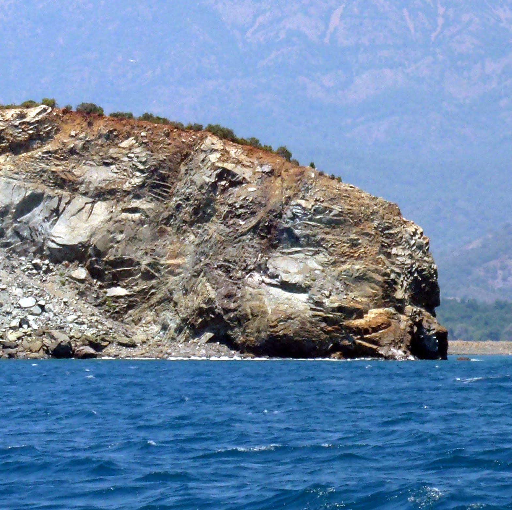
Le golfe de Fethiye vu depuis les hauteurs — les eaux turquoise de Skopea Limanı s'étendent entre les îles boisées du Taurus. C'est dans ce décor que commence notre apprentissage de la navigation côtière.
Qu'est-ce que le Permis Côtier ?
Le Permis Plaisance Option Côtière est le titre de conduite de base pour naviguer en mer à bord d'un bateau à moteur ou d'un voilier motorisé en France et dans les eaux européennes. Il autorise la navigation jusqu'à 6 milles nautiques d'un abri — soit environ 11 kilomètres au-delà de la côte la plus proche.
C'est à la fois un minimum légal et un premier pas vers la compétence maritime. Le permis côtier prouve que son titulaire connaît les règles de la route en mer, sait identifier les balises, comprend les bases de la navigation et de la météorologie, et peut réagir aux urgences à bord.
Qui doit l'avoir ? En France, le permis côtier est obligatoire pour conduire tout bateau à moteur dont la puissance dépasse 4,5 kW (6 chevaux) ou dont la vitesse peut dépasser 6 nœuds, en eaux maritimes. Les voiliers sans moteur ou avec un moteur auxiliaire de faible puissance y échappent, mais leurs skippers gagnent à le passer pour la culture maritime qu'il apporte.
En Turquie, où se déroule notre voyage, la réglementation locale prévoit son propre système de brevets. Mais les règles de navigation internationale (COLREGs — Convention on the International Regulations for Preventing Collisions at Sea) s'appliquent identiquement. Un marin qui maîtrise le permis côtier français est immédiatement opérationnel dans le golfe de Göcek.
Ce que ce cours vous apportera
La plupart des préparations au permis côtier ressemblent à un manuel de code de la route : des règles à mémoriser, des tableaux à retenir, des questions-pièges à déjouer. C'est efficace, mais sec.
Ce cours choisit une approche différente. Chaque concept est ancré dans une situation réelle de notre voyage dans le golfe de Fethiye. Les règles de priorité ? On les apprendra en sortant du chenal de Göcek avec un ferry qui arrive. Les marées ? On comprendra leur logique en comparant la Méditerranée quasi-sans-marée à la Bretagne atlantique. Le MAYDAY ? William l'appellera (en exercice) depuis la baie de Kızılada.
L'apprentissage par le concret s'installe plus profondément. Et si, dans dix ans, vous êtes en Bretagne et que la question "qui passe en premier ?" se pose, c'est le chenal de Göcek que vous visualiserez — et la réponse viendra naturellement.
La structure du cours
Le cours est organisé en 7 modules qui suivent la progression logique d'un marin débutant, du vocabulaire de base jusqu'à la pratique radio et la réglementation :
| Module | Thème | Sessions |
|---|---|---|
| 1 | Le Bateau et ses Règles | 1.1 → 1.3 |
| 2 | Lire la Mer | 2.1 → 2.3 |
| 3 | Naviguer | 3.1 → 3.4 |
| 4 | Manœuvrer | 4.1 → 4.3 |
| 5 | Sécurité | 5.1 → 5.4 |
| 6 | Radio et Réglementation | 6.1 → 6.2 |
| 7 | Épilogue et Examen Blanc | — |
Chaque session prend de 20 à 45 minutes. Le cours complet représente environ 13 heures d'étude, réparties sur autant de séances que vous le souhaitez.
Le bateau et l'équipage
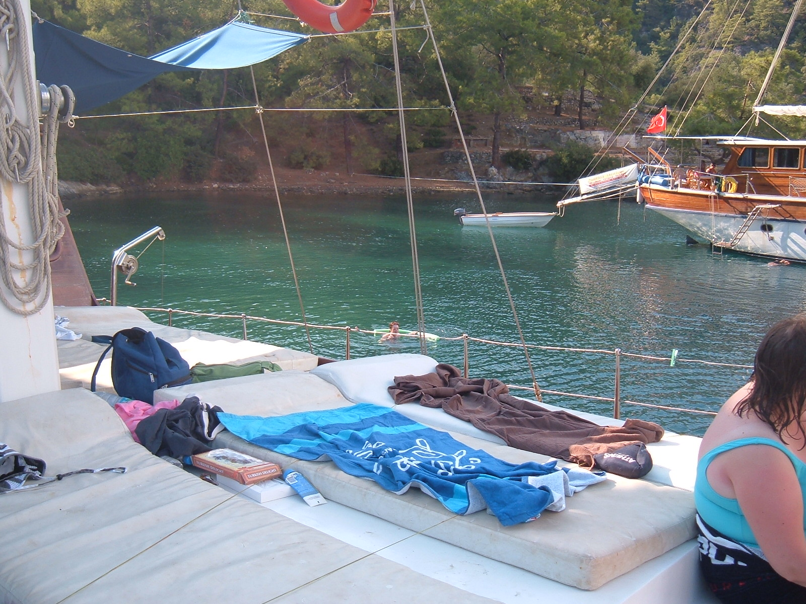
Un gulet turc typique sous voiles dans le golfe de Göcek — coque en bois vernie, deux mâts, voile d'artimon crème. Le Deniz Rüzgarı ressemble à celui-ci : 44 pieds d'acajou, gréé en ketch, conçu pour les navigations côtières de Méditerranée orientale.
Le Deniz Rüzgarı est un gulet en bois de 13,5 mètres (44 pieds). Gréé en ketch — deux mâts, le mât de misaine et le mât d'artimon — il est typique des bateaux de charter turcs du golfe de Göcek. Son moteur diesel de 75 chevaux lui permet de naviguer à 7 nœuds, et ses voiles (grand-voile + génois + voile d'artimon) lui offrent une excellente allure au largue dans la brise de mer après-midi.
L'équipage pour une semaine (samedi à samedi) :
- William (30 ans, skipper en formation) — le narrateur, celui qui apprend. Consultant en adoption et stratégie IA, il répond à des e-mails depuis le cockpit entre deux manœuvres. Novice complet en marine.
- Rebecca — la compagne de William, originaire de la Dominique, habituée aux Caraïbes et aux Bahamas. Elle est en vacances, pas en cours. Elle fait remarquer régulièrement que "aux Bahamas, l'eau est plus transparente." Elle a raison, mais on ne le dira pas.
- Emmanuel — le père de William, le seul marin expérimenté du bord. C'est lui qui dirige en fait la navigation. Bretagne, Brest, vingt ans de voile. Le golfe de Fethiye l'enchante.
- Christelle — la mère de William, également en formation aux côtés de son fils. Elle pose les questions que William n'ose pas poser.
Le capitaine local : Mehmet, qui connaît chaque crique du golfe de Göcek depuis trente ans, sera présent dans les premières sessions pour guider l'apprentissage. À partir du milieu du voyage, William prend les décisions seul.
Le golfe de Göcek — votre terrain d'apprentissage
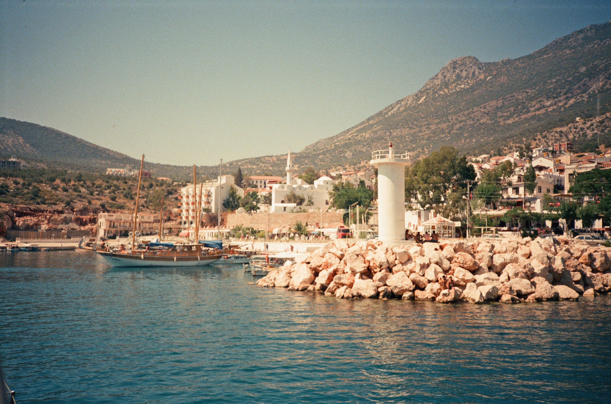
La marina de Göcek, point de départ et d'arrivée de notre semaine de navigation. Les pontons accueillent gulets, voiliers et bateaux à moteur dans un cadre protégé par les collines du Taurus. C'est ici que William apprendra ses premiers nœuds de taquet.
Skopea Limanı (golfe de Göcek) est l'un des plus beaux mouillages de Méditerranée orientale. Protégé par les collines du Taurus à l'est et au nord, il abrite une douzaine d'îles à moins de 10 milles nautiques de la marina.
Coordonnées de départ : Marina de Fethiye, 36°39'N 29°07'E — Göcek se trouve à 12 milles au SW, première étape du voyage.
Les mouillages du voyage : Tersane Island (ancienne cantine byzantine, ~3NM au SE), Fethiye (ville, tombeaux lyciens, ~12NM au NE), Ölüdeniz (Blue Lagoon, ~17NM au SW), Butterfly Valley (accessible seulement par la mer, ~23NM au SW), Hamam Koyu (source thermale naturelle, ~5NM au SE), Kızılada (Red Island, ~6NM au S).
Le temps : Étés turcs = matin calme, après-midi brise de mer (Imbat) de 10-18 nœuds du SW/NW. Marée quasi-nulle (0,2-0,3 m). Températures 35-40°C à terre, 28-30°C sur l'eau.
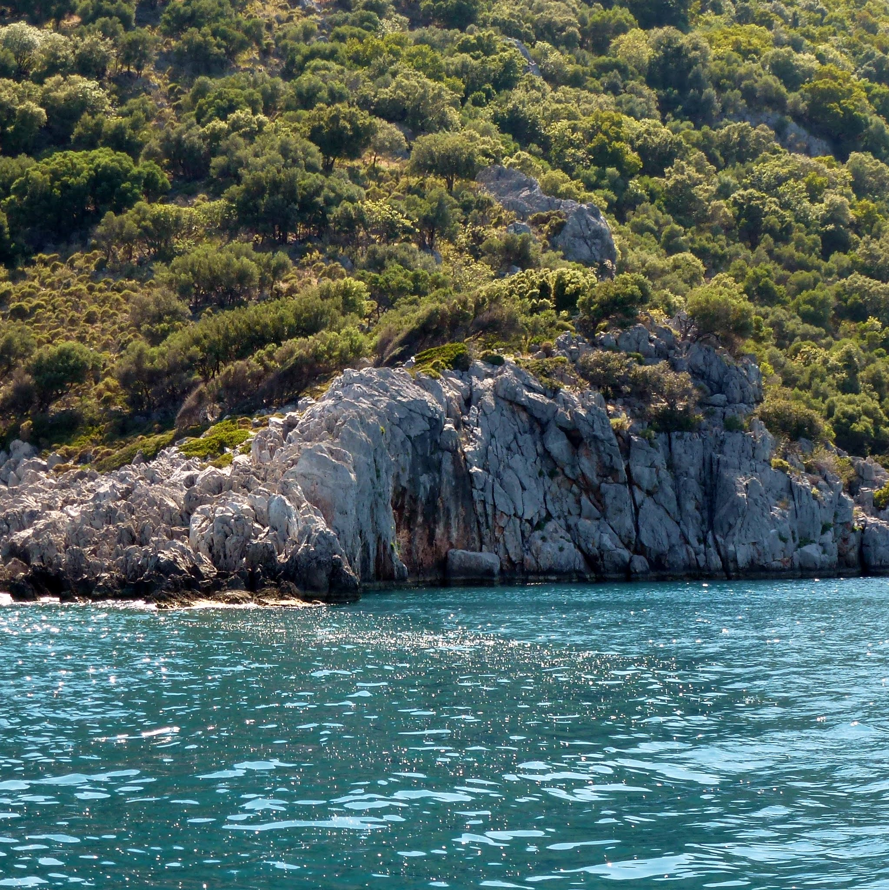
Skopea Limanı abrite une douzaine d'îles à moins de 10 milles de la marina — un terrain d'apprentissage idéal par sa diversité de situations nautiques : chenaux étroits, mouillages forains, passages entre îles, et traversées au large.
Les conditions méditerranéennes rendent ce golfe idéal pour l'apprentissage : peu de marée (on le soulignera comme enseignement), visibilité excellente, trafic modéré, fonds repérables à la couleur de l'eau.
Question 1 : Quelle est la limite de distance qu'autorise le permis côtier ?
- A) 6 milles nautiques des côtes françaises uniquement
- B) 6 milles nautiques d'un abri, dans toutes les eaux maritimes
- C) 20 milles nautiques d'un abri
Voir la réponse
Réponse : B — Le permis plaisance option côtière autorise la navigation jusqu'à 6 milles d'un abri (port, rade ou crique protégée), pas 6 milles des côtes. La distance s'apprécie depuis le refuge le plus proche, et non depuis le trait de côte. L'extension hauturière couvre au-delà.Question 2 : En naviguant dans le golfe de Göcek (Turquie), quelles règles de priorité s'appliquent ?
- A) Uniquement le droit maritime turc — les règles françaises ne s'appliquent pas à l'étranger
- B) Les COLREGs (convention internationale), identiques partout en mer
- C) Aucune règle formelle — chaque skipper adapte à sa convenance
Voir la réponse
Réponse : B — Les COLREGs (Convention on the International Regulations for Preventing Collisions at Sea, RIPAM en français) s'appliquent universellement dans toutes les eaux internationales, quelle que soit la nationalité du navire. Le permis côtier français prépare directement à naviguer sur la Méditerranée turque.Question 3 : Un mille nautique (NM) vaut exactement :
- A) 1 000 mètres
- B) 1 609 mètres (le mile terrestre anglais)
- C) 1 852 mètres (une minute d'arc de latitude)
Voir la réponse
Réponse : C — Le mille nautique = 1 852 m, défini comme la longueur d'une minute d'arc de latitude sur un grand cercle terrestre. Cette définition permet une conversion directe sur la carte marine : l'échelle des latitudes, 1 minute = 1 NM. Le mile terrestre (1 609 m) n'a aucun usage en navigation maritime.William pose son carnet — Rebecca est déjà allongée sur le pont avant avec un livre. "Par où on commence ?" demande-t-il. Emmanuel, qui a déjà fait le tour du bateau deux fois, sourit. Mehmet montre le pont. "Par le bateau lui-même. Un bon marin connaît son bateau avant de connaître la mer."
Session 1.1 — Le Voilier : vocabulaire, parties du bateau, gréement.
Le Voilier — Vocabulaire et Gréement
Dimanche soir, ponton F, Göcek Marina.
Mehmet, le capitaine du gulet voisin, accepte de faire visiter le Deniz Rüzgarı. Il pose la main sur l'étrave et regarde William. "Avant de parler de règles ou de cartes, tu dois connaître ton bateau comme ta maison. Chaque cordage a un nom. Chaque partie a une fonction. Si tu cries le mauvais mot dans une manœuvre, quelqu'un peut se blesser."
Emmanuel lève la main. "Tribord c'est le côté droit ?" Mehmet sourit. "Droit en regardant vers l'avant. Et rouge pour bâbord, vert pour tribord — comme les feux." Il tapote la coque. "Maintenant, montez. On va tout nommer." Rebecca, depuis le cockpit : "Sur les catamarans en charter aux Bahamas, il y a un aide à bord qui explique tout ça." Emmanuel : "Ici, c'est William qui explique."
Le vocabulaire de base
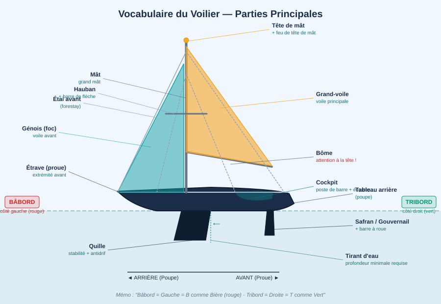
Avant de naviguer, il faut parler la langue du bateau. Voici les termes fondamentaux, organisés de l'avant vers l'arrière, puis du pont vers le haut.
Sens de déplacement :
- Bâbord — côté gauche en regardant vers l'avant (rouge)
- Tribord — côté droit en regardant vers l'avant (vert)
- Avant / proue — partie frontale du bateau
- Arrière / poupe — partie arrière
- Dessus / dessous — au-dessus / en dessous du pont
Parties de la coque :
L'étrave est la pièce avant de la coque, le bord tranchant qui fend l'eau. C'est le point le plus avancé du bateau — la première chose à entrer en contact en cas d'abordage, d'où l'importance de maintenir une veille permanente vers l'avant.
Le tableau arrière (ou transom) est la face verticale qui ferme la coque par l'arrière. Sur les voiliers modernes, le tableau arrière porte souvent l'échelle de bain et les sorties de gouvernail.
La quille est l'appendice vertical sous la coque qui assure la stabilité latérale et empêche le bateau de dériver. Sur un voilier, elle est lestée en plomb ou fonte pour abaisser le centre de gravité. Le tirant d'eau désigne la profondeur que la quille impose : si votre tirant d'eau est 1,8 m, tout fond inférieur à 1,8 m est un obstacle.
Le safran (ou gouvernail) est la surface immergée à l'arrière, reliée à la barre, qui oriente le bateau. On le manœuvre via la barre franche (tige rigide) ou la barre à roue selon les bateaux.
Le cockpit est le poste de barre : espace extérieur à l'arrière du bateau où se trouvent la barre, les winchs principaux, et les bloqueurs de cordages. C'est la salle de commandes du bateau.
Le roof (ou rouf) est le toit de la cabine, qui dépasse légèrement au-dessus du pont pour permettre une hauteur sous barrot acceptable à l'intérieur. Les hublots sont souvent montés dans le roof.
Les hiloires sont les rebords verticaux entourant le cockpit et les écoutilles, qui empêchent l'eau d'entrer dans les espaces intérieurs lors des coups de gîte. Le pont est la surface de marche horizontale du bateau. Le bastingage (filières + chandeliers) est la rambarde périmétrique qui protège les équipiers de tomber à la mer.
Le gréement d'un voilier :
Le mât est le spar vertical principal qui supporte les voiles. Sur un sloop, il y en a un ; sur un ketch comme le Deniz Rüzgarı, deux (le grand mât à l'avant et le mât d'artimon à l'arrière). Le mât est maintenu en place par un ensemble de câbles appelé le gréement dormant.
La bôme est la barre horizontale attachée en bas du mât et qui tient la bordure (bord inférieur) de la grand-voile. Elle peut osciller latéralement lors des virements de bord et représente un risque de blessure : attention à la tête lors d'un empannage.
L'étai avant (forestay) est le câble qui court du sommet du mât vers l'étrave, maintenant le mât vers l'avant. C'est souvent sur cet étai que le foc ou le génois est envoyé.
Les haubans sont les câbles latéraux qui maintiennent le mât dans l'axe vertical de chaque côté. Les barres de flèche (spreaders) sont les équerres horizontales à mi-hauteur du mât qui élargissent l'angle des haubans, améliorant leur efficacité.
Le balcon avant (pulpit) est la rambarde en inox à l'étrave, autour de laquelle les équipiers peuvent travailler en sécurité pour les manœuvres de mouillage ou de foc. Le balcon arrière (pushpit) est son équivalent à la poupe, souvent support d'antennes et d'instruments.
Les lazy jacks sont des petits cordages tendus en éventail de chaque côté de la grand-voile, du sommet de mât vers la bôme. Ils guident la voile lors de l'affalage et évitent qu'elle tombe sur le cockpit de façon anarchique.
Les voiles :
La grand-voile est la voile principale, fixée le long du mât (sur le guindant) et sur la bôme (par la bordure). Elle s'affale et se hisse au moyen de la drisse de grand-voile, et son angle par rapport au vent est contrôlé par l'écoute de grand-voile.
Le foc est la voile triangulaire à l'avant, envoyée sur l'étai avant. Le génois est un foc agrandi qui dépasse sur les côtés du mât — il offre une plus grande surface et est plus efficace par vent faible, mais plus difficile à border lors des virements. Sur les voiliers de charter, un génois à enrouleur (sur un enrouleur d'étai) permet de réduire facilement la surface en enroulant la voile.
Le spi (spinnaker) est une grande voile légère, souvent colorée, conçue pour naviguer au portant (vent arrière ou grand largue). L'asymétrique est plus facile à utiliser que le spi symétrique classique. Il n'est pas testé à l'examen du permis côtier mais vous le verrez souvent en mer.
La voile d'artimon est caractéristique des gréements en ketch ou yawl : une voile montée sur le mât d'artimon (plus petit, à l'arrière). Sur notre gulet, elle améliore l'équilibre du bateau et permet de naviguer efficacement au largue même par vent modéré.
Les cordages principaux :
La drisse (halyard) est le cordage qui monte la voile en la hissant le long du mât. Il y a une drisse par voile : drisse de grand-voile, drisse de foc. Une drisse bien réglée maintient la voile correctement tendue sur son guindant.
L'écoute (sheet) est le cordage fixé à la bordure ou au point d'écoute (coin arrière) de la voile et qui contrôle son angle par rapport au vent. On borde l'écoute (on tire) pour rentrer la voile et choquer pour la libérer. L'écoute de génois passe dans des rails sur le pont pour ajuster son angle de tirage.
Le halebas (kicker ou vang) est un système de ridoir ou palan reliant la bôme au pied du mât, tirant la bôme vers le bas. Il contrôle le vrillage de la grand-voile et empêche la bôme de se soulever au portant.
Le cunningham est un cordage attaché au guindant (bord d'attaque) de la grand-voile, juste au-dessus du point d'amure. Il permet de tendre le guindant par vent fort pour aplatir la voile et réduire sa puissance — utile pour s'adapter aux risées sans prendre un ris complet.
Les trois bords d'une voile : le guindant (bord d'attaque, courant le long du mât ou de l'étai), la chute (bord arrière, libre) et la bordure (bord inférieur, courant le long de la bôme). Leur tension respective détermine la forme et l'efficacité de la voile.
Bâbord vs tribord : le piège classique. L'erreur la plus fréquente chez les débutants est d'inverser les deux côtés. Astuce : Babord commence par B comme rouge en anglais (port = red). Voir aussi concepts/vocabulaire-nautique.
Les types de bateaux au permis côtier
Le permis côtier s'applique à tous les bateaux à propulsion mécanique naviguant en mer. La distinction entre voilier et bateau à moteur est importante non seulement techniquement, mais aussi juridiquement : elle détermine vos droits et obligations selon les règles de barre (COLREGs).
Un voilier sous voiles seules est prioritaire sur les bateaux à moteur — c'est la règle générale. Mais dès qu'il engage son moteur (même avec les voiles encore hissées), il est légalement traité comme un navire à propulsion mécanique et perd cette priorité. Il doit alors hisser un cône noir pointe en bas (marque de jour) pour signaler cette situation aux autres navires. Cette règle est fréquemment testée à l'examen.
Un semi-rigide (RIB — Rigid Inflatable Boat) est un bateau à moteur comme les autres, soumis aux mêmes règles de barre. Sa manœuvrabilité supérieure ne lui confère aucun avantage réglementaire.
| Type | Propulsion | Règles spécifiques |
|---|---|---|
| Voilier sous voiles | Vent | Prioritaire sur les bateaux à moteur dans la plupart des cas |
| Voilier sous moteur | Moteur | Traité comme un bateau à moteur |
| Bateau à moteur | Moteur | Règles standards COLREGs |
| Semi-rigide (RIB) | Moteur | Idem bateau à moteur |
Le gulet — un bateau méditerranéen
Le gulet (gulet en turc) est un type de bateau de charter traditionnel né sur les côtes égéennes turques dans les années 1940, popularisé par la tradition du mavi yolculuk (Voyage Bleu) initiée par l'écrivain Cevat Şakir Kabaağaçlı. À l'origine simples bateaux de pêche en bois de pin ou d'acajou, ils furent transformés en bateaux de plaisance confortables à partir des années 1970.
Un gulet typique mesure entre 12 et 24 mètres, avec une coque à fond plat ou légèrement arrondi qui lui confère une stabilité remarquable pour un bateau à voile. Il est gréé en ketch (deux mâts, le grand mât à l'avant et l'artimon à l'arrière), ce qui permet une répartition efficace de la surface de voile même avec un équipage réduit.
Sur le plan nautique, le faible tirant d'eau (1,5 à 2,0 m pour la plupart) et la bonne maniabilité au moteur en font un excellent bateau pour explorer les criques peu profondes de la côte turque. La propulsion principale reste le moteur diesel (100 à 200 chevaux selon la taille) ; la voile est utilisée en complément lorsque le vent se lève après-midi.
Le Deniz Rüzgarı est un gulet en bois de 13,5 mètres (44 pieds), gréé en ketch (deux mâts). La voile d'artimon est caractéristique du gulet turc. Avec un tirant d'eau de 1,8 m, il peut entrer dans la plupart des baies du golfe de Göcek, sauf les criques les plus peu profondes de Yassıca (fond 1,0–1,5 m à marée basse — en Méditerranée, la différence est négligeable).
Les nœuds essentiels
Cinq nœuds sont indispensables à maîtriser pour le permis côtier et la navigation côtière en général. Entraînez-vous à les exécuter sans regarder, dans le noir — une amarrage d'urgence peut se faire la nuit, sous la pluie, avec les mains froides.
1. Nœud de cabestan (clove hitch) : Nœud rapide pour amarrer une défense à une filière ou un cordage à un anneau provisoirement. Il se réalise en passant deux tours croisés autour d'un cylindre. Avantage : rapide à faire et à défaire. Limite : peut se desserrer si l'effort est variable — doublez-le d'un tour mort pour les amarrages prolongés.
2. Nœud de taquet (cleat hitch, séquence OXO) : Indispensable pour sécuriser une écoute ou une amarre sur un taquet. La séquence est : un tour complet autour de la base du taquet, puis alternance de passes en 8 (deux tours croisés), et enfin un demi-nœud de blocage final. L'astuce "OXO" décrit la forme vue de dessus : tour-rond (O), croix (X), tour final bloquant (O).
3. Nœud plat (reef knot) : Nœud symétrique utilisé pour nouer les garcettes de ris (les cordages qui maintiennent la voile affalée sous la bôme lors d'une réduction de voile). Se reconnaît à ses deux boucles croisées symétriquement. Attention : il n'est pas fiable comme nœud d'amarrage sous effort variable — réservez-le aux garcettes de ris.
4. Nœud de chaise (bowline) : Le nœud le plus polyvalent de la marine — il forme une boucle fixe non coulissante qui ne se serre pas sous la charge et reste facile à larguer après un effort important. Utilisé pour fixer une écoute à un point d'écoute de voile, pour passer une amarre dans un anneau de quai, ou pour réaliser une boucle de sauvetage. À maîtriser parfaitement.
5. Tour mort et deux demi-clés (round turn and two half-hitches) : Pour amarrer solidement un cordage à un anneau, une bitte ou un bollard. Le tour complet d'abord absorbe la charge, puis les deux demi-clés bloquent l'ensemble. Très sûr, facile à ajuster, résiste bien sous effort.
Voir concepts/cordages-noeuds, concepts/pratique-noeuds-marins.
Question 1 : Quel côté du bateau s'appelle "bâbord" ?
- A) Le côté droit en regardant vers l'avant (la proue)
- B) Le côté gauche en regardant vers l'avant (la proue)
- C) Le côté gauche en regardant vers l'arrière (la poupe)
Voir la réponse
Réponse : B — Bâbord est le côté gauche du bateau quand on regarde vers l'avant (la proue). C est un piège classique : si vous vous retournez, votre gauche devient la droite du bateau — mais bâbord reste fixe, côté gauche de l'axe. Bâbord = rouge ; tribord = vert.Question 2 : Mehmet demande à William de "hisser le génois". Quel cordage doit-il manœuvrer ?
- A) L'écoute de génois — elle règle l'orientation de la voile
- B) La drisse de génois — elle monte la voile le long de l'étai
- C) Le cunningham — il règle la tension du guindant de la voile
Voir la réponse
Réponse : B — La drisse (du verbe "hisser") monte la voile verticalement. L'écoute règle ensuite l'angle de la voile par rapport au vent. Le cunningham est un contrôle de coupe qui tend le guindant, pas un cordage de levage. Sur le Deniz Rüzgarı, chaque voile a sa propre drisse et sa propre écoute.Question 3 : William doit fixer une défense à la filière rapidement. Quel nœud Mehmet lui recommande-t-il pour un usage provisoire ?
- A) Le nœud de chaise (bowline) — crée une boucle fixe non coulissante
- B) Le nœud de cabestan (clove hitch) — rapide, réglable, facile à défaire
- C) Le tour mort et deux demi-clés — pour les amarrages permanents sous charge
Voir la réponse
Réponse : B — Le cabestan se pose rapidement autour d'un cylindre (filière, chandelier) et se défait aisément une fois la tension retirée. C'est le nœud provisoire par excellence en marine. Le nœud de chaise est très fiable mais plus long à nouer ; le tour mort et demi-clés convient pour les amarrages durables sous forte charge variable.Question 4 : Le Deniz Rüzgarı est un "ketch". Qu'est-ce qui distingue un ketch d'un yawl ?
- A) Le ketch a deux mâts, le mât d'artimon positionné en avant de l'axe du gouvernail
- B) Le ketch a deux mâts, le mât d'artimon positionné en arrière de l'axe du gouvernail
- C) Le ketch n'a qu'un mât mais porte deux voiles (grand-voile et génois)
Voir la réponse
Réponse : A — Sur un ketch, le mât d'artimon (mizzenmast) est en avant ou sur l'axe du gouvernail — il est plus grand et plus visible. Sur un yawl, ce mât est en arrière du safran, donc très petit. Le sloop n'a qu'un mât. Sur le Deniz Rüzgarı, le mât d'artimon porte la voile d'artimon crème visible depuis le ponton."Maintenant tu connais le bateau," dit Mehmet en sautant sur le ponton. "Demain matin, on sort. Et là-bas dans le chenal, il y a des bateaux qui arrivent de partout. Qui passe en premier ?" William note quelque chose sur son téléphone — sa façon de tout documenter, vieille habitude de consultant. Emmanuel : "Bonne question. C'est exactement ce que l'examen va demander."
Session 1.2 — Les Règles de Barre : priorités, croisements, rattrapage.
Les Règles de Barre — Priorités et Croisements
Lundi matin, 9h00. Sortie de la marina de Göcek.
Le soleil est déjà haut. William est à la barre — ses premières vraies minutes aux commandes depuis le départ du ponton. Le chenal de sortie est étroit et animé. Un ferry venant de Fethiye s'approche par bâbord. Un gulet à moteur double le nôtre par tribord. Au large, un voilier arrive face à nous sous voiles.
"Qui passe en premier ?" demande William.
Emmanuel croise les bras, satisfait. "C'est exactement la bonne question. Pose le bateau en mode 'attente', observe, et réfléchis. On a le temps." Mehmet approuve d'un signe de tête. Rebecca, depuis le roof : "En Martinique, le bateau de charter faisait juste klaxonner jusqu'à ce que les autres s'écartent." Silence poli du cockpit.
Pourquoi des règles de barre ?
Les règles de barre — codifiées dans le Règlement International pour Prévenir les Abordages en Mer (RIPAM / COLREGs) — sont le code de la route de la mer. Adoptées en 1972 par la Convention internationale de l'Organisation Maritime Internationale (OMI), elles s'appliquent dans toutes les eaux internationales — des côtes bretonnes à la mer Égée, du chenal de la Manche au golfe de Göcek. Leur objectif est simple : éviter les collisions entre navires en définissant clairement, pour chaque situation de rencontre, quel navire doit s'écarter et quel navire maintient son cap. Sans ces règles, chaque rencontre en mer serait une négociation improvisée. Avec elles, le comportement de chaque marin est prévisible — et c'est cette prévisibilité qui sauve des vies.
La hiérarchie fondamentale
La logique de base du RIPAM est que le navire le plus manœuvrant cède le passage au moins manœuvrant. Un pétrolier de 300 mètres ne peut pas dévier en quelques secondes. Un voilier au près ne peut pas faire demi-tour instantanément. Un canot à moteur de 6 mètres, lui, peut virer en moins de 20 mètres. La priorité va donc du moins au plus manœuvrant.
| Priorité | Catégorie | Condition |
|---|---|---|
| 1 | Bateaux non-maîtres de leur route (NUC) | Avarie, défaut de manœuvrabilité |
| 2 | Bateaux à capacité de manœuvre restreinte | Dragage, câble, plongée |
| 3 | Bateaux à pêche avec engins | En train de pêcher |
| 4 | Voiliers | Sous voiles uniquement |
| 5 | Bateaux à moteur | La règle générale |
Pyramide de priorité RIPAM (du plus au moins prioritaire) :
┌─────────────────────────┐
│ NUC (non-maître │ ← Priorité maximale
│ de sa route) │
├─────────────────────────┤
│ CMR (manœuvre restreinte)│
├─────────────────────────┤
│ Pêche avec engins │
├─────────────────────────┤
│ Voilier (sous voiles) │
├─────────────────────────┤
│ Bateau à moteur │ ← Le plus manœuvrant = le moins prioritaire
└─────────────────────────┘
Plus un navire est haut dans la pyramide, plus les autres doivent s'en écarter. Cette hiérarchie repose sur un principe simple : celui qui peut manœuvrer le plus facilement doit laisser passer celui qui ne le peut pas.
NUC (Not Under Command) : un navire qui a perdu sa capacité de manœuvre (avarie de gouvernail, panne moteur, etc.) signale son état par deux boules noires superposées le jour et deux feux rouges tout-horizon la nuit. Tout le monde doit s'en écarter.
CMR (Capacité de Manœuvre Restreinte) : un navire en dragage, posant un câble sous-marin, ou effectuant des travaux hydrographiques ne peut pas dévier librement. Il affiche le signal approprié et les autres navires doivent le respecter.
Pêche avec engins : un chalutier ou un caseyeur avec ses filets déployés ne peut pas manœuvrer librement. Un pêcheur à la traîne (ligne trainante seulement) n'est pas considéré comme "en train de pêcher" au sens du RIPAM.
Voilier sous voiles uniquement : la priorité générale du voilier sur le moteur repose sur sa moindre maniabilité et son incapacité à s'arrêter rapidement. Cette priorité disparaît dès que le moteur est engagé — même si les voiles sont encore hissées.
Nuance critique : Un voilier dont le moteur fonctionne, même à titre d'appoint, est légalement traité comme un navire à propulsion mécanique. Il perd sa priorité sur les autres bateaux à voile et doit hisser un cône noir pointe en bas (marque de jour). Cette règle est l'une des plus fréquentes à l'examen du permis côtier — et l'une des plus souvent ignorées en pratique.
Les situations de croisement à moteur
Entre deux navires à moteur (catégorie 5), la priorité dépend de la géométrie de la rencontre. Il existe trois situations canoniques.
Face à face (route opposée)
Deux navires se font face, routes quasiment opposées. Chacun abat à tribord (droite) de façon à ce qu'ils se croisent bâbord contre bâbord (côté gauche contre côté gauche). C'est la règle 14 du RIPAM.
Cette règle s'applique dès qu'il y a un doute sur le fait de se croiser à tribord ou à bâbord : par défaut, abattez à tribord. Le signal sonore correspondant est 1 son bref ("je viens sur tribord").
Si un navire croise à grande vitesse face à vous dans un chenal et que vous n'êtes pas sûr de sa manœuvre, un signal de 5 sons brefs (signal de doute et de danger) est toujours approprié.
Croisement
Deux navires se croisent à angle oblique. La règle 15 du RIPAM s'applique : le navire qui a l'autre sur tribord (à droite) est non prioritaire et doit s'écarter. Le navire qui a l'autre sur bâbord (à gauche) maintient son cap et sa vitesse.
Mnémonique : "Si le danger est à tribord, je m'écarte." Ou encore : "Je vois son côté rouge (bâbord) → il est à ma droite → je dois m'écarter."
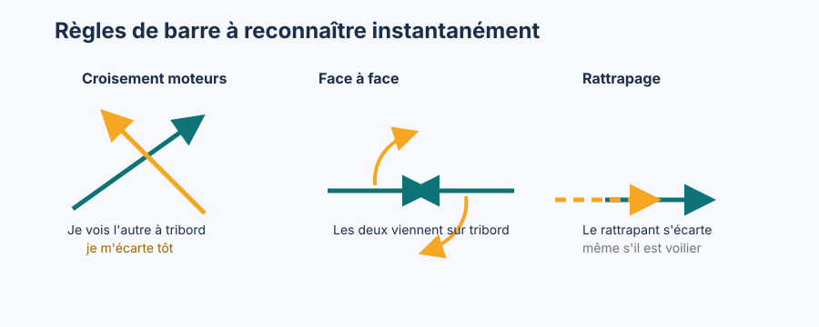
Le navire prioritaire (stand-on vessel) maintient son cap et sa vitesse. S'il constate que le non-prioritaire ne manœuvre pas à temps, il peut — et doit — manœuvrer lui-même en dernier recours pour éviter la collision (règle 17).
La manœuvre d'évitement du non-prioritaire doit être nette et ample, visible de loin. Un petit coup de barre de 5° ne suffit pas — l'autre navire doit pouvoir voir clairement que vous avez changé de route.
Voir concepts/regle-de-barre-priorite, concepts/route-directe-croisement.
Rattrapage
Le navire qui en rattrape un autre est toujours non-prioritaire, quelle que soit sa propulsion. Un voilier qui rattrape un bateau à moteur doit s'écarter, même s'il est généralement prioritaire dans d'autres situations.
Le secteur de rattrapage est défini par le RIPAM : un navire arrive par rattrapage lorsqu'il approche d'un autre depuis un angle supérieur à 22,5° en arrière du travers (donc dans les 67,5° centrés autour de la poupe). En pratique : si vous voyez uniquement le feu de poupe blanc de l'autre navire et que vous vous en rapprochez, vous êtes en situation de rattrapage.
Le rattrapant doit s'écarter jusqu'à ce qu'il soit clairement dégagé. Il ne peut pas décider de passer à tribord ou à bâbord unilatéralement dans un chenal étroit sans signalisation sonore préalable.
Voir concepts/rattrapage.
Comprendre les secteurs de feux pour identifier la situation
Pour appliquer correctement les règles de croisement et de rattrapage, il faut comprendre comment les feux de navigation découpent l'horizon autour d'un navire en secteurs angulaires précis. Chaque feu couvre un arc défini par le RIPAM, et c'est la combinaison de feux que vous percevez qui vous indique votre position relative par rapport à l'autre navire — et donc quelle règle de barre appliquer. Le feu rouge (bâbord) couvre 112,5° sur le côté gauche, le feu vert (tribord) couvre 112,5° sur le côté droit, le feu blanc de tête de mât éclaire 225° vers l'avant, et le feu blanc de poupe couvre les 135° restants à l'arrière. Si vous ne voyez que le feu de poupe blanc d'un navire, vous êtes dans son secteur arrière — vous êtes en situation de rattrapage.
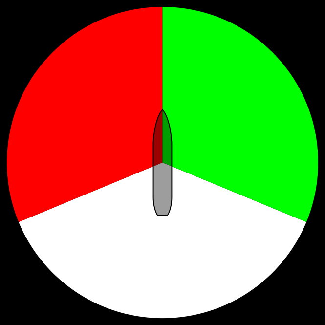
Vue de dessus des secteurs de feux de navigation : rouge à bâbord (112,5°), vert à tribord (112,5°), blanc de tête de mât vers l'avant (225°), et blanc de poupe vers l'arrière (135°). Ces secteurs sont la clé pour identifier la situation de rencontre de nuit — croisement, face-à-face ou rattrapage.
Voilier contre voilier
Les règles entre voiliers sous voiles s'appliquent uniquement quand les deux navires naviguent à la voile sans moteur. Elles sont organisées en trois cas :
Cas 1 — Amures opposées : Quand les deux voiliers reçoivent le vent de côtés différents, le voilier tribord amure (vent venant de tribord) est prioritaire. Le voilier bâbord amure doit s'écarter. Mnémonique : "Tribord amure = je suis prioritaire."
Cas 2 — Même amure : Quand les deux voiliers reçoivent le vent du même côté, le navire au vent (qui reçoit le vent en premier, plus exposé) doit s'écarter au profit du navire sous le vent (qui ne peut plus manœuvrer librement car le vent lui est dérobé par l'autre).
Cas 3 — Doute sur l'amure : Si un voilier bâbord amure aperçoit un autre voilier sur son vent sans pouvoir déterminer son amure, il doit s'écarter par précaution.
Voir concepts/voilier-vs-voilier.
Le voilier n'est pas toujours prioritaire. Un voilier sous moteur (ou avec son moteur en marche) est considéré comme un bateau à moteur et perd sa priorité sur les bateaux à voile. En pratique, beaucoup de voiliers naviguent avec le moteur — vérifiez toujours si le cône de jour est hissé.
Bateaux privilégiés et chenaux
La règle 9 du RIPAM (chenaux étroits) établit une exception importante : dans un chenal étroit ou une voie navigable balisée, tout navire qui peut raisonnablement le faire ne doit pas gêner le passage d'un navire contraint de rester dans le chenal du fait de son tirant d'eau.
"Ne pas gêner" (shall not impede) est une formulation forte : elle s'applique indépendamment des règles de priorité ordinaires. Un voilier qui est normalement prioritaire sur un bateau à moteur doit néanmoins s'écarter d'un navire contraint dans un chenal — même si ce navire arrive "par tribord".
La règle 9 s'applique aussi entre petits navires : un voilier de 10 mètres ne doit pas gêner le passage d'un voilier de 30 mètres dans un chenal étroit si ce dernier ne peut pas dévier sans risque.
Voir concepts/regles-de-barre-navires-privilegies.
Scenario Göcek : En sortant de la marina, vous entrez dans le chenal balisé (marques latérales rouges à bâbord, vertes à tribord en sortant). Un ferry de 80 mètres arrivant de Fethiye a la priorité — il est contraint par son tirant d'eau dans le chenal. Vous devez vous écarter même s'il arrive "par bâbord" dans une situation de croisement normale.
Ce n'est pas une exception aux règles — c'est la règle 9 (RIPAM) sur les chenaux étroits. Les grands navires ne peuvent pas s'écarter de leur route. Vous le pouvez. Faites-le.
Les signaux sonores
Les signaux sonores de manœuvre sont des communications obligatoires entre navires en vue les uns des autres. Ils ne remplacent pas les manœuvres — ils les annoncent.
- 1 son bref : "Je viens sur tribord" (j'abats à droite)
- 2 sons brefs : "Je viens sur bâbord" (j'abats à gauche)
- 3 sons brefs : "Je bats en arrière" (marche arrière engagée)
- 5 sons brefs ou plus : Signal de doute ou de danger — à utiliser sans hésitation si vous ne comprenez pas l'intention d'un autre navire
Aide-mémoire des signaux sonores de manœuvre :
· = son bref ─ = son long
· → Je gouverne à TRIBORD (droite)
· · → Je gouverne à BÂBORD (gauche)
· · · → Mes machines sont en marche ARRIÈRE
· · · · · (+) → DANGER / DOUTE — « Je ne comprends pas votre manœuvre »
─ → Signal de brume (moteur en route)
─ · · → Signal de brume (voilier en route)
Le signal de 5 sons brefs (ou plus) est le klaxon de la mer : utilisez-le sans hésitation dès que vous ne comprenez pas l'intention d'un autre navire. C'est à la fois un avertissement et une demande de clarification.
Ces signaux seront développés en détail à la session 1.3 avec les signaux de brume.
Question 1 : Deux bateaux à moteur se croisent. Le bateau A voit le bateau B sur son tribord. Qui est prioritaire ?
- A) Le bateau A — il voit l'autre sur tribord, donc il est protégé
- B) Le bateau B — le bateau A le voit sur tribord et doit s'écarter
- C) Le plus grand des deux bateaux
Voir la réponse
Réponse : B — En croisement, le bateau qui voit l'autre sur son tribord est le give-way vessel (non-prioritaire) : il doit s'écarter. Le bateau B est vu sur le tribord de A, donc B est le stand-on vessel (prioritaire) et maintient son cap. La taille et la vitesse ne jouent aucun rôle dans cette règle.Question 2 : Le Deniz Rüzgarı navigue sous voiles uniquement (moteur coupé) et croise un yacht à moteur. Le yacht est sur tribord du Deniz Rüzgarı. Qui s'écarte ?
- A) Le Deniz Rüzgarı — il voit le yacht sur tribord, la règle de croisement s'applique
- B) Le yacht à moteur — la règle 18 oblige un navire à propulsion mécanique à céder au voilier sous voiles
- C) Ni l'un ni l'autre — ils maintiennent tous les deux leur cap
Voir la réponse
Réponse : B — La règle 18 du RIPAM hiérarchise les catégories : un navire à moteur doit s'écarter devant un voilier sous voiles. La règle de croisement tribord/bâbord s'applique entre navires de même catégorie. Piège d'examen : si le Deniz Rüzgarı utilise son moteur, même avec les voiles hissées, il devient un navire à moteur et perd la priorité.Question 3 : William rattrape un voilier qui navigue devant lui dans le même sens, légèrement plus lentement. Que dit la règle 13 ?
- A) William est prioritaire car il rattrape — l'autre doit s'écarter
- B) Le voilier rattrapé est prioritaire — William (le rattrapant) doit s'écarter
- C) Les deux virents à tribord pour se séparer
Voir la réponse
Réponse : B — La règle 13 est absolue : le navire rattrapant (overtaking vessel) doit toujours s'écarter, quelle que soit sa catégorie. Même un voilier rattrapant un moteur doit laisser passer. On est "rattrapant" dès qu'on approche à moins de 22,5° de l'axe de l'arrière de l'autre navire.Question 4 : Le ferry de Göcek suit un chenal étroit et signale qu'il ne peut pas dévier. Le Deniz Rüzgarı sous voiles s'approche. Que doit faire William ?
- A) Maintenir son cap — le voilier sous voiles est toujours prioritaire sur un navire à moteur
- B) S'écarter et ne pas gêner le ferry contraint dans le chenal (règle 9)
- C) Appeler le ferry sur le VHF 16 et attendre ses instructions
Voir la réponse
Réponse : B — La règle 9 du RIPAM oblige tout navire pouvant manœuvrer librement à ne pas gêner un navire contraint à rester dans le chenal (trop gros pour dévier, fond insuffisant hors chenal). Cette règle prime sur la priorité habituelle du voilier. William doit s'écarter bien avant que le ferry ne soit à portée.La traversée jusqu'à Tersane Island prend 45 minutes. Ils arrivent en fin d'après-midi, se retrouvent à l'ancre dans une baie calme. Le soleil se couche derrière les collines. Les lumières s'allument sur l'eau — d'autres bateaux, au loin.
"Comment on sait ce que c'est, ces lumières ?" demande Christelle.
Session 1.3 — Feux de Navigation et Signaux : lire la mer la nuit.
Feux de Navigation et Signaux
Lundi soir, ancré au large de Tersane Island. 21h30.
La baie est noire. Les étoiles turques sont extraordinairement proches — pas de pollution lumineuse à vingt milles de la côte habitée. Rebecca est allongée sur le pont avant, regardant le ciel. "Les étoiles ici sont différentes de Nassau," dit-elle. Mais William, lui, regarde l'horizon.
Trois jeux de lumières. Un rouge fixe, un vert, un blanc qui pulse. Un rouge et un vert côte à côte avec deux blancs au-dessus. Et très loin, à bâbord, un feu tournant : le phare de Fethiye.
"C'est quoi ce truc avec le rouge et le vert ensemble ?" demande Christelle.
William ouvre son carnet. C'est l'heure d'apprendre à lire la nuit.
Pourquoi les feux ?
Les feux de navigation sont la langue de la mer la nuit. Ils permettent à tout marin d'identifier, à distance et dans l'obscurité, le type de navire qu'il observe, la direction dans laquelle il se déplace, et parfois l'activité qu'il exerce — pêche, remorquage, travaux. Sans cette lecture des feux, les règles de barre ne peuvent pas s'appliquer : vous ne savez pas à qui vous avez affaire.
L'obligation d'allumer les feux de navigation s'étend du coucher au lever du soleil et, pendant la journée, par visibilité réduite (brouillard, brume, pluie forte). En Méditerranée en été, le crépuscule tombe vite — il faut allumer les feux avant qu'il fasse vraiment noir, pas après.
Les feux de navigation permettent d'identifier, de nuit ou par visibilité réduite, le type de navire, sa direction de déplacement et parfois son activité. Un marin qui sait lire les feux peut appliquer les règles de barre sans voir la coque du bateau.
Les feux de base
Les feux de route sont les feux que porte tout navire faisant route (en déplacement). Leur géométrie est conçue pour permettre à un observateur de déduire l'orientation du navire depuis n'importe quel angle.
Le schéma ci-dessous montre les secteurs angulaires des quatre feux de navigation vus de dessus. Chaque secteur est calibré pour qu'un observateur, quelle que soit sa position autour du navire, voie une combinaison unique de couleurs. Le feu rouge de bâbord couvre 112,5° sur le côté gauche du navire, le feu vert de tribord couvre 112,5° sur le côté droit, le feu blanc de tête de mât balaie 225° vers l'avant (englobant les deux secteurs de côté), et le feu blanc de poupe couvre les 135° restants à l'arrière. Cette répartition angulaire est la raison pour laquelle les feux fonctionnent : en voyant uniquement du rouge, vous savez que vous êtes dans le secteur bâbord de l'autre navire ; en voyant rouge et vert simultanément, vous êtes face à lui ; en ne voyant que du blanc arrière, vous êtes en situation de rattrapage.
Secteurs angulaires des feux de navigation vus de dessus. La couverture angulaire de chaque feu est fixée par le RIPAM : elle garantit qu'un observateur peut toujours déduire l'orientation relative du navire à partir des couleurs visibles, de nuit comme par visibilité réduite.
Feux de route (tous les bateaux de plus de 7m sous propulsion)
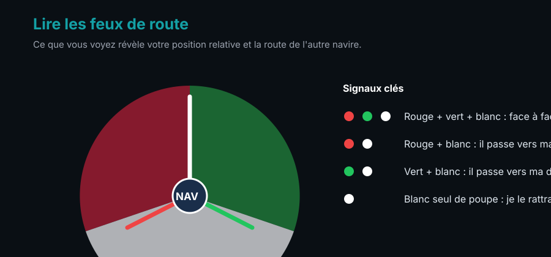
| Feu | Couleur | Secteur | Visible |
|---|---|---|---|
| Feu de côté bâbord | Rouge | 0°–112.5° (bâbord) | 2 milles |
| Feu de côté tribord | Vert | 0°–112.5° (tribord) | 2 milles |
| Feu de poupe | Blanc | 135° (secteur arrière) | 2 milles |
| Feu de tête de mât | Blanc | 225° (avant) | 3 milles |
Comment lire la situation depuis ce que vous voyez :
- Feu vert seul : vous voyez le côté tribord du navire — il traverse de gauche à droite devant vous.
- Feu rouge seul : vous voyez son côté bâbord — il traverse de droite à gauche.
- Vert + rouge simultanément : il vient droit sur vous ou presque — risque de collision potentiel.
- Blanc de poupe seul : il s'éloigne de vous.
- Blanc de tête de mât + vert (ou rouge) : bateau à moteur en route, vous voyez son avant de côté.
Voir concepts/feux-base, concepts/feux-de-route.
Voilier sous voiles seules
Un voilier qui navigue exclusivement à la voile, moteur coupé, porte uniquement ses feux de côté (rouge bâbord, vert tribord) et son feu de poupe blanc. Il ne porte pas de feu de tête de mât. C'est cette absence de feu blanc à l'avant qui distingue un voilier sous voiles d'un bateau à moteur de nuit.
Les voiliers de moins de 20 mètres peuvent opter pour une lanterne tricolore en tête de mât qui combine les trois feux en un seul appareil — pratique pour l'économie d'énergie, visible de plus loin grâce à la hauteur.
Dès que le moteur est mis en marche, le voilier allume le feu de tête de mât et est désormais traité comme un bateau à moteur — avec les obligations de règles de barre correspondantes.
Voir concepts/feux-voilier.
Bateau à moteur
Un navire à propulsion mécanique porte obligatoirement un feu blanc de tête de mât couvrant 225° vers l'avant. Ce feu, combiné aux feux de côté, permet à tout observateur de déduire la direction de marche du navire quelle que soit la position depuis laquelle il l'observe.
Pour les navires de plus de 50 mètres, un deuxième feu de tête de mât est obligatoire, placé plus en arrière et plus haut que le premier. Depuis le côté, vous verrez deux feux blancs de hauteurs différentes — le plus haut est à l'arrière. Cette configuration vous permet de déduire non seulement la direction du navire mais aussi de quelle façon il se présente à vous (face, arrière, côté).
Le feu de mouillage (blanc tout-horizon) n'est pas allumé pendant la route — son absence confirme que le navire est bien en déplacement.
Voir concepts/feux-moteur.
Feux spéciaux — connaître par cœur
Certains navires exercent des activités spéciales qui limitent leur manœuvrabilité. Leurs feux distinctifs vous informent de leur situation pour que vous puissiez appliquer la bonne règle de barre.
| Situation | Feux caractéristiques |
|---|---|
| Bateau au mouillage | Blanc tout-horizon (1 feu si < 50m) |
| Bateau échoué | 2 rouges verticaux + feux de mouillage |
| Bateau en pêche (chalut) | Vert sur rouge + feux de route si en déplacement |
| Bateau remorqué | Chaîne de remorquage > 200m → losange de jour |
Bateau au mouillage : Un seul feu blanc tout-horizon (visible de tous les côtés) à l'avant du bateau. Ce feu ne bouge pas comme les feux de route — il reste fixe parce que le bateau tourne autour de son ancre. Si vous voyez ce feu blanc seul sans feux de côté, le bateau est ancré.
Pêche au chalut : Le chalutier montre un feu vert au-dessus d'un feu rouge — mémorisez-le avec la phrase "le vert domine le rouge = pêcheur dangereux sous l'eau". Ce navire a des filets déployés derrière lui, potentiellement sur plusieurs centaines de mètres. Il est contraint dans sa manœuvre et prioritaire sur les navires à moteur.
Correspondance entre marques de jour et feux de nuit :
| Situation | Marque de jour | Feux de nuit |
|---|---|---|
| Voilier sous moteur | Cône noir pointe en bas | + Feu de tête de mât blanc (225°) |
| Mouillage | 1 boule noire | 1 blanc tout-horizon (360°) |
| NUC (non-maître de sa route) | 2 boules noires | 2 rouges tout-horizon |
| Échoué | 3 boules noires | 2 rouges + feux mouillage |
| Remorquage > 200 m | Losange noir | Feux de tête de mât spéciaux |
| Contraint par tirant d'eau | Cylindre noir | 3 rouges verticaux tout-horizon |
| Pêche (chalut) | 2 cônes pointe à pointe | Vert sur blanc (360°) |
Chaque situation a un signal diurne et un signal nocturne — apprenez les deux en parallèle. À l'examen, les questions portent souvent sur l'identification croisée : « Vous voyez deux boules noires — que signifient-elles ? Quels feux verriez-vous de nuit ? »
Remorquage : Un remorqueur avec une remorque de plus de 200 mètres montre un losange de jour (losange noir) et des feux de tête de mât particuliers. La remorque elle-même, entre les deux navires, est invisible de nuit — mais elle représente un obstacle mortel pour un navire qui passerait entre les deux.
Voir concepts/feux-mouillage, concepts/feux-peche, concepts/feux-remorquage.
Le piège des feux de mouillage. Un bateau au mouillage montre uniquement un feu blanc tout-horizon, sans les feux de côté. Si vous voyez rouge + vert + blanc, le bateau est en route. Si vous voyez seulement un blanc fixe et lent, il est ancré et vous devez le contourner.
Signaux sonores
Ces signaux sont obligatoires en présence d'autres navires en vue les uns des autres. Ils ne se substituent pas aux manœuvres — ils les accompagnent ou les annoncent. Le signal de 5 sons brefs ou plus est le signal universel de danger et de doute : utilisez-le sans hésiter dès que vous ne comprenez pas les intentions d'un autre navire.
| Manœuvre | Signal | Situation |
|---|---|---|
| 1 coup bref | J'abats à tribord | Navires en vue |
| 2 coups brefs | J'abats à bâbord | Navires en vue |
| 3 coups brefs | Marche arrière | Navires en vue |
| 5+ coups brefs | Doute / danger | Toujours |
| 1 son long / 2 min | Brume (en route sous voile) | Visibilité réduite |
Pour les dépassements en chenal étroit, le navire rattrapant qui veut dépasser par tribord envoie 2 sons prolongés + 1 bref. Par bâbord : 2 sons prolongés + 2 brefs. L'accord du rattrapé se marque par 1 prolongé + 1 bref + 1 prolongé + 1 bref.
Voir concepts/signaux-sonores-manoeuvre, concepts/signaux-sonores-brume, concepts/sons-manoeuvre.
Les marques de jour
Les marques de jour (day shapes) signalent en pleine lumière des situations qui de nuit seraient indiquées par des feux spéciaux. Elles sont noires, géométriques, et se hissent à la partie visible du gréement.
| Marque | Forme | Signification |
|---|---|---|
| Cône noir pointe en bas | Cône | Voilier naviguant sous moteur (même si voiles hissées) |
| Boule noire | Sphère | Mouillage |
| Losange noir | Losange | Remorquage avec remorque > 200m |
| Cylindre noir | Cylindre | Navire contraint par son tirant d'eau |
| 2 boules noires | 2 sphères | Navire non maître de sa route (NUC) |
| 3 boules verticales | 3 sphères | Navire échoué |
Le cône black pointe en bas est la marque la plus fréquente à l'examen et la plus ignorée en pratique. Si vous naviguez au moteur sur un voilier, hissez-le — il signale aux autres voiliers que vous n'avez pas de priorité.
Ce que vous voyez depuis Tersane Island ce soir :
-
Deux feux de côté (rouge + vert) avec blanc de poupe : bateau en route, qui approche ou longe. S'il approche face à vous, vous voyez rouge ET vert simultanément → route de collision possible.
-
Un feu blanc fixe, seul : bateau au mouillage dans la baie. Calculez un écart de sécurité.
-
Feu tournant régulier : phare de Fethiye (Fethiye Feneri), caractéristique Fl(2) 10s. Il vous indique la direction de la ville à 12NM au nord-est.
Question 1 : De nuit, vous voyez face à vous un feu rouge et un feu vert côte à côte, plus un feu blanc de tête de mât. Quelle est la situation ?
- A) Un navire au mouillage — feux rouge et vert indiquent son orientation
- B) Un navire à moteur arrivant sensiblement en face — situation de face (head-on)
- C) Un navire s'éloignant de vous — vous voyez ses feux de côté arrière
Voir la réponse
Réponse : B — Voir simultanément le feu rouge (bâbord) ET le feu vert (tribord) d'un navire avec un feu de mât blanc signifie qu'il vous fait face. C'est une situation de face : chacun vire à tribord pour se croiser bâbord contre bâbord. Un navire au mouillage montre un seul feu blanc tout-horizon (règle 30), pas de feux de côté.Question 2 : De nuit, vous voyez un feu rouge seul et fixe, légèrement à tribord de votre axe. Quelle est la situation probable ?
- A) Un navire dont vous voyez le feu de bâbord — il se déplace de votre droite vers votre gauche (ou vient vers vous)
- B) Un navire s'éloignant — le feu rouge arrière s'éteindra bientôt
- C) Un navire au mouillage en difficulté — feu rouge tout-horizon
Voir la réponse
Réponse : A — Le feu rouge est le feu de côté bâbord d'un navire (visible à 112,5° depuis l'avant). Si vous le voyez légèrement à tribord, le navire coupe votre route de droite à gauche ou arrive vers vous. Les navires au mouillage ne montrent pas de feu rouge — seulement un feu blanc tout-horizon (sauf navires contraints comme les dragueurs de mines).Question 3 : Quel signal sonore émet le Deniz Rüzgarı pour indiquer "je vire à tribord" (manœuvre en vue d'un autre navire) ?
- A) Deux sons brefs
- B) Un son bref
- C) Un son long
Voir la réponse
Réponse : B — En vue d'un autre navire, un son bref = "je gouverne à tribord" ; deux sons brefs = "je gouverne à bâbord" ; trois sons brefs = "mes machines sont en marche arrière". Un son long sert aux signaux de visibilité réduite, pas en situation de vue.Question 4 : La nuit, vous croisez un voilier qui montre un feu rouge sur bâbord, un feu vert sur tribord, et un feu blanc tout en haut de son mât. Ce feu blanc est le signe que ce voilier :
- A) Est en difficulté et demande assistance
- B) Utilise son moteur en plus de ses voiles (feu de tête de mât de navire à propulsion mécanique)
- C) Est à l'ancre
Voir la réponse
Réponse : B — Un voilier sous voiles seules montre uniquement ses feux de côté (rouge + vert) et éventuellement un feu de poupe blanc. S'il montre en plus un feu blanc de tête de mât (masthead light), c'est qu'il utilise son moteur — il est alors classé comme navire à propulsion mécanique et perd sa priorité sur les navires à moteur.La nuit à Tersane est douce — la Coupe du Monde passe sur le téléphone d'Emmanuel depuis le cockpit. William note les feux dans son carnet. Demain matin, départ vers Fethiye — 12 milles au nord-est. Pour y entrer, il faudra lire les bouées. Rebecca, depuis la cabine arrière : "Vous ne pouvez pas juste suivre les autres bateaux ?" Silence. Mais comment lire ces bouées rouges et vertes ? Et cette bizarre marque jaune avec une croix ?
Session 2.1 — Le Balisage IALA : marques latérales, cardinales, et les cinq familles.
Le Balisage IALA — Les Cinq Familles
Mardi matin, 9h15. En route vers Fethiye — cap 045.
Le Deniz Rüzgarı quitte la baie de Tersane par son extrémité nord. William est à la barre, Mehmet à côté. À l'entrée du chenal de Fethiye, une série de bouées commence à apparaître. Rouge à gauche. Verte à droite. Et puis une bizarre : noire et jaune rayée, avec deux triangles au sommet.
"Ça, c'est quoi ?" dit William en la pointant.
"Cardinale Nord. Tu passes au nord d'elle. Et là-bas, la rouge avec les bandes — eaux saines, tu peux passer tout autour. Et cette verte conique à tribord — reste dedans le chenal."
William regarde sa carte. "Il y a un système logique là-dedans ?"
"Tout est logique. Il suffit d'apprendre les codes."
Le système IALA Région A
L'IALA (Association Internationale de Signalisation Maritime) est l'organisation qui standardise le balisage dans le monde entier. Sans cette standardisation, un marin entrant dans un port étranger ne saurait pas quelle bouée éviter. Grâce à l'IALA, les règles sont identiques de Dunkerque à Istanbul.
Il existe deux régions : la Région A et la Région B. Dans la Région A — qui couvre l'Europe, l'Afrique, l'Australie et la majorité de l'Asie — le côté bâbord des chenaux est marqué en rouge. Dans la Région B — qui couvre les Amériques, le Japon et les Philippines — les couleurs sont inversées : bâbord est vert et tribord est rouge. Cette distinction est critique : un marin formé en France qui navigue aux États-Unis doit consciemment inverser ses réflexes.
La France et la Turquie sont toutes deux en Région A. Le balisage du golfe de Göcek suit exactement les mêmes codes que les côtes bretonnes.
Le système IALA Région A comprend cinq familles de marques : latérales, cardinales, eaux saines, danger isolé, et spéciales. Chaque famille a un rôle distinct, une couleur propre, et un feu nocturne caractéristique.

Les deux régions IALA dans le monde. La France et la Turquie sont en Région A : en entrant dans un port, le rouge est à bâbord (à gauche). Aux États-Unis et au Japon (Région B), les couleurs sont inversées — « red right returning ». Un marin qui change de région doit consciemment inverser ses réflexes de balisage latéral.
Famille 1 : Marques latérales
Les marques latérales balisent les bords d'un chenal navigable. Elles indiquent de quel côté vous pouvez passer en toute sécurité. La règle de base est simple : en entrant dans le port (sens conventionnel), gardez le rouge à bâbord (à gauche) et le vert à tribord (à droite).
Le sens conventionnel est défini comme la direction vers le port ou vers la terre — autrement dit, la direction d'entrée depuis la mer ouverte. En France, la règle est : sens conventionnel = en remontant les côtes de gauche à droite sur une carte (sens général vers le nord ou vers l'est). La carte marine indique toujours ce sens par une flèche sur le chenal.
La convention s'applique en entrant dans le chenal (sens conventionnel, généralement vers le port ou vers le haut d'une rivière).
| Côté | Couleur | Forme | Feu nuit |
|---|---|---|---|
| Bâbord (gauche en entrant) | Rouge | Cylindrique (boîte) | Rouge — rythme quelconque |
| Tribord (droit en entrant) | Vert | Conique | Vert — rythme quelconque |
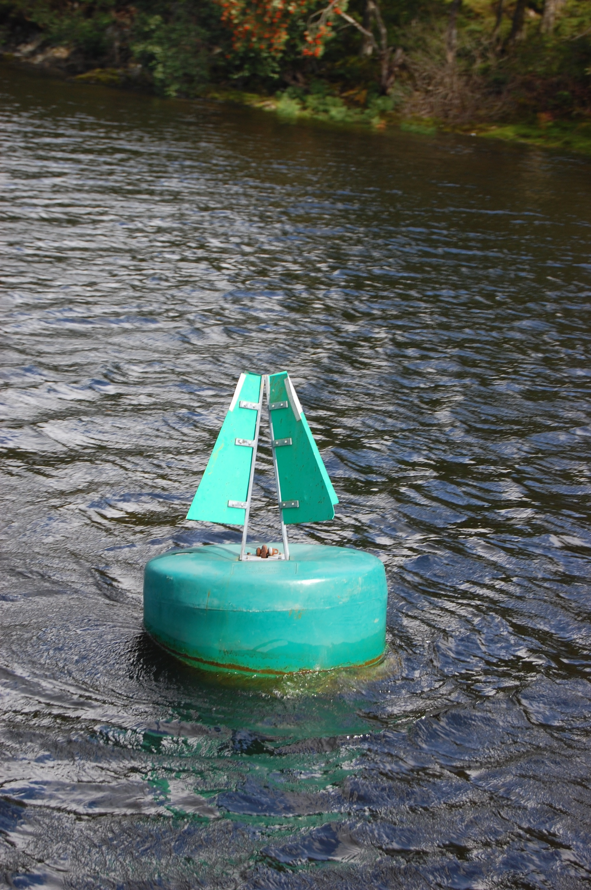
Une bouée latérale verte conique (marque tribord) en situation réelle. En entrant dans un port en Région A, gardez-la à tribord (à droite). Sa forme conique la distingue immédiatement de la cylindrique rouge de bâbord — même de loin, même par mauvaise visibilité, la silhouette suffit à identifier le côté du chenal.
Si le sens conventionnel n'est pas évident (estuaire sans flèche, rade ouverte), la règle de fond est de suivre le sens du flot de marée montante ou de se référer à la carte. En sortant du port, les marques passent de l'autre côté du bateau : ce qui était à bâbord est maintenant à tribord de votre perspective — mais la marque elle-même n'a pas bougé.
La balise de chenal préféré est une variante des latérales pour les cas où deux chenaux se rejoignent. Elle indique le chenal à favoriser par la couleur dominante de son corps et de son feu : feu rouge à 2+1 éclats = chenal préféré à tribord ; feu vert à 2+1 éclats = chenal préféré à bâbord.
Voir concepts/marques-laterales, concepts/balisage-iala-region-a.
Famille 2 : Marques cardinales
Les marques cardinales indiquent de quel côté passer par rapport à un danger. Le nom de la marque correspond au côté passable : la marque Nord s'identifie au nord du danger.
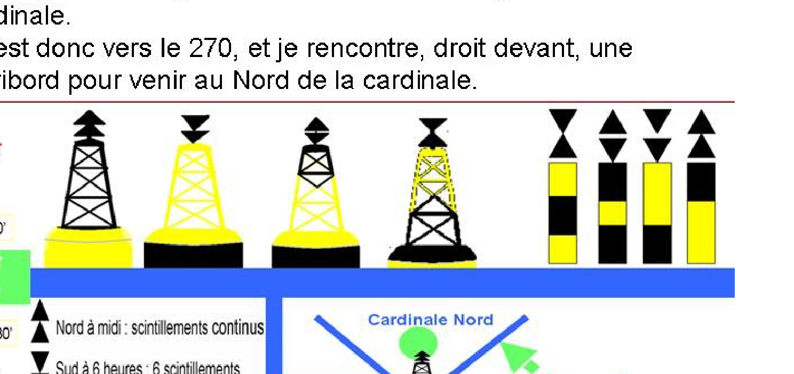
Les topmarks sont la clé — deux cônes noirs :
| Marque | Topmarks | Corps | Feux |
|---|---|---|---|
| Nord | ↑↑ pointes en haut | Noir-jaune | Q ou VQ (continu rapide) |
| Sud | ↓↓ pointes en bas | Jaune-noir | Q(6)+LFl ou VQ(6)+LFl |
| Est | ◇ base à base | Noir-jaune-noir | Q(3) ou VQ(3) |
| Ouest | ✦ tête à tête | Jaune-noir-jaune | Q(9) ou VQ(9) |
Astuce mnémonique : Nord = les pointes montent comme un N tracé à la main. Sud = pointes vers le bas. Est = les bases se touchent comme un E couché. Ouest = comme un W avec les pointes qui se rencontrent au milieu.
Pour utiliser une cardinale en navigation, commencez par identifier le voyant (les deux cônes) avant tout autre chose — c'est lui qui donne la direction, pas la couleur du corps qui peut être difficile à distinguer de loin ou de nuit. Une fois la direction connue, la règle est absolue : passez du côté indiqué par le nom.
Les feux nocturnes suivent un système mémorable basé sur l'horloge. Imaginez un cadran : Nord est à 12h, Est à 3h, Sud à 6h, Ouest à 9h. Le nombre d'éclats dans le groupe correspond à l'heure : Nord = continu (aucun groupe à compter — feu permanent), Est = 3 éclats, Sud = 6 éclats + un long (le "+" représente l'aiguille supplémentaire pour aller jusqu'à 6), Ouest = 9 éclats.
Danger nouveau : une épave récente ou un haut-fond non encore inscrit sur les cartes est signalé par deux marques cardinales identiques superposées, avec un feu à scintillements très rapides. C'est le signal d'alerte maximale.
Les quatre illustrations ci-dessous détaillent chaque marque cardinale individuellement, avec son voyant, ses couleurs et son feu nocturne.
Marque cardinale Nord — Le voyant porte deux cônes noirs pointes en haut (↑↑), rappelant la lettre N tracée à la main. Le corps est noir en haut, jaune en bas. Le feu nocturne est un scintillement continu (Q ou VQ) — pas de groupe à compter, il clignote sans interruption. La règle : passez au nord de cette marque, le danger est au sud.
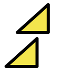
Marque cardinale Nord : voyant deux cônes pointes en haut, corps noir sur jaune, feu scintillant continu. Passez toujours au nord de cette marque.
Marque cardinale Est — Le voyant montre deux cônes base contre base (◇), évoquant un E couché ou un losange. Le corps est noir-jaune-noir (bande jaune au milieu). Le feu nocturne produit 3 éclats groupés (Q(3) ou VQ(3)) — 3 comme 3 heures sur le cadran de l'horloge, position de l'Est. Passez à l'est de la marque.

Marque cardinale Est : voyant deux cônes base contre base, corps noir-jaune-noir, feu à 3 éclats. Passez à l'est de cette marque.
Marque cardinale Sud — Le voyant porte deux cônes pointes en bas (↓↓), l'inverse exact de la Nord. Le corps est jaune en haut, noir en bas. Le feu nocturne produit 6 éclats suivis d'un éclat long (Q(6)+LFl ou VQ(6)+LFl) — 6 comme 6 heures sur le cadran. Passez au sud de la marque.
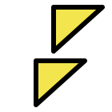
Marque cardinale Sud : voyant deux cônes pointes en bas, corps jaune sur noir, feu à 6 éclats + un long. Passez au sud de cette marque.
Marque cardinale Ouest — Le voyant montre deux cônes pointe contre pointe (✦), formant une sorte de sablier ou de W vu de côté. Le corps est jaune-noir-jaune (bande noire au milieu). Le feu nocturne produit 9 éclats (Q(9) ou VQ(9)) — 9 comme 9 heures, position de l'Ouest sur le cadran. Passez à l'ouest de la marque.
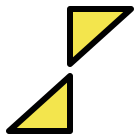
Marque cardinale Ouest : voyant deux cônes pointe contre pointe, corps jaune-noir-jaune, feu à 9 éclats. Passez à l'ouest de cette marque.
Voir concepts/marques-cardinales.
Famille 3 : Marques d'eaux saines
La marque d'eaux saines est une balise de bonne nouvelle : elle signale qu'il n'y a aucun danger dans les eaux environnantes. On peut passer de tous les côtés. On la trouve typiquement en tête de chenal (avant les premières latérales), à l'entrée d'une passe, ou à mi-chenal pour indiquer un axe navigable.
Son identification est fiable et mémorable : corps rayé verticalement rouge et blanc, voyant sphère rouge. La nuit, son feu est blanc — isophase (durées égales lumière/obscurité), à occultations (lumière dominante), ou Morse A (un point, un tiret : · –). Tous ces rythmes blancs sur un corps rayé rouge-blanc = eaux saines, on peut s'en approcher.
À l'examen, le piège classique est de confondre la marque d'eaux saines avec le danger isolé (également blanc nocturne) : la différence tient au voyant — sphère rouge unique = eaux saines, deux boules noires = danger isolé.
Corps à bandes verticales rouges et blanches. Topmark : sphère rouge. Feu : Iso, Oc, 1 éclat long. Passage possible tout autour — souvent en tête de chenal.

La marque d'eaux saines avec ses bandes verticales rouges et blanches et son voyant sphérique rouge. On la reconnaît de loin grâce à ses rayures verticales — la seule bouée du système IALA avec ce motif. Passage possible de tous les côtés : elle indique l'absence de danger dans les eaux environnantes.
Voir concepts/marques-eaux-saines.
Famille 4 : Marques de danger isolé
La marque de danger isolé signale un danger ponctuel — un rocher, une épave, un haut-fond localisé — qui est entouré d'eaux navigables de tous les côtés. On peut donc passer à bâbord ou à tribord de la marque, mais en s'en tenant largement écarté.
Son identification : corps noir avec une ou deux bandes rouges horizontales, voyant deux boules noires superposées. La nuit, son feu est blanc à 2 éclats — c'est le seul feu blanc avec exactement 2 éclats groupés dans le système IALA, ce qui la rend impossible à confondre une fois mémorisée.
La logique est cohérente avec son nom : "danger isolé" — il y a un seul danger localisé, les eaux autour sont saines. C'est différent d'une zone à éviter entièrement : vous pouvez rester dans les parages, mais ne passez pas dessus.
Corps noir-rouge-noir. Topmark : deux sphères noires superposées. Feu : Fl(2). Danger ponctuel — les eaux navigables tout autour, mais ne passez pas dessus.
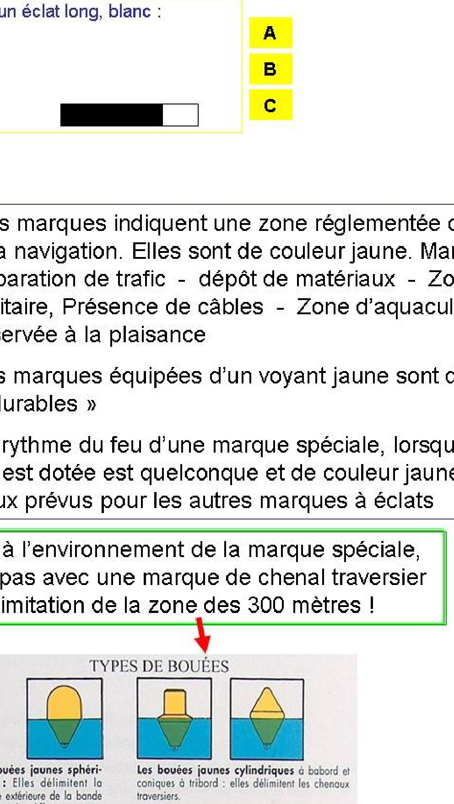
La marque de danger isolé signale un écueil ponctuel (rocher, épave) entouré d'eaux navigables. Les deux boules noires superposées sont son signe distinctif — ne les confondez pas avec la sphère rouge unique de la marque d'eaux saines. Contournez de tous les côtés en gardant vos distances, mais ne passez jamais directement au-dessus.
Voir concepts/marques-danger-isole.
Famille 5 : Marques spéciales
Les marques spéciales ne signalent ni un chenal, ni un danger, ni une eau saine : elles délimitent une zone à signification particulière définie par les autorités locales. Leur seule caractéristique commune est la couleur jaune — corps jaune, voyant croix jaune, et un feu jaune la nuit si équipé.
Exemples d'utilisations courantes : câbles sous-marins (défense d'ancrer), zones d'aquaculture, zones de baignade ou de sports nautiques, champs de mines désaffectés, zones de régate, bouées de recherche océanographique, délimitation de zones militaires d'exercice.
La règle pratique : quand vous voyez du jaune, consultez la carte avant de pénétrer dans la zone. La marque ne précise pas pourquoi la zone est délimitée — c'est la carte ou le portulan local qui le dit.
Corps jaune, forme quelconque. Feu jaune. Indiquent des zones réglementées, câbles, activités spéciales, zones de baignade.
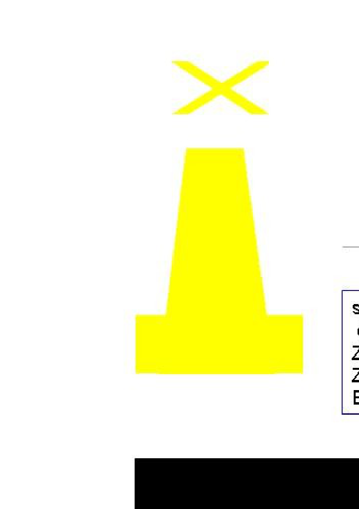
La marque spéciale est entièrement jaune avec un topmark en croix (×). Elle délimite des zones à signification particulière : câbles sous-marins (interdiction d'ancrer), zones de baignade, aires de mouillage réglementées, zones militaires. Quand vous voyez du jaune, consultez la carte pour connaître la restriction applicable.
Voir concepts/marques-speciales.
Piège classique : bâbord et tribord dépendent du sens de navigation. En entrant dans le port de Fethiye (sens conventionnel : depuis la mer vers le port), la rouge est à bâbord et la verte à tribord. En ressortant, c'est l'inverse. La carte précise toujours le sens conventionnel par une flèche.
Marques spéciales de port
Les marques de musoir désignent les petits fanaux ou panneaux colorés placés à la pointe extrême des jetées et digues d'entrée d'un port. Ils reprennent les couleurs latérales standards : feu rouge à bâbord, feu vert à tribord en entrant. En approchant un port de nuit, les musoirs sont souvent les premières lumières de port que vous distinguez — ils cadrent visuellement l'entrée de la passe.
Les marques de plage (groupe 3 IALA) sont des bouées jaunes qui délimitent les zones de baignade et les chenaux traversiers de plage. Elles n'ont pas de feu la nuit — à ne pas confondre avec les marques spéciales hors-groupe (voyant croix jaune, feu jaune éventuel).
La balise de chenal préféré (déjà décrite dans les latérales) indique le meilleur chenal à deux voies. Sa couleur dominante indique le côté préféré pour les navires de fort tirant d'eau.
Voir concepts/marques-de-musoir, concepts/marques-de-plage, concepts/marques-chenal-prefere.
Chenal de Fethiye (Fethiye Limanı) : En approchant de Fethiye depuis le sud-ouest, le chenal est balisé avec des marques latérales IALA A. Les premières bouées rouges cylindriques (bâbord) vous indiquent la limite ouest du chenal. Une cardinale Nord (noire-jaune, topmarks pointes en haut) marque un rocher immergé à l'entrée — vous passez au nord d'elle. Les fonds dans le chenal principal sont de 8–15 m, largement suffisants pour un gulet.
Question 1 : En entrant dans la marina de Göcek, vous voyez une bouée rouge cylindrique sur votre bâbord (vous venez de la mer). Que signifie-t-elle et que faites-vous ?
- A) Marque bâbord (IALA A) — gardez-la à bâbord en entrant au port
- B) Marque tribord (IALA A) — gardez-la à tribord en entrant au port
- C) Marque cardinale — passez au nord de cette bouée
Voir la réponse
Réponse : A — En système IALA région A (Europe, Méditerranée), la marque bâbord est rouge et cylindrique. Elle se laisse à bâbord quand on remonte dans le sens conventionnel (en entrant au port). La règle mnémotechnique : "rouge à gauche en entrant" (IALA A). En système B (Amériques), c'est l'inverse.Question 2 : Une marque avec un corps noir en haut et jaune en bas, surmontée de deux cônes pointes opposées (l'une vers le haut, l'autre vers le bas), indique :
- A) Cardinale Est — passez à l'est de cette marque
- B) Cardinale Ouest — passez à l'ouest de cette marque
- C) Cardinale Sud — passez au sud de cette marque
Voir la réponse
Réponse : B — Cardinale Ouest : corps jaune en haut, noir en bas (J-N), topmarks deux cônes pointes opposées ("X" vu de côté, ou sablier). Mémo couleurs : N (nord) = noir au-dessus, S (sud) = jaune au-dessus, E (est) = noir-jaune-noir, W (ouest) = jaune-noir-jaune. Passez toujours du côté indiqué par la marque (ici : à l'ouest).Question 3 : Devant vous : une bouée à rayures verticales rouges et blanches, avec une sphère rouge en topmark. Que signifie-t-elle ?
- A) Danger isolé — eau peu profonde tout autour, évitez
- B) Marque d'eaux saines — eau navigable tout autour, souvent placée en tête de chenal
- C) Marque spéciale (travaux, mouillage interdit) — passez au large
Voir la réponse
Réponse : B — Corps rayé rouge-blanc vertical + sphère rouge = marque d'eaux saines (safe water mark). Les eaux environnantes sont navigables dans toutes les directions. La marque de danger isolé (à éviter) est noire avec bandes horizontales rouges et deux sphères noires en topmark.Question 4 : Vous longez la côte et apercevez une marque jaune en forme de croix (topmark X). Quelle est sa signification ?
- A) Cardinale Est — passez à l'est
- B) Marque de danger isolé
- C) Marque spéciale — zone réglementée (mouillage, câble, zone militaire…)
Voir la réponse
Réponse : C — La marque spéciale est entièrement jaune avec un topmark en X jaune. Elle délimite une zone à signification particulière (zone de mouillage, câble sous-marin, zone militaire, circuit de course…). Elle n'indique pas de danger de navigation mais une réglementation à respecter. Ne pas confondre avec les cardinales (corps bicolore noir/jaune).Göcek à Fethiye : 12 milles, 1h45 de route. L'équipage est impressionné par les falaises et les tombeaux lyciens visibles depuis l'eau. William, lui, a maintenant les bouées en tête. Mais ce qu'il doit apprendre ensuite, c'est à lire la carte qui lui permet de planifier la route avant de lever l'ancre.
Session 2.2 — La Carte Marine : lecture, symboles et mesure de distance.
La Carte Marine — Lecture et Symboles
Mardi midi, ancré dans la baie de Fethiye. À table.
William a étalé la carte Imray T1 sur la table du cockpit — Turkish Waters & Cyprus Pilot côté golfe de Fethiye. Christelle regarde les chiffres partout sur la mer. "C'est quoi tous ces nombres ?"
"Les profondeurs. En mètres."
"Et les 5.5 là-bas entre les deux rochers ?"
"5,5 mètres à marée basse. On a 1,8m de tirant d'eau, donc on passe."
Emmanuel se penche. "Et là, le symbole avec des petits points ?"
William cherche dans la légende. La carte marine est un monde entier à apprendre à lire.
La carte marine — votre contrat avec la réalité
Contrairement à une carte routière qui montre ce qui est à la surface, la carte marine montre avant tout ce qui est en dessous : les profondeurs, les rochers submergés, les hauts-fonds, les épaves. C'est votre contrat avec la réalité sous-marine — une réalité que vous ne pourrez jamais vérifier à l'œil, sauf quand il est trop tard.

Une carte Admiralty historique de la baie de Fethiye, levée par la Royal Navy en 1886. Les conventions de symboles et de sondes étaient déjà standardisées à l'époque — la cartographie marine moderne en est l'héritière directe. Les mêmes rochers signalés il y a 140 ans figurent toujours sur votre carte Imray actuelle.
En France, les cartes marines officielles sont publiées par le SHOM (Service Hydrographique et Océanographique de la Marine). Imray, l'éditeur britannique, publie des séries régionales très utilisées en Méditerranée (dont la T1 pour les eaux turques). Toutes les cartes sérieuses partagent les mêmes conventions IALA et les mêmes symboles internationaux du SHOM/IHO.
Les profondeurs sont données par rapport au zéro hydrographique (lowest astronomical tide, LAT) — le niveau le plus bas que la mer peut théoriquement atteindre. Cela signifie que les sondes imprimées sur la carte sont des minimums garantis : la profondeur réelle sera toujours égale ou supérieure à la sonde, sauf en cas d'erreur de sondage. Les hauteurs à terre (falaises, phares) sont mesurées par rapport au niveau moyen de la mer ou à la pleine mer de vive-eau.
L'échelle d'une carte exprime le rapport entre la distance sur la carte et la distance réelle. Une carte à 1:50 000 signifie que 1 cm sur la carte représente 50 000 cm = 500 m dans la réalité. Retenez : grande échelle = grande précision = petite zone couverte. Il ne faut jamais utiliser une carte de petite échelle (1:200 000 ou moins) pour naviguer en eaux côtières étroites.
Les cartes doivent être tenues à jour par les avis aux navigateurs publiés par le SHOM. Une carte obsolète peut ne pas mentionner une nouvelle épave, un chantier naval, ou un changement de balisage. Vérifiez toujours la date d'édition avant un passage délicat.
La carte marine est votre source de vérité sur le terrain sous-marin et les dangers. Avant toute navigation, elle doit être consultée. Elle montre :
- Les fonds (sondes) — en mètres par rapport au zéro hydrographique (MLWS)
- Les dangers — roches, épaves, bancs
- Les balises et phares — avec leurs caractéristiques
- Les zones réglementées — réserves, chenaux, zones militaires
- Les amers — points de repère à terre
Lire les sondes
Les sondes imprimées sur la carte représentent la profondeur d'eau au zéro hydrographique. Il ne s'agit pas d'une mesure prise à un moment donné, mais d'une valeur normalisée pour permettre la comparaison universelle. La profondeur réelle à l'instant t vaut : profondeur réelle = sonde + hauteur de marée actuelle.
En Méditerranée orientale où la marée est quasi-nulle, la profondeur réelle est pratiquement identique à la sonde. Sur les côtes atlantiques françaises, cette addition peut faire varier la profondeur réelle de plusieurs mètres entre basse mer et haute mer.
Les sondes sont données par rapport au zéro hydrographique (MLWS = Lowest Astronomical Tide). C'est le niveau le plus bas possible — les profondeurs réelles sont donc toujours supérieures ou égales à la sonde carte.
| Symbole | Signification |
|---|---|
| Nombre sous-marin simple (ex: 8) | Profondeur en mètres au zéro hydro |
| Nombre souligné ou barré (ex: ~~2~~) | Roche qui découvre à marée basse (hauteur en mètres au-dessus du zéro) |
| + (croix) | Roche couverte à moins de 2 m |
| Astérisque * | Roche couverte dangereuse (profondeur inconnue) |
| (entre parenthèses) | Sonde hors position (le long d'un quai, par exemple) |
| ED | Existence douteuse — le danger existe peut-être, prudence maximale |
| SD | Sonde douteuse — la profondeur indiquée est incertaine |
La roche découvrante (sonde soulignée) est particulièrement traître : elle est couverte à marée haute et visible à marée basse. Sur les côtes à forte amplitude comme la Bretagne, une roche à 1,2 m au-dessus du zéro peut être totalement submergée à 5 m de profondeur en pleine marée. Elle n'est donc pas sur la carte comme "danger immédiat" — mais elle le devient à marée basse.
Voir concepts/navigation-symboles-cartes, concepts/carte-marine.
Coordonnées géographiques
La position d'un point en mer se donne par sa latitude et sa longitude. La latitude mesure la distance angulaire par rapport à l'équateur (0° à l'équateur, 90° aux pôles). La longitude mesure la distance angulaire par rapport au méridien de Greenwich (0° à Greenwich, jusqu'à 180° est et ouest).
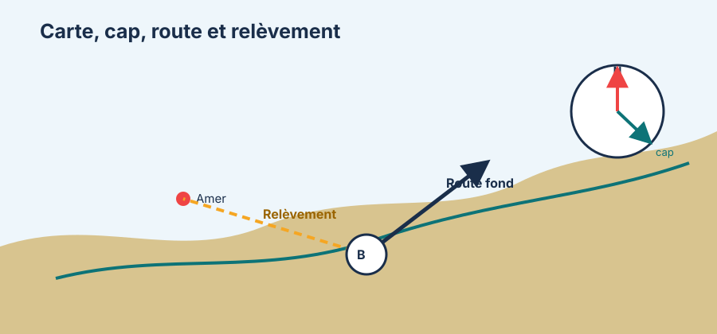
Latitude — lignes horizontales parallèles à l'équateur. Se lit sur les bords gauche et droit de la carte. Nord = positif.
Longitude — lignes verticales (méridiens). Se lit en haut et en bas de la carte. Est = positif.
Format sur les cartes marines : degrés, minutes, dixièmes de minute. Ex : 36°45.3'N, 28°57.6'E.
Pour lire une position sur la carte, placez vos compas de navigation (ou vos doigts) entre les graduations du bord. Chaque degré est divisé en 60 minutes sur l'échelle de latitude ; chaque graduation de 1 minute est souvent divisée en 6 ou 10 sous-graduations représentant des dixièmes ou des dixièmes de minutes.
Accord de datum : assurez-vous que votre GPS et votre carte utilisent le même système géodésique (datum). La plupart des cartes modernes et des GPS utilisent WGS84. Un datum incorrect peut décaler votre position indiquée de 100 à 500 mètres — suffisant pour vous placer sur une roche alors que le GPS affiche "eau libre".
Voir concepts/latitude-longitude, concepts/navigation-coordonnees-et-distances.
Mesurer les distances
La clé pour mesurer des distances en milles nautiques tient en une phrase : la définition même du mille nautique est empruntée à la géographie terrestre. Un mille nautique = une minute d'arc de latitude = 1/60 de degré = 1852 mètres. Ce n'est pas une coïncidence pratique — c'est la définition.
En conséquence, l'échelle des latitudes (les graduations sur les bords verticaux de la carte) est littéralement une règle de mesure de distances, déjà étalonnée en milles nautiques. Posez vos compas sur la distance à mesurer, puis reportez-les sur le bord de la carte à la même latitude que la route — et lisez directement en minutes = en milles nautiques.
Pour mesurer des routes longues sur des cartes de petite échelle, mesurez en segments, car la projection Mercator introduit un léger étirement aux hautes latitudes.
Règle d'or : mesurez toujours les distances sur l'échelle des latitudes (bords verticaux de la carte), jamais sur l'échelle des longitudes. Une minute d'arc de latitude = 1 mille nautique (1852 m). L'échelle des longitudes varie avec la latitude — elle est inutilisable pour les distances.
Symboles essentiels à reconnaître
| Symbole | Signification |
|---|---|
| Ancre entourée d'un cercle pointillé | Zone de mouillage recommandée |
| Ancre barrée | Mouillage interdit |
| PD | Position Douteuse — la position du danger est incertaine |
| ED | Existence Douteuse — le danger lui-même n'est pas confirmé |
| PA | Position Approchée — position approximative seulement |
| Obstn | Obstruction — obstacle submergé de nature indéterminée |
| Wr ou Wk | Épave (Wreck) — profondeur indiquée si connue |
| Côtés hachurés + profondeur | Épave partiellement visible à marée basse |
| R | Roche |
| S | Sable (Sand) — nature du fond |
| M | Vase (Mud) — nature du fond |
| Wd | Algues/Herbiers (Weed) |
| Teinte bleue claire | Profondeurs < 10 m (zone de danger côtier) |
| Teinte verte | Estran (zone découvrant à marée) |
| Câble avec tirets | Câble sous-marin — interdiction d'ancrer |
| Zone hachurée rouge | Zone réglementée ou interdite |
| Vitesse dans un cercle | Limite de vitesse |
| Flèche pointillée | Courant (avec force en nœuds) |
| Étoile avec liseré magenta | Feu de navigation (phare ou balise lumineuse) |
Regroupement des symboles par niveau de danger :
🔴 DANGER IMMÉDIAT
+ (croix) Roche couverte < 2 m
* (astérisque) Roche dangereuse, profondeur inconnue
ED Existence douteuse — le danger existe peut-être
🟡 ATTENTION
Teinte bleue Profondeurs < 10 m (zone de danger côtier)
Teinte verte Estran (zone découvrant à marée basse)
Zones hachurées Câbles, zones interdites
🟢 INFORMATION
Ancre + cercle Mouillage recommandé
Ancre barrée Mouillage interdit
Flèche pointillée Courant (avec force en nœuds)
À l'examen, la lecture des symboles est une compétence testée systématiquement. Classez-les mentalement par gravité : une croix (+) exige une réaction immédiate (changement de cap), une teinte bleue appelle la prudence, une ancre est une information de planification.
Voir concepts/navigation-symboles-cartes, concepts/carte-marine.
Les projections et l'échelle
La quasi-totalité des cartes marines utilisent la projection de Mercator. Dans cette projection, les méridiens (longitudes) sont des lignes droites verticales et les parallèles (latitudes) sont des lignes horizontales — ce qui simplifie la navigation car les caps droits tracés sur la carte correspondent à des routes réelles droites (loxodromes).
L'inconvénient : les surfaces sont déformées. Un degré de latitude en haut d'une carte représente davantage de distance réelle qu'en bas. C'est pourquoi l'échelle des latitudes n'est pas uniforme sur les cartes de grande couverture — et pourquoi on mesure les distances au bord de la carte, à la latitude de la route, pas n'importe où sur le bord.
Choisir la bonne échelle :
- 1:50 000 ou plus grande — entrée de port, rade, approach étroite. Chaque danger est visible.
- 1:200 000 — navigation côtière de passage. Vue d'ensemble du littoral.
- 1:1 000 000 — planification offshore. Jamais pour de la navigation côtière.
Utiliser une carte trop petite dans des eaux dangereuses est une faute professionnelle. Les échouages par carte inadaptée sont mentionnés dans les statistiques d'accidents de navigation de plaisance.
La rose des vents et le compas
Sur chaque carte marine, vous trouverez une ou plusieurs roses des vents imprimées. Cette figure circulaire, héritée de la tradition cartographique médiévale, reste un outil de navigation essentiel. Elle divise l'horizon en 360 degrés et traditionnellement en 32 rumbs (directions nommées : Nord, Nord-Nord-Est, Nord-Est, etc.). Sur la carte, elle sert à la fois de référence visuelle pour orienter rapidement le regard et d'outil pratique pour tracer ou lire des caps à l'aide d'une règle Cras ou d'un rapporteur.

La rose des vents telle qu'elle apparaît sur les cartes marines. Le cercle extérieur indique le nord vrai (géographique), le cercle intérieur le nord magnétique. L'écart entre les deux est la déclinaison (ou variation) magnétique de la zone, indispensable pour convertir les caps entre compas et carte.
La rose des vents sur une carte marine comporte généralement deux cercles concentriques. Le cercle extérieur est orienté sur le nord vrai (Nord géographique, aligné avec les méridiens de la carte). Le cercle intérieur est orienté sur le nord magnétique de la zone, avec une notation indiquant la variation magnétique et son taux de changement annuel (ex : Var 4°E (2024) diminuant 7' par an).
Pour tracer ou lire un cap magnétique, utilisez le cercle intérieur. Pour un cap vrai (coordonné avec les méridiens de la carte), utilisez le cercle extérieur. En pratique sur un voilier moderne, votre compas lit le nord magnétique — donc les caps que vous tenez sont magnétiques, et doivent être convertis en vrais avant d'être tracés sur la carte (ou vice versa).
Le schéma ci-dessous illustre les symboles utilisés sur les cartes marines pour représenter les routes planifiées et les caps suivis par un navire. Ces notations standardisées permettent au navigateur de tracer sa route à l'avance sur la carte, en indiquant le cap vrai (Cv), le cap magnétique (Cm), la distance à parcourir, et les waypoints intermédiaires.
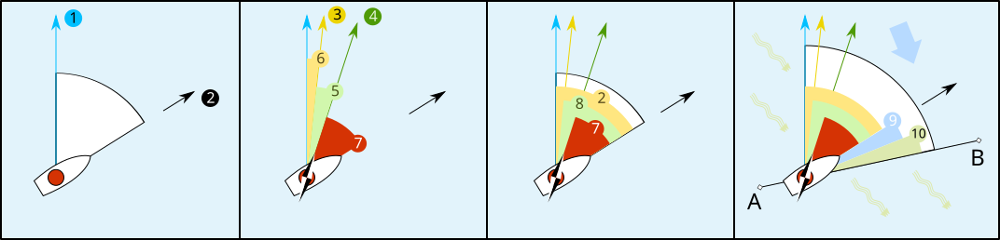
Symboles de route et de navigation sur une carte marine : la ligne de route est tracée avec le cap vrai inscrit au-dessus et la distance en milles nautiques en dessous. Les waypoints sont marqués par des cercles ou des croix. Ces conventions permettent de préparer et de vérifier une traversée avant le départ.
Voir concepts/navigation-relevements-et-caps.
Carte Imray T1 (Turkish Waters), extrait zone Göcek :
Entre Göcek Marina (36°45.3'N 28°57.6'E) et Tersane Island (36°43.5'N 28°58.2'E), la route directe de 148°V longe le bord ouest des Yassıca Adaları. Les sondes le long du passage varient de 12 à 30 m. Un banc côté est à 5 m est signalé à 36°44.0'N 28°58.8'E — à éviter si vous continuez vers les petites criques de l'est.
Distance Göcek → Tersane : 2,8 NM (mesurée sur l'échelle de latitude, soit ~3 minutes d'arc).
Question 1 : Sur une carte marine, comment mesure-t-on une distance en milles nautiques ?
- A) Sur l'échelle des longitudes (axe horizontal) — 1 degré = 60 NM
- B) Sur l'échelle des latitudes (axe vertical) — 1 minute d'arc = 1 NM
- C) Sur la barre d'échelle graduée imprimée en bas de la carte
Voir la réponse
Réponse : B — L'échelle des latitudes (bord gauche/droit de la carte) est la seule valide pour mesurer des distances : 1 minute d'arc de latitude = 1 mille nautique. L'échelle des longitudes se contracte vers les pôles et est inutilisable pour les distances. La barre d'échelle en bas est valide uniquement à la latitude de référence de la carte — moins précise sur les cartes à grande couverture.Question 2 : La sonde "3" soulignée (notation cartographique du SHOM) indique :
- A) Une roche qui découvre à 3 mètres au-dessus du zéro hydrographique (danger à marée haute)
- B) Une profondeur de 3 mètres en dessous du zéro hydrographique (fond peu profond)
- C) Une correction récente de 3 mètres sur la sonde originale
Voir la réponse
Réponse : A — Le chiffre souligné (underlined figure) signifie que c'est la hauteur en mètres au-dessus du zéro hydrographique à laquelle la roche découvre. C'est un danger : à marée haute ce rocher est immergé mais à marée basse il émerge. Ne pas confondre avec une sonde normale (profondeur sous le zéro hydrographique).Question 3 : Quelle est la signification du symbole "Pa" sur une carte marine à proximité d'un fond ?
- A) Passage autorisé à cet endroit
- B) Nature du fond : sable vaseux (Pasty sand) — important pour le mouillage
- C) Profondeur approximative — donnée non vérifiée
Voir la réponse
Réponse : B — Les abréviations de nature de fond sont standardisées sur les cartes marines : S = sand (sable), M = mud (vase), Sh = shells (coquilles), Rk = rock (roche), Co = coral (corail), Pa = sand mixed with mud. Ces indications sont cruciales pour choisir l'ancre et évaluer la tenue du mouillage dans le golfe de Göcek.Question 4 : Sur une carte Mercator, deux points de même latitude mais à 10 degrés de longitude de distance. Peut-on mesurer cette distance en utilisant les 10 degrés de longitude directement ?
- A) Oui — à l'équateur, 1 degré de longitude = 60 NM, quelle que soit la latitude
- B) Non — la longueur d'un degré de longitude diminue avec la latitude (cos de la latitude)
- C) Oui — la projection Mercator conserve les angles et donc toutes les distances
Voir la réponse
Réponse : B — En projection Mercator, les méridiens sont des droites parallèles verticales, mais la longueur réelle d'un degré de longitude diminue proportionnellement au cosinus de la latitude. À 36°N (golfe de Göcek), 1 degré de longitude ≈ 60 × cos(36°) ≈ 48,5 NM. On ne peut donc jamais utiliser l'axe horizontal pour mesurer des distances.Depuis l'ancre, William regarde la baie de Fethiye. Les tombeaux lyciens sont découpés dans la falaise. Un phare clignote à l'entrée de la baie. "Comment on lit la caractéristique d'un phare ?" demande-t-il.
Session 2.3 — Phares et Aides à la Navigation : identifier et utiliser les amers lumineux.
Phares, Secteurs et Amers
Mardi soir, ancré baie de Fethiye. 22h00.
William est au quart de nuit — une heure, de 21h à 22h. Emmanuel et Christelle dorment dans la cabine avant. Rebecca dort dans la cabine arrière. William est seul dans le cockpit, pour la première fois vraiment responsable. Il regarde l'entrée de la baie. Le phare de Fethiye envoie ses éclats réguliers : flash, flash, pause. Flash, flash, pause.
Il prend son Bloc de Phares — le livre de référence des feux des côtes turques — et cherche. "Fl(2) 10s 12m 8M." Deux éclats toutes les 10 secondes, à 12 mètres de hauteur, visible à 8 milles nautiques.
Il lève les yeux et compte. Flash, flash. Un, deux, trois, quatre, cinq… flash, flash. Dix secondes. Juste.
Pour la première fois depuis le départ, il se sent vraiment marin.
Comprendre les caractéristiques d'un phare
Sur une carte marine, chaque phare est identifié par son abréviation de caractéristique :
| Abréviation | Signification | Description |
|---|---|---|
| Fl | Feux à éclats (Flash) | Éclairs courts, obscurité > lumière |
| Q | Scintillant (Quick) | ≥ 50 éclats/min |
| VQ | Très scintillant (Very Quick) | ≥ 100 éclats/min |
| Iso | Isophase | Lumière = obscurité |
| Oc | À occultations | Lumière > obscurité |
| F | Feu fixe | Continu |
| LFl | Éclat long | Éclat ≥ 2s |
Format complet : Fl(3) 15s 25m 20M
= 3 éclats en groupe, période 15 secondes, hauteur 25 mètres, portée nominale 20 milles nautiques.
Comment identifier un feu de nuit : Quand vous apercevez un feu inconnu à l'horizon, commencez par observer attentivement. Comptez les éclats dans chaque groupe, notez la couleur, et chronométrez la période complète (du début d'un cycle jusqu'au début du suivant). Comparez ensuite avec la carte ou le Livre des Feux pour la zone. Les feux d'une même zone sont conçus pour être inconfondables — mais il faut les identifier avec méthode, jamais à la hâte.
Portée nominale vs portée géographique : La portée nominale (le "M" dans 20M) est la distance à laquelle un feu est visible par visibilité météorologique standard de 10 milles. C'est une mesure d'intensité lumineuse. La portée géographique est limitée par la courbure de la Terre : un feu élevé (25 m) et un observateur à 3 m au-dessus de l'eau ont une portée géographique d'environ 19 milles. En pratique, la portée effective est le minimum des deux — souvent la portée géographique par temps clair, la portée nominale réduite par la brume. Par nuit de brume légère, un feu puissant peut révéler sa présence par le loom — la lueur diffusée dans les nuages — avant même d'être directement visible.
Voir concepts/aide-navigation-phares.
Phares sectoriels
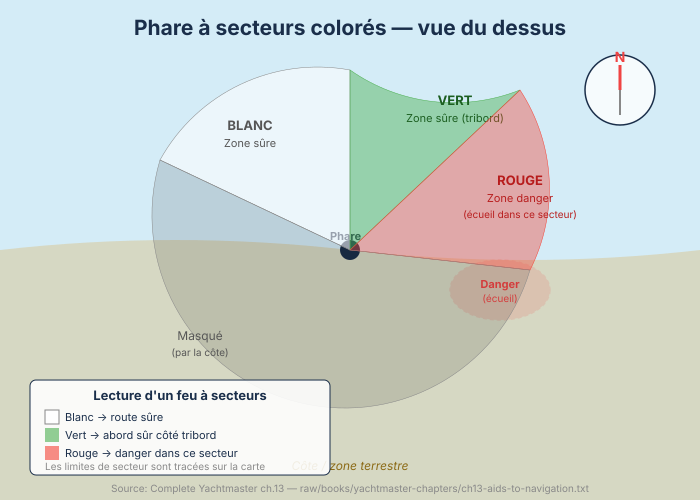
Certains phares émettent différentes couleurs selon le secteur d'observation. Ce système guide les navires dans les chenaux d'approche :
- Secteur blanc — route sûre, dans l'axe du chenal
- Secteur rouge — danger à bâbord du chenal (trop à gauche)
- Secteur vert — danger à tribord du chenal (trop à droite)
Comment l'utiliser : En approchant un port de nuit, restez dans le secteur blanc. Si vous entrez dans le rouge, abattez vers tribord. Si vous entrez dans le vert, abattez vers bâbord.
Les limites exactes de chaque secteur sont publiées dans le Livre des Feux (ou Annuaire des Marées pour les feux côtiers) sous forme de degrés vrais. Exemple : secteur blanc de 087° à 104°V, rouge de 064° à 087°V, vert de 104° à 118°V. Sur la carte marine, ces secteurs sont représentés par des arcs colorés rayonnant depuis le symbole du phare.
La technique nocturne d'approche par secteur est d'une précision redoutable, et elle n'exige aucun instrument hormis votre capacité à distinguer les couleurs. En restant dans le blanc, vous suivez l'axe exact du chenal à chaque instant, automatiquement. C'est un "pilote passif" intégré dans le balisage lumineux — l'une des inventions les plus élégantes de la navigation côtière. Une fois que vous l'avez utilisé une fois pour entrer dans un port de nuit, vous ne voudrez plus jamais approcher à l'estime.
La notation sur la carte d'un feu sectoriel ressemble à : Fl(2) WRG 12s 14m 10-7M — 2 éclats dans les couleurs blanc/rouge/vert selon le secteur, période 12 secondes, hauteur 14 mètres, portées 10M (blanc) et 7M (rouge/vert).
Voir concepts/feux-secteurs-route.
Les amers
Un amer (landmark) est tout objet à terre reconnaissable visuellement, identifiable sur la carte, et utilisable pour déterminer ou confirmer une position par relèvement. C'est l'un des outils les plus anciens et les plus fiables de la navigation côtière.
Un bon amer doit réunir plusieurs qualités : être unique dans un secteur d'observation donné (pas de doute possible sur son identification), être clairement représenté sur la carte, être visible dans les conditions de navigation prévues (distance, visibilité, angle solaire), et être assez éloigné pour que le relèvement soit précis.
Un phare côtier typique, visible à plusieurs milles de distance. De jour, sa silhouette unique sert d'amer pour les relèvements. De nuit, sa caractéristique lumineuse (nombre d'éclats, couleur, période) permet une identification certaine — chaque phare d'une même zone a un rythme distinct pour éviter toute confusion.
Types d'amers courants :
- Phares et balises
- Tours, châteaux d'eau
- Clochers, mosquées (en Méditerranée orientale)
- Antennes TV, pylônes
- Ruines, falaises particulières
En Méditerranée orientale et en Turquie, les minarets sont d'excellents amers : ils sont uniques, très visibles, parfaitement représentés sur les cartes portulan, et ils n'ont pas la fâcheuse habitude des phares de tomber en panne. Les tombeaux lyciens de Fethiye sont taillés dans la falaise à 100 mètres au-dessus de la mer, visibles à 8 milles par beau temps — et il n'y a rien de semblable dans un rayon de 50 milles.
Évitez d'utiliser comme amers des objets saisonniers (guirlandes de vacances, bâches de chantier), mobiles (bateaux au mouillage permanents mais pouvant appareiller), ou non cartographiés (nouvelles constructions non encore incluses dans l'édition de votre carte).
Utiliser les alignements
L'alignement (ou transit) est la ligne droite définie par deux amers vus superposés depuis le navire. C'est l'une des méthodes de navigation les plus précises — pas besoin de compas.
Pour exploiter un alignement, tracez d'abord la ligne sur la carte : reliez les deux amers identifiés, puis prolongez cette ligne vers la mer. Cette ligne de position est exactement la trajectoire à suivre pour les garder en ligne. Quand les deux amers sont superposés depuis votre bateau, vous êtes précisément sur cette ligne — sans compas, sans GPS, sans marge d'erreur liée à la déviation de l'instrument.
Un alignement peut servir de ligne de guidage (entrer dans un port en maintenant deux fanaux en ligne) ou de ligne de sécurité (clearing line : tant que les deux amers ne sont pas en ligne, vous êtes du bon côté d'un danger). Il peut même servir à révéler des courants : si vous suivez l'alignement mais que les amers dérivent progressivement d'un côté, c'est le courant qui vous pousse.
Les feux d'alignement (leading lights) sont deux phares spécialement placés à des hauteurs différentes et dans l'axe d'un chenal pour guider les entrées de port de nuit : quand le feu inférieur est exactement sous le feu supérieur, vous êtes dans l'axe. Si le feu inférieur est à gauche du supérieur, vous êtes à droite de l'axe — et vice versa. C'est l'équivalent nocturne du transit de jour.
Le phare de Fethiye (Fethiye Feneri) : Caractéristique Fl(2) 10s 12m 8M sur la jetée nord du port de Fethiye. En approchant de nuit depuis le golfe de Göcek, il est visible à 8 milles. Il est accompagné d'un feu de secteur : blanc dans l'axe d'approche, rouge côté rochers de l'ouest.
Si vous voyez le feu rouge : cap trop à l'ouest, danger rocheux. Abattez vers l'est (tribord) jusqu'à retrouver le blanc.
Question 1 : La caractéristique de feu Fl(3)G 10s 8M signifie :
- A) Trois éclats verts, période de 10 secondes, portée de 8 milles nautiques
- B) Trois éclats, fond vert, 10 secondes de flash, visible à 8 km
- C) Feu vert fixe, groupe de 3 occultations, portée 10 milles, hauteur 8 mètres
Voir la réponse
Réponse : A — Fl = feu à éclats (flashing) ; (3) = groupe de 3 éclats par période ; G = vert (green) ; 10s = durée totale de la période (éclats + obscurités) ; 8M = portée nominale de 8 milles nautiques. La portée est toujours en milles (M) et la période en secondes (s).Question 2 : De nuit, vous approchez le chenal de Göcek et vous voyez le secteur rouge d'un phare à secteurs. Que faites-vous ?
- A) Continuez — le rouge indique le chenal sûr pour ce type de feu
- B) Abattez vers tribord — le rouge signifie que vous êtes trop à bâbord du chenal (danger)
- C) Abattez vers bâbord — le rouge signifie que vous êtes trop à tribord du chenal
Voir la réponse
Réponse : B — Convention des feux à secteurs : blanc = chenal sûr, rouge = vous êtes à bâbord du chenal (trop à gauche — danger côté bâbord), vert = vous êtes à tribord du chenal (trop à droite — danger côté tribord). Pour revenir dans le blanc depuis le rouge, virez à tribord.Question 3 : Un phare a une "portée nominale" de 15 milles. Par bonne visibilité (30 milles), combien de milles avant verrez-vous ce phare ?
- A) 15 milles — la portée nominale est la portée réelle en toutes conditions
- B) 30 milles — par excellente visibilité on voit plus loin que la portée nominale
- C) Entre 15 et 30 milles — la portée géographique (liée à la hauteur du phare) peut être limitante
Voir la réponse
Réponse : C — La portée nominale est calculée pour une visibilité météorologique de 10 milles nautiques (visibilité de nuit standard). Par visibilité supérieure, la portée réelle peut dépasser la nominale, jusqu'à la portée géographique (distance à laquelle la courbure terrestre cache le phare). En pratique, vérifiez la portée géographique dans l'annuaire des phares.Question 4 : Mehmet pointe vers la côte : "Tu vois ce clocher blanc et ce château derrière lui, alignés ?" William les voit superposés. À quoi leur alignement sert-il ?
- A) À identifier le mouillage — chaque mouillage a un amer désigné par convention
- B) À former un transit (alignement) donnant une ligne de position très précise, sans compas
- C) À évaluer la distance à la côte par la méthode des angles
Voir la réponse
Réponse : B — Deux amers vus superposés forment un transit (leading line) : une ligne de position précise sans utiliser de compas ni de GPS. Il suffit de rester sur l'alignement pour suivre une route déterminée. C'est une technique fondamentale de pilotage côtier, utilisée notamment pour entrer dans un chenal en gardant les amers superposés.Fethiye au matin ressemble à une carte postale — les tombeaux lyciens orange dans la falaise, les gulets blancs dans le port, les pêcheurs qui rentrent. Mais demain, William doit planifier une route complexe : cap sur Ölüdeniz, à 17 milles au sud-ouest. Il faudra tenir un cap précis, corriger la dérive, penser aux courants.
Session 3.1 — Compas, Cap et Route : variation, déclinaison, dérive.
Compas, Cap et Route — Les Trois Nords
Mercredi matin, 8h00. À bord, ancré baie de Fethiye.
William a étalé la carte et son rapporteur — son café d'une main, le crayon de l'autre. Il veut tracer la route vers Ölüdeniz : cap 245, d'après ses calculs. Mais le compas de bord indique 238 quand il met le bateau dans le sens qu'il pense être le bon.
"Il y a un problème avec le compas ?" dit-il à Emmanuel qui arrive avec son propre café.
"Non. Le problème, c'est que tu as oublié que le nord magnétique et le nord de ta carte ne sont pas au même endroit." William fronce les sourcils. "Il y a plusieurs Nords ?" Christelle, qui a entendu depuis la descente : "Ah oui — ça, c'est dans le livre. Trois Nords." Rebecca, depuis la cabine : "Réveillez-moi quand vous avez un seul Nord."
William fronce les sourcils. "Il y a plusieurs Nords ?"
"Trois. Et le permis côtier veut que tu les connaisses tous."
Les trois Nords
En navigation maritime, il existe trois références nord distinctes. Confondre l'une avec l'autre peut vous envoyer plusieurs degrés hors de votre route.
| Nord | Définition | Référence |
|---|---|---|
| Nord Vrai (Nv) | Pôle géographique | Les cartes marines |
| Nord Magnétique (Nm) | Pôle magnétique terrestre | Les boussoles |
| Nord Compas (Nc) | Ce que lit votre compas de bord | Compas du bateau |
Pour se repérer sur un compas, il faut d'abord comprendre la rose des vents. Le cercle complet de l'horizon est divisé en 360 degrés, à partir du Nord (0° / 360°). Les quatre points cardinaux — Nord (000°), Est (090°), Sud (180°), Ouest (270°) — découpent le cercle en quadrants. Entre eux, les points intercardinaux (NE à 045°, SE à 135°, SW à 225°, NW à 315°) permettent de nommer rapidement une direction sans donner le cap exact.

La rose des vents traditionnelle : 360° autour du cercle, les quatre cardinaux en gras, les intercardinaux entre eux. En navigation, on exprime toujours les caps en trois chiffres (045°, pas 45°).
Le Nord Vrai est le pôle géographique de la Terre — le point autour duquel elle tourne. C'est la référence des cartes marines et de tous les caps vrais que vous tracez avec un rapporteur. Il est parfaitement stable.
Le Nord Magnétique est là où pointent les aiguilles de boussole sous l'effet du champ magnétique terrestre. Il se déplace lentement — d'environ 50 km par an — ce qui signifie que la correction à appliquer change légèrement chaque année. C'est ce que lit n'importe quelle boussole ou compas magnétique sans être perturbé par les masses métalliques.
Le Nord Compas est ce que lit spécifiquement votre compas de bord, après avoir subi l'influence des masses métalliques et des équipements électroniques du bateau lui-même. C'est la valeur affichée sur votre compas en navigation — elle inclut à la fois l'écart au nord vrai et les perturbations propres au bateau.
Pourquoi tout ça compte : votre carte donne des caps vrais, votre compas de bord donne des caps compas. Pour naviguer correctement, vous devez convertir d'un système à l'autre à chaque calcul de route.
Voir concepts/navigation-relevements-et-caps, concepts/cap-route-derive.
La variation magnétique (déclinaison)
La variation magnétique (aussi appelée déclinaison) est l'angle entre le nord vrai (carte) et le nord magnétique (boussole). Elle dépend de votre position géographique et change légèrement chaque année.
Chaque carte marine imprime la variation sur sa rose des vents, avec l'année de référence et le taux annuel de changement. Par exemple : "Var. 4°E (2024), augmente de 0°08'/an". Vous calculez la variation actuelle en appliquant ce taux.
Le cadran ci-dessous montre comment les degrés sont disposés sur un compas de bord. Le cercle est gradué de 0° à 360°, avec des repères tous les 5° ou 10° selon les modèles. La ligne de foi (le trait fixe sur le boîtier) indique le cap du bateau : c'est le degré qu'elle coupe sur le cadran mobile qui donne le cap compas.
Le cadran du compas tourne librement sous l'effet du champ magnétique. La ligne de foi, solidaire du bateau, coupe le cadran au cap actuel. Lisez toujours le chiffre côté ligne de foi, pas côté opposé.
Une variation Est signifie que le nord magnétique est à l'est du nord vrai — votre compas non corrigé donne un cap inférieur au cap vrai. Une variation Ouest donne l'inverse.
Dans le golfe de Göcek : La variation est d'environ +4° E (2026) — le nord magnétique est à 4° à l'est du nord vrai.
Formule de conversion :
Cap Magnétique = Cap Vrai – Variation Est
Cap Magnétique = Cap Vrai + Variation Ouest
Moyen mnémotechnique anglophone très utilisé : "East is least, West is best" — une variation Est se soustrait du cap vrai pour donner le cap magnétique. Ou la formule française CanDéVier (Compas → Déviation → Variation → Vrai) rappelle l'ordre des corrections.
La déviation du compas
La déviation est l'erreur du compas de bord due aux masses métalliques et électriques du bateau lui-même. Elle varie selon le cap.
Les causes de déviation sont nombreuses à bord : le bloc-moteur est la source la plus importante, mais la chaîne d'ancre stockée dans la jupe avant, le tableau de bord électronique, les haut-parleurs (qui contiennent des aimants), les câbles d'alimentation courant fort et même les boîtes de conserve stockées dans le carré peuvent perturber le compas. Cette perturbation n'est pas constante : elle change selon la direction dans laquelle pointe le bateau, ce qui rend la déviation spécifique à chaque cap.
Pour cartographier la déviation, on crée une table de déviation (courbe de déviation) : on note l'écart entre ce que lit le compas et la direction réelle (obtenue par GPS ou par un alignement connu) pour une douzaine de caps différents. Cette table est valable pour un bateau donné, dans une configuration d'équipement stable.
En pratique pour le permis côtier : si la déviation est inconnue, utilisez le COG (Course Over Ground) de votre GPS en ligne droite pour comparer avec votre cap compas sur plusieurs caps — cela vous donne une estimation utile.
Total : Cap Vrai = Cap Compas + Déviation + Variation
Ou avec le moyen mnémotechnique : CanDéVier (Compas → Déviation → Variation → Vrai).
Schéma de conversion CanDéVier :
Compas (Cc) ──[+Déviation]──► Magnétique (Cm) ──[+Variation]──► Vrai (Cv)
◄──[−Déviation]── ◄──[−Variation]──
De gauche à droite (compas → vrai) : on AJOUTE les corrections. De droite à gauche (vrai → compas) : on les SOUSTRAIT. Attention au signe : Est = positif, Ouest = négatif. Exemple Göcek : Cap compas 238°, déviation +2°, variation +4°E → Cap vrai = 238 + 2 + 4 = 244°V.
Cap, route fond, route surface

Imaginez un nageur qui traverse une rivière. Il nage vers l'autre rive en gardant une direction perpendiculaire — c'est son cap. Mais le courant le déporte vers l'aval — c'est l'effet du courant. Sa trajectoire réelle sur le fond de la rivière fait un angle — c'est sa route fond. Si en plus il est légèrement poussé de côté par le vent, sa route dans l'eau s'écarte encore légèrement de son cap — c'est la dérive.
En navigation maritime, c'est exactement la même mécanique :
| Terme | Définition |
|---|---|
| Cap (Heading) | Direction dans laquelle pointe la proue — ce que montre votre compas |
| Route surface | Cap corrigé du vent (angle de dérive) — trajectoire dans l'eau |
| Route fond | Trajectoire réelle sur la carte (after current + leeway) — ce que mesure le GPS comme COG |
| Dérive | Angle entre la route surface et la route fond due aux courants |
La dérive de vent (leeway) est l'angle entre le cap barré et la route dans l'eau. Elle existe dès que le vent est sur le travers ou plus avant. Par force 4 au près sur un voilier de 12 m, comptez 2 à 5°. Elle s'ajoute côté sous-le-vent : vent sur bâbord = dérive vers tribord.
Le courant s'ajoute en vecteur sur la route dans l'eau pour donner la route fond. C'est pourquoi deux navigateurs peuvent barrer le même cap et avoir des routes fond très différentes selon les courants locaux.
Voir concepts/cap-route-derive.
Les relèvements
Un relèvement est l'angle sous lequel vous observez un amer (phare, clocher, cap, bouée), mesuré par rapport au nord. Il permet de vous situer sur une ligne de position — une ligne sur laquelle vous vous trouvez nécessairement.
Comment prendre un relèvement : vous visez l'amer avec votre compas à main (compas de relèvement) et lisez l'angle. Ce relèvement compas (Zc) doit être converti en relèvement vrai (Zv) pour être tracé sur la carte : Zv = Zc + Déviation + Variation.
Tracer sur la carte : depuis le symbole de l'amer sur la carte, tracez une ligne dans la direction inverse du relèvement (180° + le relèvement). Votre bateau se trouve quelque part sur cette ligne.
Deux relèvements simultanés sur deux amers différents donnent votre position par intersection — c'est un point à deux relèvements. Trois relèvements forment souvent un petit triangle, le chapeau triangulaire (cocked hat) : placez-vous toujours du côté du triangle le plus proche du danger, par précaution.
Pour une bonne précision, choisissez des amers dont les relèvements sont séparés d'au moins 60° — plus l'angle de coupure est proche de 90°, plus la position est précise.
Voir concepts/navigation-relevements.
Relèvement constant = collision. Si le relèvement d'un autre navire reste constant pendant que sa distance diminue, vous êtes sur route de collision. La règle de barre s'applique immédiatement.
Route Fethiye → Ölüdeniz (Blue Lagoon, 36°33'N 29°07'E) :
Cap vrai depuis la carte : 245°V
Variation magnétique (Göcek, 2026) : +4°E → Cap magnétique : 241°M
Déviation du compas (cap 245°) : -2° → Cap compas à tenir : 239°C
Distance : 17 NM — environ 2h30 à 7 nœuds.
Prenez un relèvement sur les falaises de Belcekız (pointe est d'Ölüdeniz) quand vous approchez pour confirmer la position.
Question 1 : Cap vrai 090°V, variation magnétique +5°E. Quel cap magnétique tenez-vous ?
- A) 085°M
- B) 090°M
- C) 095°M
Voir la réponse
Réponse : A — Cap magnétique = Cap vrai − Variation Est = 090° − 5° = 085°M. Règle mnémotechnique : "East is least, West is best" (une variation Est se soustrait du cap vrai pour obtenir le cap magnétique ; une variation Ouest s'additionne). B serait correct si la variation était nulle ; C correspond à une variation Ouest.Question 2 : Cap magnétique 240°M, déviation du compas −4°. Quel cap indique le compas de bord ?
- A) 244°Cc
- B) 240°Cc
- C) 236°Cc
Voir la réponse
Réponse : C — Déviation −4° signifie que le compas lit 4° de MOINS que le magnétique. Cap compas = Cap magnétique + Déviation = 240° + (−4°) = 236°Cc. Piège fréquent : si la déviation est négative, le compas sous-estime la valeur magnétique. A correspond à une déviation de +4°.Question 3 : Le relèvement du cap Nord-Ouest de Tersane Island reste constant à 315° depuis 5 minutes, et l'île semble se rapprocher. Que faites-vous ?
- A) Maintenez le cap — un relèvement constant signifie que vous avez la priorité
- B) Ralentissez légèrement pour laisser passer
- C) Danger d'abordage avéré — déterminez qui est prioritaire et manœuvrez immédiatement
Voir la réponse
Réponse : C — Relèvement constant + distance décroissante = routes convergentes = collision certaine si aucun n'agit. "Maintenir le cap" (A) est la réaction du stand-on vessel SEULEMENT si une règle de priorité vous le permet — mais il faut d'abord identifier qui est prioritaire. Ralentir seul (B) est insuffisant si les routes se croisent.Question 4 : Emmanuel explique à William : "Sur une carte, le nord magnétique est décalé de 4° Est par rapport au nord géographique ici. Mais attention, ça change chaque année." De quoi parle-t-il ?
- A) De la déviation — l'erreur propre au compas du Deniz Rüzgarı
- B) De la variation magnétique — le décalage entre nord géographique et nord magnétique, propre à chaque lieu et époque
- C) De la déclinaison astronomique — angle entre l'axe de rotation et le champ magnétique terrestre
Voir la réponse
Réponse : B — La variation magnétique (ou déclinaison magnétique) est le décalage entre le nord vrai (géographique) et le nord magnétique, donné par la rose des vents de la carte. Elle est propre à chaque endroit du globe et varie lentement avec le temps (dérive séculaire). La déviation est l'erreur propre au compas du bateau, due aux masses ferriques ou électroniques à bord.Cap sur Ölüdeniz. À mi-chemin, Emmanuel observe la mer, pensif. "Elle est belle et calme. Mais si on était à Brest, à cette heure-ci, il faudrait vérifier la marée avant de partir..." Rebecca, depuis l'arrière : "Aux Bahamas non plus il n'y a presque pas de marée — la mer des Caraïbes est comme ça." Emmanuel se retourne, surpris. "Vraiment ?" William sourit. "Exactement — première fois depuis le départ que vous trouvez un point commun. Justement. Parlons marées."
Session 3.2 — Marées et Courants : hauteurs, règle des douzièmes, losanges de courant.
Marées et Courants — La Méditerranée et l'Atlantique
Mercredi matin, 9h30. En route vers Ölüdeniz.
Emmanuel est pensif. "En Bretagne, à Brest, il y a parfois 8 mètres de marée. On attendait des heures pour entrer dans certains ports. Je me souviens d'un matin où on était échoués sur la grève pendant six heures."
Christelle rit. "C'était les vacances 1988. Tu avais mal lu le tableau des marées."
Rebecca, qui a entendu depuis le cockpit, s'approche, intéressée. "Échoués six heures ? Vraiment ? Aux Bahamas, quand ça arrive, le bateau repart deux heures plus tard." William : "Parce qu'il y a quasiment pas de marée là-bas non plus, comme ici." Rebecca, soudain curieuse : "Alors pourquoi la Bretagne c'est différent ?"
"Ici," dit William, "la Méditerranée a une marée de... 20 centimètres."
Emmanuel se retourne, regard malicieux. "Vingt centimètres ? Pour quoi faire ?"
"Pour apprendre le concept avant de le faire pour de vrai. L'examen pose des questions sur les marées atlantiques. Donc on va les apprendre — même si ici, la marée ne change rien à notre navigation."
Pourquoi les marées existent
La marée est une conséquence directe de la gravitation. La Lune (principalement) et le Soleil (dans une moindre mesure) exercent une attraction sur les masses d'eau des océans. Cette force crée deux renflements de la surface de la mer : l'un du côté de la Terre tourné vers la Lune, l'autre du côté opposé (par effet centrifuge). Pendant que la Terre tourne sur elle-même en 24h, chaque point de la surface passe sous ces renflements — produisant deux hautes mers et deux basses mers toutes les 24 heures et 50 minutes (le cycle lunaire est légèrement plus long que le jour solaire).
Vive-eau vs morte-eau :
- Vive-eau (spring tide) : Lune et Soleil sont alignés (pleine lune ou nouvelle lune). Leurs attractions s'additionnent → marées de grande amplitude.
- Morte-eau (neap tide) : Lune et Soleil sont en quadrature (premier ou dernier quartier). Leurs attractions se contrarient partiellement → marées de faible amplitude.
Le coefficient de marée (système français, échelle 20–120) quantifie l'intensité de chaque marée : un coefficient 20 correspond à une morte-eau extrême, 120 à une grande vive-eau. En pratique, un coefficient inférieur à 40 indique une petite marée sans grande conséquence ; un coefficient supérieur à 90 correspond à une grande vive-eau où les hauteurs, les courants et les durées d'étale peuvent être extrêmes.
Lire un annuaire de marées
Les annuaires des marées (publications du SHOM, Bloc Mémo Vagnon, annuaires Imray) donnent pour chaque jour de l'année les heures et hauteurs des pleines mers (PM) et basses mers (BM) aux ports de référence (standard ports) — une trentaine en France.
Format typique d'une entrée :
Lundi 14 juillet — Coeff. 95
BM 06h12 1,2 m
PM 12h45 6,3 m
BM 18h30 0,9 m
PM 01h02 5,8 m (heure légale CEST = UTC+2)
Attention aux heures : les tables SHOM sont souvent en Temps Universel (UTC). En France, ajoutez +1 h en hiver et +2 h en été (CEST) pour obtenir l'heure légale.
Pour un port secondaire non listé, l'annuaire donne des corrections (différences de temps et de hauteur) à appliquer aux données du port de référence le plus proche. Ces corrections varient parfois selon le niveau de marée — une interpolation est nécessaire.
Calculer une hauteur de marée — Courbe type et règle des douzièmes
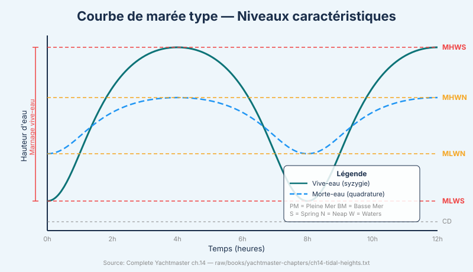
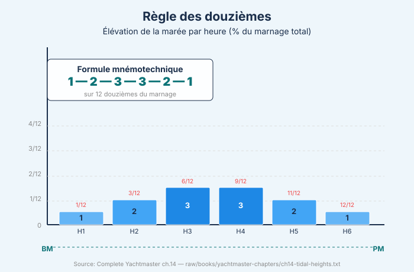
La courbe ci-dessous illustre la variation de la hauteur d'eau au cours d'un cycle de marée. Entre la basse mer (BM) et la pleine mer (PM), le niveau monte selon une forme approximativement sinusoïdale : lente au début, rapide au milieu, puis lente à nouveau à l'approche du sommet. Le marnage est la différence de hauteur entre PM et BM — c'est l'amplitude totale du cycle. Plus le coefficient de marée est élevé, plus le marnage est grand et plus la courbe est "étirée" verticalement.
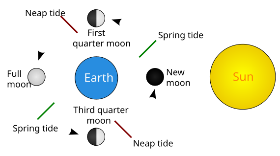
La forme sinusoïdale de la marée semi-diurne : la montée est symétrique à la descente. PM = pleine mer (sommet), BM = basse mer (creux). Le marnage est la différence verticale entre les deux.
La montée de la marée ne se fait pas à vitesse constante. Elle est lente au début, s'accélère, puis ralentit à l'approche de la pleine mer — suivant approximativement une courbe sinusoïdale. La règle des douzièmes simplifie ce calcul en 6 étapes mémorables :
| Heure après BM | Fraction du marnage montant |
|---|---|
| 1ère heure | 1/12 |
| 2ème heure | 2/12 |
| 3ème heure | 3/12 |
| 4ème heure | 3/12 |
| 5ème heure | 2/12 |
| 6ème heure | 1/12 |
Mnémotechnique : 1-2-3-3-2-1. La marée monte d'abord lentement (1/12 puis 2/12), puis très vite à mi-marée (3/12 + 3/12 = la moitié du marnage en seulement 2 heures), puis ralentit de nouveau.
Le schéma suivant visualise cette distribution heure par heure. Remarquez que les heures centrales (3e et 4e) cumulent à elles seules 6/12 — soit la moitié du marnage total. C'est pendant ces deux heures que le niveau change le plus vite, que les courants sont les plus forts, et que les erreurs de timing coûtent le plus cher.
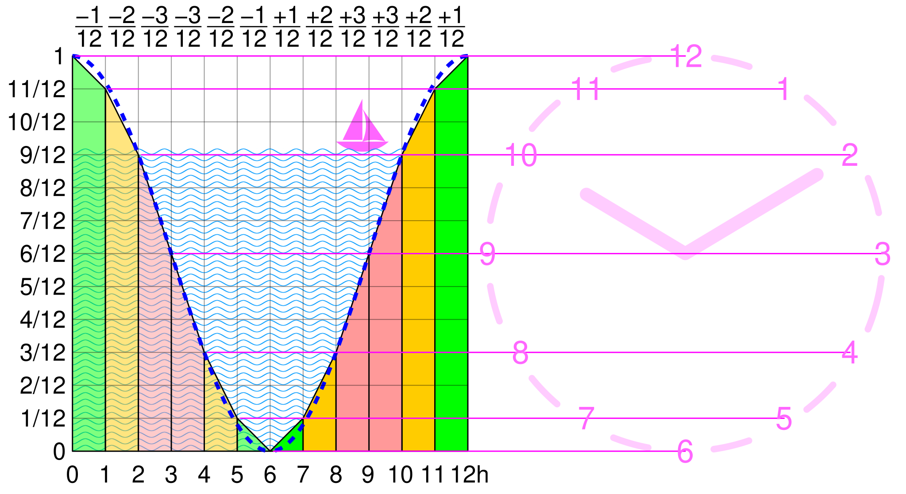
La règle des douzièmes : 1/12, 2/12, 3/12, 3/12, 2/12, 1/12 du marnage à chaque heure successive. Retenir "1-2-3-3-2-1" suffit pour calculer la hauteur d'eau à n'importe quel moment du cycle.
Exemple avec les données Brest : BM à 06h12 = 1,2 m, PM à 12h45 = 6,3 m. Marnage = 5,1 m. Quelle hauteur à 10h12 (4 heures après BM) ?
Cumul 1-2-3-3 = 9/12 du marnage = 9/12 × 5,1 = 3,83 m. Hauteur totale = 1,2 + 3,83 = 5,03 m.
Limite de la règle : Elle suppose une marée semi-diurne régulière — valide en Manche et Atlantique. En Méditerranée, avec un marnage de 20 cm, ce calcul est purement théorique. En Méditerranée occidentale (golfe du Lion, côte Provence), la marée peut atteindre 0,3–0,5 m lors de grandes vive-eaux, mais les effets météorologiques (vent, pression) dépassent souvent l'amplitude astronomique.
Voir concepts/marees-hauteurs.
Les courants de marée
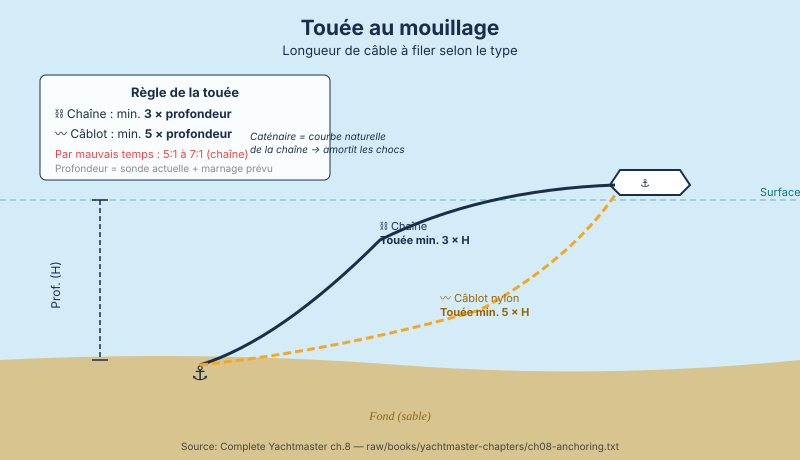
Les courants de marée (ou tidal streams) sont les mouvements horizontaux de l'eau créés par le remplissage et la vidange des mers lors des marées. Ils sont distincts des hauteurs de marée : pendant que la mer monte, l'eau se déplace horizontalement vers la côte (flot) ; pendant qu'elle descend, elle s'en éloigne (jusant).
Ces courants peuvent atteindre 3 à 5 nœuds dans les passages étroits (Raz de Sein, Alderney Race, raz Blanchard), rendant la navigation extrêmement délicate. Un bateau à 6 nœuds contre 4 nœuds de courant n'avance qu'à 2 nœuds sur le fond — 12h pour 24 milles. Avec le courant, il file à 10 nœuds.
Sources d'information sur les courants :
Les atlas de courants de marée SHOM cartographient heure par heure la direction et la vitesse des courants. Les valeurs sont données pour deux situations : morte-eau (ME) et vive-eau (VE). La notation 12.24 signifie 1,2 nœud en ME et 2,4 nœuds en VE.
Les losanges de courant (◆ sur les cartes SHOM) renvoient à un tableau en marge de la carte. Pour chaque heure avant ou après la PM du port de référence, le tableau donne la direction en degrés vrais et la vitesse ME/VE en ce point précis. Pour utiliser un losange : (1) identifiez l'heure de PM du port de référence le jour de votre passage, (2) calculez combien d'heures avant ou après vous êtes, (3) lisez la direction et la vitesse dans le tableau.
Portes de courant : Les caps, goulets et chenaux étroits concentrent les courants. Ces points critiques s'appellent portes de courant (tidal gates) — il faut les franchir au bon moment (courant favorable) ou à l'étale. Manquer une porte peut signifier 6 heures à attendre.
Voir concepts/courants-de-maree.
La marée en Méditerranée. En Méditerranée orientale (Turquie, Grèce, Italie), la marée est quasi-inexistante : 0,2–0,4 mètre maximum. Elle ne pose aucun problème pratique de navigation. MAIS l'examen du permis côtier français teste les marées atlantiques — apprenez-les même si vous naviguez en Méditerranée. Le golfe de Gascogne, Brest, Saint-Malo, Arcachon : là, les marées sont réelles et dangereuses.
Vocabulaire essentiel des marées
| Terme | Définition |
|---|---|
| Marnage | Différence de hauteur entre PM et BM |
| Coefficient | Intensité de la marée (20 = morte-eau, 120 = grande vive-eau) |
| Zéro hydrographique | Référence des sondes carte = niveau BM le plus bas |
| Hauteur d'eau | Profondeur réelle = Sonde carte + Hauteur marée |
| Estran | Zone entre le niveau des plus basses et plus hautes mers |
Le marnage varie énormément selon la géographie. En Méditerranée : 0,2–0,5 m. En Bretagne nord (Brest) : 4–8 m selon les coefficients. À Saint-Malo (baie du Mont-Saint-Michel) : jusqu'à 13 m — l'un des plus grands marnages du monde.
Le coefficient renseigne sur l'amplitude relative : un coefficient 95 (grande vive-eau) à Brest peut signifier un marnage de 6 m et des courants de 4 nœuds dans les goulets. Le même coefficient en Méditerranée correspond à... 0,28 m de marnage et des courants de 0,1 nœud.
Le zéro hydrographique est le niveau de référence de toutes les sondes sur les cartes marines — il correspond à la Plus Basse Mer Astronomique, soit le niveau le plus bas possible. C'est une garantie de sécurité : la hauteur d'eau réelle est toujours au moins égale à la sonde de la carte (on y ajoute la hauteur de marée du moment).
La marée à Göcek (juillet 2026) :
BM : 0,05 m. PM : 0,28 m. Marnage : 0,23 m. Coefficient équivalent : ~15 (morte-eau extrême).
Impact pratique : Nul. Un tirant d'eau de 1,8 m peut entrer dans n'importe quelle crique dont la sonde carte est ≥ 2,0 m à n'importe quelle heure.
Contraste pédagogique : À Brest (même semaine), PM : 7,1 m, BM : 1,0 m. Marnage : 6,1 m. Coefficient : 95 (grande vive-eau). Le Deniz Rüzgarı serait échoué dans plusieurs mouillages bretons à marée basse si le skipper ne vérifiait pas l'annuaire.
Question 1 : À Brest : BM = 1,2 m, PM = 6,8 m. En utilisant la règle des douzièmes, quelle hauteur d'eau (au-dessus du zéro) y a-t-il à la 3ème heure après la BM ?
- A) 2,4 m au-dessus du zéro hydrographique
- B) 3,0 m au-dessus du zéro hydrographique
- C) 4,0 m au-dessus du zéro hydrographique
Voir la réponse
Réponse : C — Marnage = 6,8 − 1,2 = 5,6 m. Règle des douzièmes : cumul à la 3ème heure = (1+2+3)/12 = 6/12 = 1/2 du marnage = 2,8 m au-dessus de la BM. Hauteur d'eau totale = BM + 2,8 = 1,2 + 2,8 = 4,0 m. A correspond à la hauteur à la 2ème heure ; B n'est pas une valeur de douzièmes correcte.Question 2 : Sonde sur la carte : 2,5 m. Annuaire des marées : hauteur de marée 3,8 m. Quel est le fond réel ?
- A) 1,3 m — tirant d'eau maximum pour ce point
- B) 3,8 m — la sonde est relative à la hauteur actuelle
- C) 6,3 m — profondeur réelle sous la quille
Voir la réponse
Réponse : C — Profondeur réelle = Sonde (au-dessus du zéro hydrographique) + Hauteur de marée = 2,5 + 3,8 = 6,3 m. La sonde carte représente la hauteur d'eau au zéro hydrographique (marée basse de référence) ; la hauteur de marée s'additionne. A serait la réponse si on soustrayait par erreur.Question 3 : Le golfe de Göcek a une marée de 0,2–0,3 m maximum. Pour un bateau de 1,5 m de tirant d'eau mouillant par sonde 2 m, la marée est-elle un facteur limitant au lever du jour (BM) ?
- A) Non — la différence de 0,3 m est négligeable, on dispose encore de 0,2 m de marge au moins
- B) Oui — avec 0,3 m de marée, le fond en BM = 2,0 − 0,3 = 1,7 m, moins que le tirant d'eau
- C) Oui — il faut toujours utiliser l'annuaire des marées en Méditerranée
Voir la réponse
Réponse : A — En Méditerranée, avec un marnage de seulement 0,2–0,3 m, la variation du niveau est quasi négligeable. Avec sonde 2,0 m et tirant 1,5 m, on dispose de 0,5 m de marge ; même en BM (−0,3 m), il reste 0,2 m. En revanche, en Manche ou Atlantique (marnage 4–9 m), ce calcul est critique.Question 4 : Emmanuel dit : "En Bretagne, à coefficient 45, le marnage est bien inférieur à coefficient 100." Qu'est-ce que le "coefficient" de marée indique ?
- A) La vitesse du courant de marée en nœuds
- B) L'intensité de la marée (marnage) par rapport à une marée de référence — 120 = grande vive-eau, 20 = morte-eau faible
- C) Le nombre d'heures entre la BM et la PM
Voir la réponse
Réponse : B — Le coefficient de marée est un nombre sans unité (0–120) qui quantifie l'intensité : 95–120 = grande vive-eau, 70–95 = vive-eau, 45–70 = intermédiaire, 20–45 = morte-eau. Il est publié dans l'annuaire des marées et permet d'interpoler les hauteurs pour des ports secondaires.Ölüdeniz se dessine à l'horizon — la lagune bleue, les falaises blanches, les parachutes ascensionnels qui décollent du mont Babadağ. William prend son GPS. "On est à 36°34'N, 29°05'E. La bouée d'entrée devrait être à..."
Session 3.3 — Point Estimé et GPS : savoir où vous êtes à tout moment.
Point Estimé et GPS — Savoir Où Vous Êtes
Mercredi 13h00. Au large d'Ölüdeniz, lagune bleue.
Le GPS indique : 36°33.8'N 29°06.5'E. La bouée d'entrée est à 0,4 NM au 270°. Parfait.
"Et si le GPS tombe en panne ?" demande Emmanuel, l'œil malicieux — il connaît déjà la réponse.
William réfléchit. Il ne connaît pas la réponse.
"C'est pour ça qu'on apprend le point estimé," dit Mehmet depuis la plage arrière. "Le GPS, c'est magnifique jusqu'au jour où ce n'est plus là. Un marin qui ne sait pas naviguer sans GPS n'est pas un marin — il est passager d'un appareil électronique." Rebecca, depuis le bain de soleil : "Sur le catamaran en charter aux Bahamas, le capitaine avait deux GPS et un iPad." Mehmet : "Et s'ils tombent tous en panne en même temps ?" Silence de Rebecca.
Le point estimé (Dead Reckoning / DR)
Le point estimé (PE) est la position calculée à partir d'une position connue, en appliquant les caps tenus et les distances parcourues. C'est la méthode de navigation qui existait avant le GPS — et qui reste indispensable dès que le GPS disparaît, s'éteint, ou donne une information erronée.
Principe : Vous êtes à la position A (connue, vérifiée). Vous barez un cap de 245° pendant 2 heures à 6 nœuds. Vous avez donc parcouru 12 milles dans la direction 245°. Tracez cette ligne sur la carte : son extrémité est votre point estimé.
Mais le PE seul est insuffisant car il ignore deux perturbateurs : la dérive au vent (leeway) et le courant. La méthode complète comporte trois étapes vectorielles :
- Route à l'estime (DR pur) : cap barré × distance parcourue → une ligne avec une croix (+) au bout.
- Appliquer la dérive : écarter légèrement vers le côté sous-le-vent de quelques degrés → on obtient la route dans l'eau (une flèche sur la ligne).
- Appliquer le courant : depuis l'extrémité de la route dans l'eau, tracer le vecteur courant (direction + distance parcourue pendant la même période, trois flèches) → l'extrémité est le PE (symbolisé par un triangle avec l'heure).
Schéma du tracé d'estime :
Position connue (A)
|
| Cap barré × distance = Route dans l'eau (1 flèche)
|
B' (+ dérive vent = route dans l'eau corrigée)
|
| Vecteur courant — direction × vitesse × durée (3 flèches)
|
C = Point Estimé (△ + heure)
Le point estimé intègre trois composantes successives : le cap barré, la dérive de vent, et le courant. Le symbole sur la carte est un triangle (△) accompagné de l'heure. Chaque composante ajoute une source d'erreur — d'où la nécessité de confirmer régulièrement par des relèvements sur amers.
Le diagramme suivant montre comment ces trois composantes se combinent sur une carte réelle. Le cap (heading) est la direction dans laquelle pointe la proue. La dérive de vent écarte légèrement la trajectoire sous le vent, donnant la route surface. Enfin, le courant déplace l'ensemble, produisant la route fond — la trajectoire réelle sur la carte, celle que mesure le GPS comme COG.
Sur ce tracé, l'écart entre le cap barré et la route fond illustre pourquoi un navigateur qui ne corrige pas pour le vent et le courant finit par manquer sa destination. Plus la traversée est longue, plus l'écart se creuse.
L'erreur s'accumule : chaque PE repose sur le précédent. Une petite erreur de cap ou de vitesse sur la première heure se retrouve amplifiée après 6 heures. C'est pourquoi le PE doit être mis à jour régulièrement par des observations extérieures : relèvement d'un phare, transit visuel, ou fix GPS.
Bonnes pratiques : Tenir un carnet de bord avec position, cap, vitesse, heure à chaque changement significatif. En navigation côtière : toutes les 30 minutes près des dangers, toutes les heures au large.
Voir concepts/navigation-estime, concepts/routage-navigation.
Les vecteurs de navigation
La route fond résulte de la combinaison de trois vecteurs, que l'on trace graphiquement sur la carte :
Le triangle de navigation :
- Vecteur cap/vitesse (route dans l'eau) : direction que tient le bateau + distance parcourue dans l'eau pendant la période considérée. Une flèche simple.
- Vecteur courant : direction et distance que l'eau a parcourue pendant la même période. Trois flèches.
- Vecteur résultant (route fond / COG) : la ligne qui relie le point de départ à l'extrémité du vecteur courant. Deux flèches. C'est la vraie trajectoire sur le fond.
Exemple pratique — traversée avec courant latéral : Objectif : aller droit vers la côte est. Courant : 1,5 nœud vers le nord. Si vous barez droit vers l'est, vous dériverez vers le nord et manquerez votre objectif.
Solution : calculez le cap à tenir (cap + courant = route fond souhaitée) en construisant le triangle. Résultat : barez légèrement vers le sud (lofer de quelques degrés) pour que le courant nord vous ramène exactement sur la route voulue — technique du ferryglide.
C'est identique à un piéton traversant une rue avec circulation dans le sens opposé : pour arriver face à la boutique d'en face, il marche légèrement en biais pour compenser.
Les relèvements pour confirmer la position
Quand un amer reconnaissable est visible, un relèvement permet de vérifier ou corriger le PE. Trois relèvements simultanés sur des amers séparés donnent un point constaté — plus fiable que tout PE.
Technique du point à trois relèvements :
- Choisissez trois amers clairement identifiés sur la carte, idéalement séparés d'environ 60° (entre 45° et 120° pour une bonne précision).
- Prenez les trois relèvements aussi vite que possible — sur un bateau en mouvement, chaque minute de délai introduit une erreur.
- Convertissez en relèvements vrais (Zv = Zc + d + D).
- Tracez chaque LDP depuis l'amer vers votre position.
Le chapeau triangulaire (cocked hat) : les trois lignes forment rarement un point unique — elles délimitent un petit triangle. La règle de prudence est d'adopter le coin du triangle le plus proche du danger identifié : en cas d'incertitude, placez-vous toujours du côté pessimiste.
Un chapeau triangulaire de moins de 0,5 mm sur la carte est une bonne position. Plus grand : reprendre les relèvements, vérifier l'identification des amers.
Voir concepts/navigation-relevements, concepts/pilotage-cotier.
Le GPS — outil essentiel, pas substitut
Le GPS fonctionne par trilatération : votre récepteur mesure le temps de transit des signaux radio venant d'au moins 4 satellites. Chaque mesure définit une sphère de position. L'intersection de ces sphères donne votre position en 3D avec une précision théorique de ±5 mètres.
Comparaison des instruments de navigation :
| Instrument | Mesure | Référence | Fiabilité |
|---|---|---|---|
| Compas de bord | Heading (direction proue) | Nord magnétique + déviation | Toujours disponible |
| GPS | COG (direction déplacement) | Nord vrai | Dépend des satellites |
| GPS | SOG (vitesse fond) | Fond marin | Dépend des satellites |
| Loch | Vitesse surface | Eau environnante | Mécanique, toujours dispo |
Le compas dit où vous pointez ; le GPS dit où vous allez. Les deux informations sont complémentaires et peuvent diverger de 10 à 20 degrés par courant ou vent fort. Le loch mesure votre vitesse dans l'eau — pas sur le fond. Si le courant est de 2 nœuds, la différence entre SOG et loch vous donne directement la force du courant.
En pratique, le GPS de bord donne :
- COG (Course Over Ground) — la direction réelle de votre déplacement par rapport au fond.
- SOG (Speed Over Ground) — votre vitesse réelle par rapport au fond.
- Position en lat/lon en temps réel.
- Waypoints et routes — navigation guidée vers des objectifs.
Différence capitale :
- Le Heading (cap compas) mesure la direction de votre proue — là où le bateau pointe.
- Le COG mesure la direction de votre déplacement réel — là où vous allez.
Ces deux valeurs peuvent différer de 10° à 20° en présence de courant ou de vent fort. Le GPS vous dit où vous allez réellement ; le compas vous dit où vous pointez.
Le problème du datum : Le GPS utilise le système géodésique WGS84. Si votre carte est en ED50 (datum européen ancien), il peut exister un écart de 100 à 200 mètres entre votre position GPS et votre position sur la carte. Toujours vérifier le datum de la carte et configurer le GPS en conséquence.
Limites du GPS : L'antenne peut être endommagée par la mer. Les satellites peuvent être indisponibles temporairement. Des interférences militaires peuvent dégrader le signal. Une carte électronique sur-zoomée donne une impression de précision qui n'existe pas si le levé hydrographique date des années 1950. Ne jamais en faire la seule source.
Voir concepts/gps-cartographie-electronique, concepts/latitude-longitude.
Ne pas naviguer au GPS seul. L'examen et la pratique professionnelle requièrent que vous soyez capable de naviguer sans GPS. Tenez toujours un journal de bord avec vos positions et caps — il vous permettra de reconstruire votre route si nécessaire.
Point estimé Göcek → Ölüdeniz (si panne GPS hypothétique) :
Position de départ connue : Göcek Marina 36°45.3'N 28°57.6'E
Cap tenu : 245°V, vitesse moyenne 7 nœuds, durée 2h24min
Distance parcourue : 7 × 2.4 = 16.8 NM
Courant estimé (quasi-nul en Méditerranée) : négligeable ici
Point estimé : On trace le cap 245° depuis Göcek sur 16.8 NM → tombe à ~36°33.5'N 29°06.2'E — très proche de l'entrée d'Ölüdeniz. Sans GPS, on aurait la position correcte à ±0.5 NM près.
Question 1 : Le GPS du Deniz Rüzgarı affiche COG 245°, mais William tient un cap compas de 250°. Quelle explication est la plus vraisemblable ?
- A) Erreur GPS — il faut croire le compas
- B) Un courant ou un vent de travers dérive le bateau de 5° vers bâbord par rapport à son axe
- C) La variation magnétique entre les deux instruments est de 5°
Voir la réponse
Réponse : B — COG (Course Over Ground) = direction réelle du déplacement sur le fond, mesurée par GPS. Heading = direction de la proue, lue au compas. Si COG < Heading, le bateau dérive à bâbord (un courant ou vent vient de tribord). La variation magnétique s'applique aux deux de la même façon — elle n'explique pas cet écart.Question 2 : Vous prenez trois relèvements simultanés sur trois amers. Les trois lignes de position forment un petit triangle (chapeau). Où placez-vous votre point ?
- A) Au centre géométrique du triangle
- B) Au coin du triangle le plus proche du danger navigationnel
- C) Au sommet du triangle le plus proche de votre dernier point estimé
Voir la réponse
Réponse : B — La règle de prudence nautique : en cas d'incertitude (triangle), on se place au point le plus défavorable, c'est-à-dire le coin du triangle le plus proche du danger (rocher, hauts-fonds). C'est le principe conservateur de la navigation côtière. Le centre géométrique (A) serait statistiquement juste mais négligerait la prudence.Question 3 : William a quitté Göcek il y a 2 heures à 6 nœuds cap 220°V, sans courant. Il n'a plus de GPS. Où se trouve-t-il approximativement ?
- A) À 12 NM de Göcek, sur le cap 220°V
- B) À 6 NM de Göcek, sur le cap 220°V
- C) La vitesse GPS et la vitesse fond sont toujours différentes — impossible d'estimer sans GPS
Voir la réponse
Réponse : A — Point estimé simple sans courant : Distance = Vitesse × Temps = 6 × 2 = 12 NM. Cap tenu = 220°V. Position estimée : à 12 NM de Göcek dans la direction 220°V. En présence de courant, il faudrait ajouter la composante de dérive. C est faux : sans courant, vitesse fond ≈ vitesse loch.Question 4 : À quelle fréquence minimum doit-on noter un point estimé sur la carte lors d'un passage côtier à vue ?
- A) Toutes les 30 minutes minimum — ou plus fréquemment si on approche d'un danger
- B) Uniquement au départ et à l'arrivée — le GPS remplace le suivi manuel
- C) Toutes les 4 heures — comme les quarts de navigation hauturière
Voir la réponse
Réponse : A — En navigation côtière, la règle de bonne pratique est de noter un point toutes les 15 à 30 minutes (ou dès qu'on approche d'un danger ou d'un point tournant). Le GPS peut tomber en panne ou se tromper (mauvaise réception, erreur de carte) — maintenir un point estimé papier est la sécurité fondamentale.Ölüdeniz est magnifique. La lagune bleue, les klipspringers sur les falaises, les voiles de parachute ascensionnel. Mais pour atteindre Butterfly Valley demain, il va falloir un vrai plan de route qui contourne les bas-fonds.
Session 3.4 — Routage et Pilotage Côtier : planifier une traversée, éviter les dangers.
Routage et Pilotage Côtier
Jeudi matin, 7h00. Ancré devant Ölüdeniz.
La carte est étalée sur la table du carré. William a tracé une route directe vers Butterfly Valley — 6 milles à l'ouest. Mais Mehmet secoue la tête.
"Regarde ici. Sonde 1,4 m. Et là — roche isolée à 0,8 m. Et la route directe passe pile entre les deux."
William regarde. "Je ne les avais pas vus."
"C'est ça, le pilotage côtier. Ce n'est pas juste tracer une ligne. C'est lire tout ce qui peut tuer le bateau le long de cette ligne, et choisir autrement."
La planification de traversée
Le chapitre V de la Convention SOLAS (Safety of Life at Sea, Règle 34) impose à tout navire, y compris les voiliers de plaisance, d'établir un plan de navigation avant chaque traversée, proportionné à la complexité du passage. Cette obligation légale traduit une évidence pratique : les accidents en mer surviennent presque toujours faute de préparation, jamais faute de courage.
Les cinq étapes d'un bon plan de navigation :
1. Collecte d'informations. Météo prévue (bulletins CROSS, Météo France, Windfinder), avis aux navigateurs (AVURNAV sur le site du SHOM), guide nautique pour la zone, informations locales. En Turquie, contactez la capitainerie pour les éventuelles restrictions de zones militaires.
2. Tracé de la route. Waypoints à chaque changement de cap important, distances de chaque segment, ETA (Estimated Time of Arrival) à chaque point, heure d'appareillage pour arriver à la bonne heure (courant favorable, lumière du jour).
3. Identification des dangers. Pour chaque segment de la route, noter les sondes critiques, les roches, les zones réglementées, les zones de pêche avec casiers. Calculer les marges de sécurité (tirant d'eau + 50% minimum).
4. Mesures d'atténuation. Relèvements de sécurité (clearing bearings), amers d'entrée, profondeur minimale de sécurité au sondeur, chenaux de repli si les conditions se dégradent, ancrage de secours le plus proche à chaque point.
5. Vérification. Relire le plan à deux si possible. Le second regard détecte toujours quelque chose.
Les 5 étapes du plan de navigation — vue d'ensemble :
1. COLLECTE ─── [Météo] [AVURNAV] [Guide nautique] [Info locale]
│
2. TRACÉ ─── [Waypoints] [Distances] [ETA à chaque point]
│
3. DANGERS ─── [Sondes] [Roches] [Zones interdites] [Marge tirant d'eau +50%]
│
4. ATTÉNUATION ─── [Clearing bearings] [Amers d'entrée] [Abris de secours]
│
5. VÉRIFICATION ── [Relecture à deux] [Carburant suffisant?] [Météo reconfirmée?]
Ce schéma résume la méthode systématique de planification d'une traversée. Chaque étape alimente la suivante — sauter l'étape « dangers » revient à planifier un accident. La planification se fait au calme, à table, avant de lever l'ancre.
Voir concepts/planification-traversee.
Relèvements de sécurité
Un relèvement de sécurité (clearing bearing) est un angle qui vous sépare d'un danger. Il ne vous dit pas où vous êtes — il vous dit de quel côté vous devez rester.
Principe : Identifiez un amer visible sur la carte. Dessinez la ligne de sécurité : la limite entre la zone sûre et la zone dangereuse. Mesurez le relèvement de cet amer depuis votre route sûre. Ce relèvement devient votre garde-fou.
Exemple : Une roche couverte se trouve au 280°M du phare de Belcekız. Vous tracez sur la carte la ligne qui passe exactement au-dessus de la roche et par le phare : c'est votre relèvement de sécurité. La règle : "Tant que le phare de Belcekız reste à moins de 280°M (donc encore plus au nord), je suis au sud de la roche. Si son relèvement dépasse 280°M, je suis en danger."
L'avantage du relèvement de sécurité sur le fix : vous n'avez pas besoin de savoir où vous êtes exactement — seulement de quel côté de la ligne vous vous trouvez. Il demande une observation en continu, pas une mesure ponctuelle.
Notez tous vos relèvements de sécurité dans votre plan de navigation avant de quitter le port.
Voir concepts/pilotage-cotier.
Transits de guidage
Un transit (ou alignement) est la ligne définie par deux amers vus superposés depuis votre bateau. Sa précision provient de la géométrie : deux objets éloignés dont on maintient la superposition définissent une ligne infiniment fine — plus précise que le GPS pour autant que les amers soient à grande distance.
En pratique : Identifiez deux amers figurant sur la carte dans l'axe d'un chenal, d'une bouée, ou d'une route sûre. Maintenez-les en ligne pendant votre passage. Si l'amer de fond (le plus éloigné) dérive à gauche de l'amer de premier plan, vous avez dérivé vers la droite — corrigez.
Transits naturels : Deux falaises en ligne, un clocher derrière une pointe, une bouée devant un amer — utilisés depuis des siècles par les pêcheurs locaux qui connaissent les gisements de danger.
Feux d'alignement (leading lights) : Deux phares à hauteurs différentes dans l'axe d'un chenal d'entrée de port. Quand le feu inférieur est exactement sous le feu supérieur, vous êtes dans l'axe. Si le feu inférieur est à gauche : vous êtes à droite de l'axe. Cette technique nocturne est d'une précision remarquable.
Plan de pilotage : Pour chaque port ou entrée inconnue, notez à l'avance tous les transits utilisables, leurs caps, les amers associés, les profondeurs critiques, et les moments de changement de cap (quand ouvrir tel transit = quand virer). Préparez ce plan à table, au calme, avant de lever l'ancre — pas en mer avec les embruns.
Chenaux de secours
Le navigateur prudent n'a pas seulement un plan A — il a un plan B. Avant chaque départ, identifiez :
- L'abri accessible le plus proche à chaque point de la route, accessible par n'importe quelle condition météo probable.
- La distance au secours à tout moment : si les conditions se dégradent à mi-traversée, combien de temps pour atteindre le port de repli, et est-il navigable par gros temps ou basse mer ?
- Le point de non-retour pour les portes de courant : au-delà de ce point, retourner en arrière contre le courant prendra plus de temps que d'aller de l'avant. Connaissez-le avant de le franchir.
Cette préparation n'est pas pessimiste — c'est ce qui permet de prendre des décisions calmes si la situation évolue, plutôt que de subir.
Calculer le cap à tenir par courant
Avec un courant de traversée, la méthode vectorielle graphique donne le cap à tenir :
- Sur la carte, tracez votre route de fond souhaitée (de A vers B, en deux flèches).
- Depuis A, tracez le vecteur courant (direction + distance = vitesse du courant × durée estimée, en trois flèches).
- Depuis l'extrémité du vecteur courant (point C), ouvrez votre compas à la distance que parcourt votre bateau pendant la même durée (vitesse × durée).
- Faites coïncider cet arc avec la route de fond : le point D est l'intersection.
- La ligne C→D est votre cap à tenir (une flèche). Mesurez-le.
Construction vectorielle du cap à tenir :
Route fond souhaitée (2 flèches)
A ─────────────────────────────────────────── B
│ ╱
│ Vecteur courant (3 flèches) ╱
│ direction + vitesse × durée ╱ Cap à tenir (1 flèche)
│ ╱
C · · · · · · · · · · · · · · · · · D
Distance bateau (arc de compas)
Depuis A (position de départ), tracez le vecteur courant vers C. Depuis C, ouvrez le compas à la distance que parcourt votre bateau pendant la même durée. L'intersection de cet arc avec la ligne de route fond (A→B) donne le point D. Le cap à tenir est la direction C→D — ce cap compense exactement le courant pour que votre trajectoire réelle suive la route fond souhaitée.
Vitesse fond = longueur de la ligne A→D divisée par la durée.
Voir concepts/routage-navigation, concepts/pilotage-cotier.
Route Ölüdeniz → Butterfly Valley (Kelebekler Vadisi, ~36°33.5'N 29°01'E) :
Route directe (270°V) : passe sur le banc à 1,4 m — INTERDIT pour un gulet de 1,8 m de tirant d'eau.
Route sécurisée : cap 310°V depuis Ölüdeniz jusqu'au waypoint 36°36'N 28°58'E (point au large des hauts-fonds), puis cap 250°V vers l'entrée de Butterfly Valley.
Détour : +2,3 NM mais sécurité totale.
Relèvement de sécurité : Tant que la pointe est d'Ölüdeniz reste à plus de 095°M, vous êtes au-dessus des 10 mètres.
Question 1 : Qu'est-ce qu'un transit (alignement) en navigation côtière ?
- A) Le cap vrai calculé en combinant deux relèvements gyroscopiques
- B) La ligne de position obtenue quand deux amers sont vus superposés l'un derrière l'autre
- C) Un passage balisé entre deux bouées cardinales
Voir la réponse
Réponse : B — Deux amers superposés définissent une ligne de position précise, sans compas ni GPS. Tant qu'ils restent alignés, vous êtes sur cette ligne. C'est l'outil de pilotage côtier le plus fiable car il ne dépend d'aucun instrument électronique.Question 2 : Un relèvement de sécurité dit : "Tant que le cap de la pointe sud de Tersane reste au-dessus de 095°M, vous êtes en eau profonde." Vous lisez 098°M au compas. Que faites-vous ?
- A) Vous êtes en sécurité — 098° > 095°, continuez votre route
- B) Danger immédiat — virez immédiatement car vous avez dépassé le seuil de 095°
- C) Vérifiez le GPS avant de décider — le compas seul n'est pas fiable
Voir la réponse
Réponse : A — Le relèvement de sécurité définit une limite de protection : tant que la valeur lue dépasse 095°M, vous restez du bon côté. Avec 098°, vous avez encore 3° de marge. B serait correct si vous lisiez 093° (inférieur à 095°). C est une mauvaise réflexe : les relèvements compas sont parfaitement valides pour les vérifications de sécurité.Question 3 : Mehmet dit à William : "Pour entrer dans la crique de Hamam Koyu, maintiens le clocher blanc aligné avec le figuier sur la falaise — c'est la seule route sûre." Quelle est la contrainte de navigation à cet endroit ?
- A) Un secteur de phare rouge à éviter en approchant de nuit
- B) Un transit obligatoire qui protège des hauts-fonds de part et d'autre du chenal d'entrée
- C) Une zone militaire interdite de part et d'autre de l'axe d'entrée
Voir la réponse
Réponse : B — Maintenir deux amers superposés (ici : clocher + figuier) garantit de rester dans un couloir sûr entre des hauts-fonds. Ce type d'alignement naturel est typique des entrées de criques méditerranéennes et est souvent plus précis que les balises officielles. Si l'alignement casse (l'un se décale de l'autre), il faut corriger immédiatement.Question 4 : Pour tracer une route de Göcek vers Kızılada (cap estimé 180°V) sur la carte, quelle est la première vérification à faire après avoir tracé la route ?
- A) Vérifier que la route passe au moins à 0,5 NM de tout obstacle et sonde inférieure au tirant d'eau + marge
- B) Calculer le cap magnétique et vérifier que le moteur a assez de carburant
- C) Vérifier que la route traverse des zones balisées uniquement
Voir la réponse
Réponse : A — La vérification primordiale est la sécurité des fonds : la route doit dégager tous les obstacles avec une marge suffisante (en règle générale, au moins 0,5 NM des dangers répertoriés, davantage en mauvaise visibilité). Le cap magnétique et le carburant (B) sont des étapes suivantes. Les routes non balisées sont parfaitement légales.Butterfly Valley : des falaises de 300 mètres, une plage de galets, une cascade dans les rochers. L'équipage nage, mange. Rebecca admet que c'est magnifique — "différent des Caraïbes, mais beau." Emmanuel marche jusqu'à la cascade. Christelle prend des photos. William est assis sur un rocher avec son MacBook, une réunion Zoom en 4G. Rebecca le regarde. "Sérieusement ?" Il hausse les épaules. "Cinq minutes." Le vent monte — Mehmet fait remarquer depuis le bateau. "C'est l'Imbat de l'après-midi. Tous les matins calmes, toutes les après-midis qui gonflent. Demain, on profite de ça pour naviguer à la voile."
Session 4.1 — La Voile : théorie, allures, réglages.
La Voile — Théorie, Allures et Réglages
Vendredi matin, 9h00. Butterfly Valley, départ.
L'Imbat annoncé par Mehmet arrive à l'heure. 10 nœuds d'abord, doux, du sud-ouest. Rebecca est excitée. "On essaie à la voile ?"
Mehmet hisse la grand-voile puis déroule le génois. Le Deniz Rüzgarı hésite une seconde, puis la toile prend le vent. Le bruit du moteur disparaît. Le bateau glisse. Emmanuel tient la barre en souriant — c'est son moment.
"C'est silencieux," dit Christelle, surprise.
Rebecca, les bras écartés sur la filière de l'avant : "Maintenant ça ressemble à quelque chose. En Martinique, on avait fait une sortie à la voile — mais on était passagers."
"C'est tout l'inverse du moteur," dit Mehmet. "Avec la voile, tu n'avances pas malgré le vent. Tu avances grâce à lui. Même contre lui — si tu sais comment."
Pourquoi la voile fonctionne
La voile n'est pas qu'un grand parachute qu'on pousse. À la plupart des allures, elle agit comme une aile d'avion : un profil aérodynamique courbé qui génère une force de portance perpendiculaire au vent.
Quand le vent frappe la voile, l'air se divise en deux flux : celui qui passe sur la face sous le vent (le côté creux) accélère car il doit parcourir un chemin plus long ; celui sur la face au vent ralentit légèrement. Selon le principe de Bernoulli, l'air qui accélère crée une dépression (basse pression) sur la face sous le vent. Cette dépression "aspire" littéralement la voile — et donc le bateau — vers l'avant et légèrement vers le bas.
C'est ce mécanisme de portance qui permet à un voilier de remonter presque face au vent, à 35-40° de l'axe du vent. La composante propulsive est la projection de cette force vers l'avant.
Vent arrière : La portance s'effondre quand la voile est exactement dans le vent. À vent arrière, le mécanisme redevient de la poussée (traînée aérodynamique) : la voile bloque le vent comme un parachute, et le bateau est simplement poussé.
La zone interdite (no-go zone) : À moins de 35-40° du vent, l'angle d'attaque devient trop grand, la voile décroche (stall) et ne génère plus de portance. Impossible de remonter plus près du vent — le bateau ralentit et ne répond plus à la barre. Cette zone s'appelle le "près débout" ou simplement "face au vent".
Voir concepts/voile-theorie-base.
Les allures

L'allure est l'angle entre l'axe du bateau et la direction du vent réel. Le schéma ci-dessous est l'une des images les plus importantes de tout le cours : il représente un voilier dans chacune des positions possibles par rapport au vent, disposées en arc de cercle autour de la direction du vent.

En partant de la zone face au vent et en tournant progressivement, voici chaque allure :
- Près serré (30–45° du vent) — L'allure la plus serrée possible. Les voiles sont bordées au maximum, presque dans l'axe du bateau. La gîte est forte, le bateau tape dans le clapot. C'est l'allure du louvoyage, quand on doit remonter au vent. Le barreur surveille en permanence les penons et le faseyement du guindant.
- Près (ou près bon plein, 45–60°) — On relâche légèrement les voiles. Le bateau accélère, gîte moins, et le cap remonte moins au vent. C'est souvent l'allure la plus efficace en VMG (vitesse réelle vers l'objectif au vent).
- Bon plein / Travers (~60–90°) — Le vent arrive sur le côté du bateau. Les voiles sont bien ouvertes. C'est généralement l'allure la plus rapide en vitesse pure : le flux aérodynamique sur la voile est optimal, le bateau est relativement à plat.
- Largue (120–150°) — Le vent vient de l'arrière du travers. Allure très confortable : peu de gîte, bonne vitesse, mer agréable. Les passagers adorent le largue. Les voiles sont bien choquées.
- Grand largue (150–170°) — Le vent est presque dans le dos. Attention au risque d'empannage involontaire (la bôme qui passe brutalement de l'autre côté). Le barreur doit rester vigilant et peut installer un tangon pour stabiliser le génois.
- Vent arrière (~180°) — Le vent souffle exactement dans le dos du bateau. Paradoxalement, c'est l'une des allures les plus lentes : la voile ne fonctionne plus par portance aérodynamique mais par simple poussée (traînée). On peut naviguer en "ciseaux" (wing-and-wing), grand-voile d'un côté et génois de l'autre, mais c'est instable.
La zone interdite (no-go zone) se trouve en haut du diagramme : environ 35–40° de chaque côté du lit du vent. Dans cette zone, aucun réglage de voile ne permet d'avancer — les voiles faseyent, le bateau s'arrête. C'est pour contourner cette zone qu'on louvoie.
| Allure | Angle vent | Description | Sensation |
|---|---|---|---|
| Près serré | 30–45° | Maximum de louvoyage, voiles bordées au maximum | Bateau gîté, spray, travail intense. VMG (vitesse vers le vent) calculée. |
| Près abattu | 45–60° | Meilleur compromis vitesse/cap au près | Plus rapide, moins de gîte — souvent l'allure optimale |
| Vent de travers | ~90° | Vent plein sur le côté | Souvent l'allure la plus rapide. Forces équilibrées, bateau stable |
| Largue | 120–150° | Vent sur l'arrière du travers | Très confortable. Passagers heureux. Vitesse bonne sans efforts |
| Grand largue | 150–170° | Vent presque arrière | Risque d'empannage involontaire si barre non tenue |
| Vent arrière | ~180° | Vent exactement en poupe | Plus lent que le largue. Navigation wing-and-wing possible mais instable |
Louvoyage : Pour atteindre un point qui se trouve dans la zone interdite (directement au vent), il faut naviguer en bords successifs (bord tribord, bord bâbord, etc.) en faisant des zigzags. C'est le louvoyage (beating). La VMG (Velocity Made Good) mesure la vitesse réelle vers l'objectif — parfois un bord plus large est plus rapide que le près serré dur.
Vent réel vs vent apparent
Imaginez que vous marchez face au vent à 5 km/h avec un vent réel de 10 km/h dans le dos : vous ressentez 5 km/h de vent dans le dos. Maintenant marchez à la même vitesse mais face au vent : vous ressentez 15 km/h. C'est le vent apparent : la combinaison du vent réel et du vent créé par votre propre déplacement.
Pour un bateau :
Vent apparent = Vent réel vectoriellement + Vent créé par la vitesse du bateau
Conséquences pratiques :
- Le vent apparent vient plus de l'avant que le vent réel (sauf vent arrière)
- Plus le bateau va vite, plus le vent apparent se remonte vers l'avant
- C'est l'angle du vent apparent (pas du vent réel) qui détermine comment orienter les voiles
En pratique : quand l'Imbat monte à 14 nœuds et que vous faites 7 nœuds au largue, votre girouette et vos penons indiquent le vent apparent — environ 10° plus avant que le vent réel. Si vous essayez d'orienter vos voiles par rapport au vent réel observé depuis la côte, vous sererez constamment sur-choqué.
Les réglages de voile
Les penons (tell-tales) sont de petits fils de laine ou de ruban plastique fixés à environ 15 cm du guindant, des deux côtés de la voile. Leur comportement est l'indicateur le plus direct d'un bon réglage :
| État des penons | Interprétation | Action |
|---|---|---|
| Tous deux horizontaux | Voile réglée parfaitement | Rien |
| Penon au vent (face au vent) qui se lève | Allure trop près, voile pas assez choquée | Abattez légèrement ou choquéz l'écoute |
| Penon sous le vent (face sous le vent) qui danse | Voile trop bordée (sur-choquée) | Choquéz légèrement l'écoute |
| Les deux penons s'enroulent | Vous êtes dans la zone interdite | Abattez |
Lecture rapide des penons — schéma visuel :
VENT ──►
[Au vent] horizontal + [Sous le vent] horizontal = PARFAIT ✓
[Au vent] monte ↗ + [Sous le vent] horizontal = Trop près / choquer
[Au vent] horizontal + [Sous le vent] s'enroule ↺ = Trop bordé / lofer
[Au vent] s'enroule + [Sous le vent] s'enroule = Zone morte / abattre
Les penons sont votre tableau de bord le plus fiable — plus direct qu'un anémomètre, plus honnête qu'un GPS. En un coup d'œil, ils vous disent si la voile travaille ou si elle se bat contre le vent.
Les trois contrôles de forme de la grand-voile :
- Écoute (mainsheet) : contrôle l'angle de la voile par rapport au vent, et indirectement la gîte.
- Halebas (kicker/vang) : tire la bôme vers le bas, réduit le vrillage, rend la voile plus plate au près. Essentiel au portant pour éviter que la bôme ne monte.
- Cunningham : tension sur le guindant, avance le point de creux vers l'avant — utile par vent fort pour aplatir la voile.
Pour le génois : La position du car d'écoute sur son rail règle le vrillage. Trop en avant : la chute est trop tendue, le bas de la voile est cramé. Trop en arrière : trop de vrillage, le haut faseye. Le test : lofer légèrement — le guindant doit commencer à faseyer uniformément de bas en haut.
Prendre un ris : Dès que le bateau gîte excessivement et que la barre demande des efforts — temps de réduire la voilure. La règle du bon marin : réduire tôt vaut mieux que tard. Un bateau droit va souvent plus vite dans le clapot.
Voir concepts/voile-trim-efficace.
L'Imbat dans le golfe de Göcek :
Le vent de mer turc s'installe généralement entre 10h et 11h en été, 10–18 nœuds du SW/NW, soutenu jusqu'à 17h–18h.
Depuis Butterfly Valley vers Göcek (cap ~060°), avec un Imbat de 280° à 14 nœuds, vous êtes au largue (environ 140° d'angle vent réel). C'est l'allure la plus confortable — le bateau est stable, la vitesse bonne, les passagers peuvent manger sans avoir peur.
Si l'Imbat force à 20 nœuds : un ris dans la grand-voile avant que ce soit nécessaire. Le gulet reste bien équilibré et la vitesse ne diminue pas beaucoup — la surface réduite est compensée par la pression plus forte.
Question 1 : Le Deniz Rüzgarı est au près serré, amure tribord. Un autre voilier arrive en sens contraire, amure bâbord. Qui cède le passage ?
- A) L'autre voilier — il est amure bâbord, l'amure tribord est prioritaire
- B) Le Deniz Rüzgarı — il est au près, donc il peut facilement lofer
- C) Ni l'un ni l'autre — en situation face à face chacun vire à tribord
Voir la réponse
Réponse : A — Entre deux voiliers sous voiles, la règle 12 du RIPAM : l'amure tribord (vent de tribord) est toujours prioritaire sur l'amure bâbord. Le Deniz Rüzgarı, amure tribord, est le stand-on vessel. L'autre voilier (amure bâbord) doit s'écarter. C s'applique aux bateaux à moteur en situation face à face, pas aux voiliers sous voiles.Question 2 : Les deux voiliers de la question précédente sont tous deux amure bâbord, le Deniz Rüzgarı étant au vent de l'autre. Qui cède le passage ?
- A) Le Deniz Rüzgarı — il est au vent et doit s'écarter pour protéger l'autre
- B) L'autre voilier — il est sous le vent et ne peut pas facilement voir le Deniz Rüzgarı
- C) Ni l'un ni l'autre — même amure, il n'y a pas de règle de priorité
Voir la réponse
Réponse : A — Règle 12 : même amure → le navire au vent s'écarte. Le Deniz Rüzgarı est au vent de l'autre (le vent lui vient d'abord), donc il doit céder. Logique : le bateau sous le vent a moins de visibilité et moins de marge de manœuvre (il ne peut pas lofer sans risquer de chavirer contre l'autre).Question 3 : L'Imbat de l'après-midi souffle 15 nœuds du SW. Le Deniz Rüzgarı veut rejoindre Göcek qui est droit dans l'axe du vent. Quel est le cap à adopter ?
- A) Cap direct sur Göcek (vent debout) — avec une grand-voile et un génois bien bordés
- B) Tirer des bords au près serré en zigzag, en alternant amure tribord et amure bâbord
- C) Attendre que le vent tourne — il est impossible de progresser face au vent
Voir la réponse
Réponse : B — Un voilier ne peut pas naviguer directement face au vent (zone morte : environ 45° de chaque côté de l'axe du vent). Pour remonter au vent, il faut louvoyer (tirer des bords) en alternant les amures au plus près serré. A est impossible ; C est faux — le louvoyage est précisément la technique pour progresser face au vent.Question 4 : Les penons (tell-tales) du Deniz Rüzgarı côté sous le vent s'enroulent vers le bas. Que doit faire William ?
- A) Border l'écoute (tirer dessus) — la voile est trop libre
- B) Choquer l'écoute (libérer) — la voile est trop bordée, l'angle d'attaque est trop grand
- C) Lofer légèrement — il faut rapprocher l'axe du bateau du vent
Voir la réponse
Réponse : B — Penons sous le vent enroulés = signe de décrochage côté sous le vent : la voile est trop bordée (trop tendue par rapport au vent apparent). Choquer légèrement l'écoute réduit l'angle d'attaque et le décrochage disparaît. Border (A) aggraverait le problème. Lofer (C) est utilisé quand les penons AU VENT s'agitent (voile trop abattue).Le retour vers Göcek sous voile est magnifique. Mais à l'approche de la marina, il faut amener les voiles et manœuvrer au moteur dans l'espace réduit. "Comment on mouille l'ancre dans une crique ? Comment on accoste le long d'un quai ?" demande William.
Session 4.2 — Manœuvres à la Voile et au Moteur.
Manœuvres — Virement, Empannage, Accostage
Vendredi 16h30. Approche de la marina de Göcek.
L'Imbat a forci — 16 nœuds à présent. Il faut amener les voiles, passer au moteur, et entrer dans la marina de Göcek. Emmanuel est à la barre — il a voulu essayer l'entrée en marina. Mehmet le laisse faire mais reste à portée.
"Moteur en marche. Lofe un peu — vent de face pour amener les voiles."
Emmanuel lofie. La grand-voile faseyait, puis tombe. Mais l'entrée dans la marina est étroite — deux gulets amarrés de chaque côté, un zodiac qui sort. Et le vent pousse de travers. William, depuis le cockpit, regarde son père manœuvrer avec admiration.
"Il faut calculer," dit Mehmet. "Le moteur donne le mouvement. Le vent donne la dérive. Toi, tu anticipes les deux."
Le virement de bord (tacking)
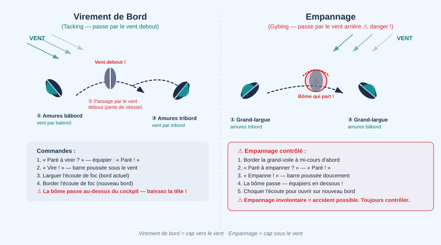
Le virement de bord permet de changer d'amure en passant face au vent. C'est la manœuvre fondamentale pour remonter au vent par louvoyage.
Séquence complète :
- "Paré à virer ?" — vérifiez que tout l'équipage est prêt, les mains sur les écoutes du foc aux winches.
- "Vire !" — poussez la barre sous le vent progressivement (ou tournez la roue). Ne virez pas trop vite : la proue doit traverser le vent avec élan.
- La proue s'oriente vers le vent — les voiles commencent à faseyer. C'est le moment critique.
- Au passage : choquéz l'écoute du foc du côté actif au bon moment, laissez le foc passer.
- Reprenez et bordez l'écoute du nouveau côté, au winch. Deux tours de winch avant de bloquer.
- Affinez le réglage au nouveau cap une fois établi.
Ce qui peut mal tourner :
- Raté du virement (missed stays) : la proue s'arrête face au vent sans continuer. Causes : trop lent dans la gîte, mer courte qui bloque la proue, vent trop faible. Solution : accélérer d'abord, puis retenter.
- En pantenne (in irons) : le bateau s'arrête complètement face au vent et ne répond plus à la barre. Pour en sortir : poussez le foc contre le vent pour faire pivoter la proue sur un côté, puis reprenez.
- Headsail timing raté : border trop tôt crée une résistance dans le virement. Border trop tard laisse le génois faseyer inutilement et ralentit le bateau sur le nouveau bord.
Voir concepts/manoeuvre-voile-base.
L'empannage (jibing)
L'empannage change d'amure en passant vent arrière. La bôme passe d'un bord à l'autre — avec une force considérable si le vent est fort. C'est la manœuvre la plus dangereuse de la voile de plaisance.
Pourquoi c'est plus dangereux que le virement : Au virement, l'énergie est dissipée progressivement en passant face au vent. À l'empannage, la pression accumulée se relâche d'un coup quand la bôme bascule. Une bôme à 14 nœuds de vent peut fracasser une tête ou démâter un bateau en coup de fouet accidentel.
Empannage contrôlé — procédure :
- "Paré à empanner ?" — tout l'équipage se baisse, personne dans la trajectoire de la bôme.
- Bordez progressivement la grand-voile avec l'écoute jusqu'à ce que la bôme soit approximativement sur l'axe du bateau.
- "Empanne !" — mettez la barre au vent doucement.
- La bôme passe — accompagnez-la tout en tenant l'écoute, ne la laissez jamais claquer seule.
- Choquez l'écoute sur le nouveau bord pour éviter le contre-empannage.
- Ajustez cap et voiles.
Sécurités :
- Un préventer (bras de retenue) : cordage reliant la bôme au guindant ou au balcon avant, empêchant un empannage involontaire au grand largue.
- Par vent fort : toujours réduire la voilure avant d'empanner. Par-dessus force 5, mieux vaut virer en passant face au vent et contourner.
- Ne virez jamais involontairement au portant : si vous sentez que la bôme va passer, criant "Attention !" immédiatement.
Accostage à quai
La règle cardinale de toute manœuvre en marina : approchez toujours contre le vent ou contre le courant — l'élément qui freine le mieux. Contre le vent, il suffit de couper le moteur pour stopper naturellement.
L'angle d'approche : En marina ouverte, approchez à 15-30° du quai — cela laisse de la marge pour corriger tout en permettant de longer le quai à vitesse réduite. En box fermé, l'approche perpendiculaire s'impose.
Contrôle de la vitesse : N'entrez jamais dans une marina à plus de 3 nœuds. Des courtes impulsions en marche arrière permettent de contrôler finement la décélération. Un bateau qui stoppe trop vite est difficile à positionner ; un bateau qui arrive trop vite est dangereux.
Amarrage méditerranéen (stern-to) : La technique standard des ports méditerranéens pour optimiser l'espace :
- Approchez le poste par l'avant, mouillez l'ancre à 30-40 mètres du quai.
- Faites marche arrière lentement vers le quai.
- Stoppez à 1-2 mètres du bord — envoyez les aussières arrière à quai.
- Tendez doucement la chaîne d'ancre pour maintenir l'écartement de la poupe.
Si le vent vous pousse sur le quai (lee shore) : approchez prow-first (poupe vers le quai) pour avoir le vent dans le dos pendant l'approche, puis virer lentement.
Schéma de l'amarrage méditerranéen (stern-to) :
QUAI ════════════════════════════════════
│─── amarre poupe ───│─── amarre poupe ───│
▼ ▼
[POUPE] [POUPE]
│ │
[BATEAU] [BATEAU]
│ │
[PROUE] [PROUE]
│ │
~~~chaîne~~~ ~~~chaîne~~~
│ │
ANCRE ANCRE
En amarrage méditerranéen, la poupe est au quai et l'ancre maintient la proue au large. C'est la technique standard dans les marinas de Göcek et de toute la Méditerranée — elle permet d'embarquer et débarquer directement depuis la poupe, et de maximiser le nombre de bateaux le long du quai.
Voir concepts/accostage-amarrage.
Manœuvre au moteur — effets du gouvernail et de l'hélice
L'effet de couple (propeller walk) : Une hélice à pas fixe tourne dans un sens. En marche avant, son axe de rotation génère une force latérale négligeable — le gouvernail compense facilement. En marche arrière, cette force latérale devient significative : une hélice à rotation droite (la plus commune) pousse la poupe vers bâbord quand on recule.
Exploiter l'effet de couple : Pour tourner en espace réduit tribord :
- Courte impulsion en marche arrière → la poupe dérive à bâbord → la proue tourne à tribord.
- Impulsion en avant → gouvernail mis pour accentuer le virage.
- Alterner avant/arrière avec le gouvernail permet des virages très courts.
Le pivot point : À vitesse réduite, le bateau pivote autour d'un point situé environ 1/3 depuis l'avant. Cela signifie que quand la proue tourne à droite, la poupe part à gauche d'une amplitude 2× plus grande. En marina, anticipez toujours le balayage de la poupe.
Voir concepts/moteur-pratique.
Entrée dans la marina de Göcek (D-Marin Göcek) :
Le chenal d'entrée est orienté 075°. Le vent de l'Imbat souffle du 285° — travers légèrement arrière en entrant. Effet pratique : il vous pousse vers le quai nord. Corrigez en avançant légèrement à l'avant tribord pour maintenir l'axe du chenal.
Le gulet de 44 pieds exige environ 40 mètres de manœuvre pour stopper depuis 3 nœuds. Prévoyez de réduire la vitesse à 200 mètres de votre poste.
Amarrage en cul-de-sac au ponton F : ancre par l'avant à 20 mètres du quai, marche arrière, amarres de poupe. L'ancre est à 40 mètres dans un fond sableux de 6 m.
Question 1 : En approchant d'un ponton avec le vent dans le dos, quelle est la difficulté principale ?
- A) Le vent accélère l'approche et rend le freinage difficile — risque de choc contre le quai
- B) Le vent ralentit le bateau et il faut compenser avec plus de moteur
- C) Le vent n'a pas d'effet significatif en marina fermée
Voir la réponse
Réponse : A — Le vent dans le dos pousse le bateau vers le quai et rend le contrôle de la vitesse difficile. La règle d'or : approcher toujours face au vent (vent dans le nez) pour pouvoir freiner progressivement avec la marche arrière. C est faux — même en marina, le vent de travers ou de dos est une contrainte majeure pour les bateaux à haute superstructure.Question 2 : Lors d'un virement de bord (passage par le lit du vent), à quel moment le foc (génois) doit-il être passé de l'autre côté ?
- A) Avant que la proue ne passe dans le lit du vent, en anticipant
- B) Quand la proue est exactement dans l'axe du vent (milieu du virement)
- C) Après que la proue est passée et que la voile commence à se remplir de l'autre côté
Voir la réponse
Réponse : C — La séquence correcte : (1) lofer jusqu'à ce que la proue passe dans le lit du vent, (2) la grand-voile passe seule grâce au vent, (3) choquer l'écoute du foc dès que la proue franchit l'axe et border l'écoute de l'autre côté pour remplir la voile. Passer le foc trop tôt (A) le coince contre le mât.Question 3 : Mehmet explique l'empannage accidentel à William. Quelle est la manœuvre la plus dangereuse sur un voilier ?
- A) Le virement de bord au près — la voile peut claquer fortement
- B) L'empannage involontaire au grand largue ou vent arrière — la bôme peut venir en force
- C) La mise en panne — arrêt complet du bateau sous voiles
Voir la réponse
Réponse : B — L'empannage involontaire est la manœuvre la plus dangereuse : la bôme part brutalement de l'autre côté avec toute la force du vent, pouvant blesser l'équipage ou rompre le gréement. Le virement de bord est contrôlé. La mise en panne est une manœuvre de sécurité volontaire. La prévention de l'empannage : ne jamais naviguer vent arrière exact sans vang ou preventer.Question 4 : À l'approche du ponton F à Göcek, William doit lancer une amarre à un équipier sur le quai. À quel moment du mouvement de lancer libère-t-il le cordage ?
- A) Avant le lancer, en tenant un bout pour guider la trajectoire
- B) Au sommet du geste, bras tendu vers l'avant, quand l'amarre est au maximum de son élan
- C) Après avoir observé que l'équipier est prêt à attraper
Voir la réponse
Réponse : B — La technique correcte du lancer d'amarre : enrouler quelques spires dans la main de lancer, faire tournoyer légèrement pour prendre de l'élan, libérer au sommet du geste lorsque le bras est tendu vers la cible. C est une condition préalable importante mais ne décrit pas le moment du lancer. A décrit une garde, pas un lancer.Ils sont au mouillage le lendemain dans la crique de Hamam Koyu — Cleopatra's Bath, la source thermale naturelle. Christelle nage jusqu'à la plage. "Cléopâtre a vraiment nagé ici ?" Personne ne sait avec certitude. L'histoire dit que oui. La géographie dit que c'est plausible. Rebecca, dans l'eau : "C'est chaud ! L'eau est plus chaude qu'en surface." Emmanuel : "Source thermale. Quarante degrés." Rebecca : "OK là je valide. Mieux que les Bahamas."
Session 4.3 — Mouillage, Amarrage et Ancrage : tenir sur son ancre.
Mouillage, Ancrage et Amarrage
Samedi matin, 8h00. Hamam Koyu (Cleopatra's Bath), golfe de Göcek.
William prend son café sur le pont avant. L'ancre a tenu toute la nuit — 6 mètres de fond, fond sableux, 30 mètres de chaîne filée. Le bateau n'a pas bougé d'un mètre. Deux autres voiliers sont mouillés à proximité, espacés de 50 mètres.
Emmanuel sort le premier, avant tout le monde, comme toujours. "L'ancre peut partir si le vent monte ?"
"Peut-être. Ça dépend du fond, de la longueur de chaîne, du type d'ancre, et du vent. C'est pour ça qu'on a regardé la météo avant de mouiller ici."
Il indique le fond visible à travers l'eau turquoise. "Sable. Bonne tenue. Fond dur ou herbier : bien moins bon." Christelle arrive avec deux cafés. Rebecca, en nageant vers la source thermale, s'arrête sur le côté. "Vous avez tout un truc avec cette chaîne. Dans les marinas des Bahamas, on met juste des lignes à un ponton."
Types d'ancres
Le choix de l'ancre dépend du type de fond, de la taille du bateau, et des conditions prévisibles. Il n'existe pas d'ancre universelle parfaite. Le diagramme ci-dessous présente les principales familles d'ancres utilisées en plaisance, avec leurs formes caractéristiques.
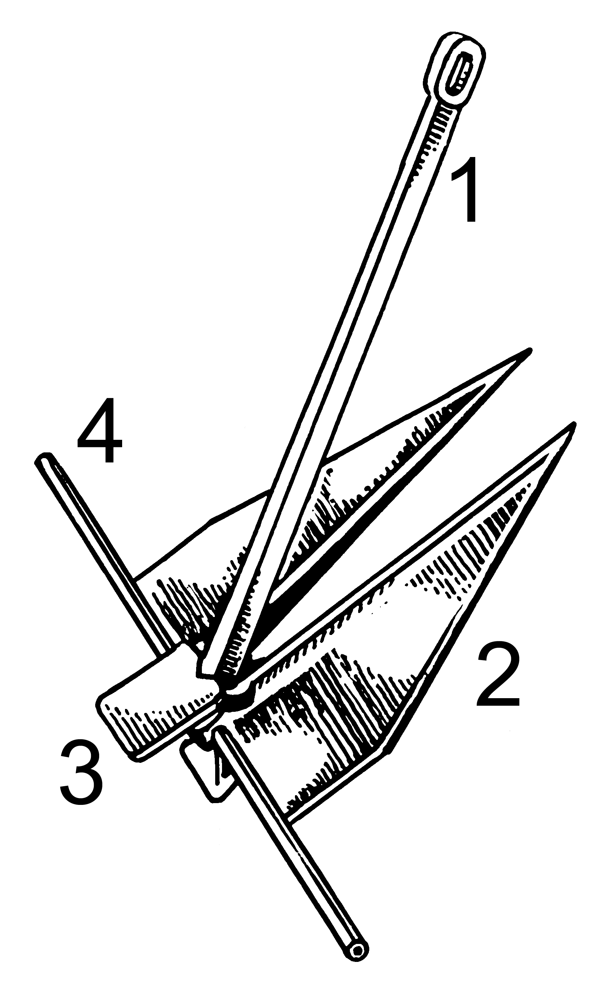
De gauche à droite : l'ancre charrue (CQR), l'ancre plate (Danforth) et l'ancre griffe (Bruce/Rocna). Chacune a un mécanisme de pénétration différent dans le fond marin. La forme du soc, de la patte ou de la griffe détermine dans quels types de fonds l'ancre s'accroche le mieux.
En plaisance côtière, trois grandes familles dominent. L'ancre charrue (type CQR ou Delta) est la plus polyvalente : son soc unique pivote pour s'aligner avec la traction puis s'enfonce progressivement. Elle convient au sable et à la vase. L'ancre plate (type Danforth) a deux grandes pattes articulées qui offrent une surface d'accroche importante dans le sable fin et la vase molle ; son avantage est qu'elle se range à plat, idéale comme ancre de seconde (kedge). Enfin, l'ancre griffe (type Bruce ou les modèles modernes Rocna, Mantus) possède une patte concave qui mord rapidement et se ré-enfonce automatiquement si le vent tourne — c'est la famille la plus performante sur fonds variés.
| Type | Points forts | Fond idéal |
|---|---|---|
| Charrue (CQR/Delta) | Bonne tenue générale, ne labours pas | Sable, vase |
| Griffe (Rocna, Bugel) | Tenue excellente, re-pénètre facilement | Sable, galets |
| Danforth | Très bien en sable/vase, médiocre ailleurs | Sable, vase fine |
| Marine / Amirauté | Traditionnel, lourd | Rochers, algues |
Les ancres charrues (CQR, Delta) fonctionnent comme un soc : elles pivotent jusqu'à se mettre dans l'axe de traction, puis s'enfoncent. Fiables dans des conditions stables, mais peuvent ressortir en cas de brusque changement de direction du vent.
La famille Rocna/Bugel utilise une lame concave ou une patte recourbée qui pénètre très rapidement dans le fond et se ré-encre d'elle-même si l'ancre est tirée dans une nouvelle direction. Ce sont les meilleures ancres pour les fonds variés.
Le Danforth (à pattes plates) se range à plat dans un coffre, ce qui le rend populaire comme ancre de rechange (kedge). Il tient bien dans le sable fin ou la vase, mais refuse de mordre dans le gravier, la roche ou les herbiers.
Recommandation pratique : Embarquez si possible deux ancres de types différents — une principale (charue ou Rocna) et une kedge (Danforth ou Delta plus petite) pour les situations délicates.
Technique de mouillage
La procédure de mouillage se déroule en 6 étapes. Comprendre le pourquoi de chaque étape permet d'adapter si les conditions diffèrent.
-
Repérer le fond sur la carte : Symbole S (sable) = excellent. M (vase) = très bonne tenue mais ancre difficile à décrocher. R (roche) = médiocre, éviter. Wd (algues/herbier) = mauvais, et souvent protégé (posidonie en Méditerranée). Vérifiez aussi la profondeur prévue à la PM pour calculer votre touée.
-
Calculer la longueur de chaîne : Minimum 3× la hauteur d'eau (fond + tirant d'eau de votre étrave). En Méditerranée avec presque pas de marée : simple. En Atlantique : calculez avec la profondeur à PM. En conditions instables ou vent fort annoncé : 5×.
-
Approche face au vent ou face au courant : cela vous permet de contrôler exactement votre vitesse et de stopper naturellement. Si vous approchez vent dans le dos, le bateau continue d'avancer même moteur coupé.
-
Mouillez à l'arrêt ou en légère marche arrière : si vous avancez encore, la chaîne s'empile sur l'ancre comme une flaque de spaghettis et l'ancre ne peut pas s'orienter correctement. Elle ne mordra pas.
-
Filez la chaîne progressivement tout en faisant marche arrière lentement. La chaîne doit se déposer en ligne tendue sur le fond, pas en tas.
-
Choque-test (set test) : une fois la chaîne filée à la longueur voulue, serrez-la sur le taquet et passez lentement en marche arrière à ~1000 tours moteur pendant 2 minutes. Observez les amers à terre — s'ils restent fixes, l'ancre tient. S'ils bougent, l'ancre dérape — recommencez.
Voir concepts/mouillage, concepts/mouillage-technique, concepts/pratique-mouillage.
Le cercle d'évitage
Ancré, votre bateau n'est pas fixe : il tourne autour de l'ancre selon la direction du vent et du courant. Le cercle d'évitage est le cercle dans lequel votre bateau peut se déplacer.
Calcul du rayon : Longueur de chaîne filée + longueur du bateau. Exemple : 30 m de chaîne + 13 m de bateau = cercle de rayon 43 m. Mais en pratique, on dessine un cercle de 50 m pour les incertitudes.
Implications pour l'espace : Votre cercle ne doit empiéter ni sur un obstacle (côte, roche) ni sur le cercle d'évitage d'un voisin. Problem : vos voisins peuvent avoir des rapports chaîne/profondeur différents. Un voilier avec 20 m de chaîne et un autre avec 50 m auront des cercles très différents — et selon le vent, leurs cercles peuvent se chevaucher.
Schéma du cercle d'évitage :
vent dominant
│
▼
· · · · · · · ·
· ·
· ANCRE ·
· │ ·
· chaîne │ ·
· (30 m) │ ·
· ▼ ·
· BATEAU (13 m) ·
· ·
· · · · · · · ·
Rayon = 30 m chaîne + 13 m bateau = 43 m
Le cercle d'évitage est la zone dans laquelle votre bateau peut pivoter autour de son ancre quand le vent ou le courant tourne. Aucun obstacle ni bateau voisin ne doit se trouver dans ce cercle. Si un voisin a un rapport chaîne/profondeur différent du vôtre, vos cercles ne tournent pas de façon synchrone — risque de contact.
La règle sociale : Arriver le dernier au mouillage signifie que vous choisissez votre poste en respectant ceux qui sont déjà là. Si vous draggez et touchez le bateau d'un voisin, vous êtes responsable même si vous étiez là avant lui. Ne discutez pas — évitez le problème en choisissant votre poste avec soin.
Si vous draggez : Ne paniquez pas. Démarrez immédiatement le moteur. Évaluez la situation (espace disponible, dangers). Si le temps le permet, fillez plus de chaîne et refaites le set test. Si le danger est imminent (vous dérivez vers un rocher) : moteur en avant sur l'ancre, cherchez un nouveau poste, mouilllez à nouveau.
Veille au mouillage
Mouillé ne signifie pas que vous pouvez abandonner le bateau à ses occupants. La règle 5 COLREG s'applique même à l'ancre : veille permanente.
Pratique de la veille au mouillage :
- Prenez deux amers à terre bien séparés et notez leurs alignements depuis le bateau au moment du mouillage.
- Vérifiez ces alignements toutes les 30 minutes, ou après chaque renforcement du vent.
- Activez l'alarme de dragage sur votre GPS chartplotter : définissez un rayon (50 m typiquement) autour de votre position au mouillage. Si le bateau sort de ce cercle, l'alarme sonne.
- La nuit : observez les lumières à terre — si leur position relative change progressivement, vous drapez.
VHF canal 16 : restez en écoute même au mouillage. Les CROSS diffusent des avis aux navigateurs (changements de balisage, épaves signalées) et des bulletins météo d'urgence.
Voir concepts/veille-quart.
La posidonie (Posidonia oceanica) est une plante marine protégée couvrant de nombreux fonds méditerranéens, facilement reconnaissable à ses feuilles vertes rubanées. Il est interdit de mouiller sur la posidonie en Méditerranée (réglementation européenne et turque). Cherchez le sable clair.
Amarrage à quai — nœuds pratiques
Le nœud de cabestan (clove hitch) est le nœud des défenses et des amarres provisoires. Rapide à mettre et à défaire, ajustable en tirant sur un brin. Pas idéal pour les amarres permanentes qui subissent des tractions variables — le nœud peut se desserrer.
Le nœud de taquet (cleat hitch) est la méthode standard pour sécuriser une amarre sur un taquet de quai ou de bord : un tour complet autour du taquet, puis des chiffres-8 alternés entre les deux cornes, terminés par un demi-clé bloqué. Sûr, rapide à défaire même sous tension.
Les amarres d'un bateau au ponton :
- Amarre de pointe avant (bow line) : empêche le bateau de reculer.
- Amarre de pointe arrière (stern line) : empêche le bateau d'avancer.
- Garde avant (forward spring) : part de l'avant vers l'arrière — empêche le bateau de reculer face aux vagues.
- Garde arrière (after spring) : part de l'arrière vers l'avant — empêche le bateau d'avancer avec la houle.
Les quatre amarres ensemble tiennent le bateau dans les trois dimensions. En Méditerranée sans houle, deux suffiront souvent pour une nuit calme. En Atlantique avec du clapot, les quatre sont indispensables.
Longueur des amarres : En zone de marée importante, vos amarres doivent être assez longues pour que le bateau puisse monter et descendre avec la marée sans se retrouver pendu — ou avec le pont au-dessus du quai. Comptez 2× l'amplitude de marée maximale + la longueur entre point d'attache et taquet.
Voir concepts/cordages-noeuds, concepts/accostage-amarrage.
Hamam Koyu (Cleopatra's Bath, 36°46.8'N 28°58.2'E) :
Fond sableux, 4–8 m. Bonne tenue. Exposition : NE-E uniquement. L'Imbat vient du SW/NW — donc abri excellent.
Capacité : une dizaine de bateaux. Convention locale : restez à au moins 50 m les uns des autres. Certains gulets s'amarrent en poupe à un rocher à terre (technique provençale avec une touée) — voir le SVG
La source thermale (40°C) est à 50 mètres à la nage depuis le mouillage.
Question 1 : Vous mouilles dans la crique de Tersane par 6 m de fond, tirant d'eau 1,5 m. Quelle longueur de chaîne minimum filez-vous (règle des 3×) ?
- A) 18 m (3× le fond seul)
- B) 22,5 m (3× (fond + tirant))
- C) 30 m (5× le fond — recommandé pour tout mouillage)
Voir la réponse
Réponse : B — La règle prudente : longueur de chaîne = 3× (profondeur + tirant d'eau) = 3× (6 + 1,5) = 3× 7,5 = 22,5 m. A ne prend pas en compte le tirant d'eau. C (5×) est recommandé par vent fort mais n'est pas le minimum demandé à l'examen. Par fond vaseux ou vent > 20 nœuds, choisir 5×.Question 2 : Après avoir mouillé dans la baie de Hamam Koyu, comment William vérifie-t-il que l'ancre tient ?
- A) En tirant fort sur la chaîne avec les mains — si elle ne cède pas, c'est bon
- B) En prenant deux amers à terre en croix et en observant pendant 5 minutes que les alignements ne bougent pas
- C) En regardant si les autres bateaux au mouillage autour de lui ont bougé
Voir la réponse
Réponse : B — Deux amers fixes à terre (clocher + antenne, rocher + maison…) vus depuis la poupe et repérés sur les côtés permettent de détecter un dérapage de quelques mètres. A (tirer à la main) est inefficace — la chaîne tient plusieurs tonnes sous moteur, pas à la main. C ne détecte pas un dérapage général de la baie (coup de vent qui touche tout le monde).Question 3 : Dans la crique de Göcek, un bateau mouille à 30 mètres de vous. Le vent tourne de 30°. Quel phénomène devez-vous anticiper ?
- A) Rien — un mouillage bien ancré est stable quelle que soit la direction du vent
- B) Un risque d'abordage si les rayons d'évitage des deux bateaux se chevauchent après le changement de direction du vent
- C) Un dérapage de votre ancre car la direction de traction change
Voir la réponse
Réponse : B — Lorsque le vent tourne, chaque bateau "évite" (pivote autour de son ancre) en suivant la nouvelle direction du vent. Si deux bateaux ont des rayons d'évitage différents (chaîne différente, différence de longueur de bateau), ils peuvent se retrouver en collision. C'est l'un des principaux risques en baie très peuplée.Question 4 : Mehmet explique le mouillage méditerranéen "à la turque" (Med-moor). Quelle est sa particularité par rapport au mouillage classique ?
- A) On mouille l'ancre en avant et on recule pour amarrer la poupe au quai
- B) On mouille l'ancre en arrière et on avance pour amarrer la proue au quai
- C) On se place tribord au quai avec une seule amarre de poupe, sans ancre
Voir la réponse
Réponse : A — Le mouillage méditerranéen (Med-moor) : on avance perpendiculairement au quai, on laisse tomber l'ancre en s'approchant, puis on recule pour filer la chaîne et amarrer la poupe au quai. L'ancre maintient la proue au large. C'est la technique standard dans les marinas méditerranéennes où la place en linéaire est limitée.Le lendemain — dimanche, jour 7 — William consulte la météo. Des nuages à l'horizon, pression en légère baisse. La traversée prévue vers Kızılada peut être plus sportive que prévu. Il est temps d'apprendre à lire le ciel.
Session 5.1 — Météo Marine et Planification : lire les bulletins, comprendre les systèmes.
Météo Marine — Lire le Ciel et les Bulletins
Dimanche matin, jour 7. 7h30. À bord, ancré Hamam Koyu.
William est debout depuis 6h. Il a le baromètre à la main — 1012 hPa. Hier soir : 1015 hPa. Trois hPa en douze heures, en légère baisse. Pas dramatique, mais notable.
Il regarde l'horizon. Des cirrus en faisceaux — "queues de jument" — filent vers l'est. La couverture nuageuse s'épaissit progressivement depuis minuit.
Son téléphone : Windfinder indique force 4 cet après-midi, rafales 6 possible en fin de journée. WindyApp confirme. L'application Météo France (pour l'examen, c'est la référence française) afficherait "BMS Var 4 à 7" pour la zone Méditerranée orientale. William note tout dans son carnet — vieille habitude de consultant, documenter avant de décider.
Emmanuel le rejoint à 6h30. "Alors ?" "Force 4 cet après-midi, rafales 6 possible." Emmanuel regarde les cirrus. "Je confirme. On part tôt ou on attend demain." Rebecca sort à 7h15 avec son café. "On part où ?" William : "Kızılada. 7 milles. Mais je ne sais pas encore si c'est raisonnable." Rebecca : "En Martinique, les capitaines partent par n'importe quel temps." Emmanuel : "C'est pour ça que les capitaines de Martinique ont des bateaux neufs tous les cinq ans." Christelle rit.
"On y va ou pas ?" dit finalement William à Mehmet.
"Décide. C'est ton bateau."
Les systèmes météo — dépressions et anticyclones
La météo marine repose sur la compréhension des systèmes de pression atmosphérique. Une dépression est une zone où la pression atmosphérique est inférieure à l'environnement — l'air y converge et monte, formant nuages et précipitations. Un anticyclone est une zone de haute pression — l'air y descend et diverge, apportant généralement du beau temps.
La limite standard entre beau et mauvais temps se situe autour de 1013–1015 hPa. En dessous, méfiance. En dessus, généralement favorable.
Circulation des vents : Dans l'hémisphère nord, les vents tournent dans le sens inverse des aiguilles d'une montre autour d'une dépression (à cause de la force de Coriolis), et dans le sens des aiguilles d'une montre autour d'un anticyclone. La force du vent est proportionnelle au resserrement des isobares sur les cartes météo — plus les lignes sont proches, plus le vent est fort.
Anatomie d'une dépression frontale :
Le front chaud arrive progressivement, sur 200 à 300 km. Depuis le bateau, vous observez une séquence de nuages reconnaissable : d'abord des cirrus en filaments (les fameuses "queues de jument"), puis des cirro-stratus qui créent des halos autour du soleil, puis des alto-stratus qui voilent complètement le ciel, et enfin des nimbo-stratus qui apportent la pluie continue. Au passage du front chaud, le vent vire (tourne dans le sens des aiguilles d'une montre) et la pluie peut s'arrêter temporairement.
Le front froid suit avec une brutalité caractéristique. Un cumulonimbus en enclume peut atteindre 9 000 mètres. Le grain associé est violent — vents sautants, possibilité de grêle, forte mer brève — mais la durée est courte (30 à 60 minutes). Après le passage : éclaircie, baromètre qui remonte, visibilité excellente.
Observer les nuages — les 10 genres par altitude
Savoir identifier les nuages est l'un des outils les plus anciens et les plus fiables du marin. L'Organisation Météorologique Mondiale classe les nuages en 10 genres répartis sur trois étages d'altitude. Le schéma ci-dessous présente cette classification complète :
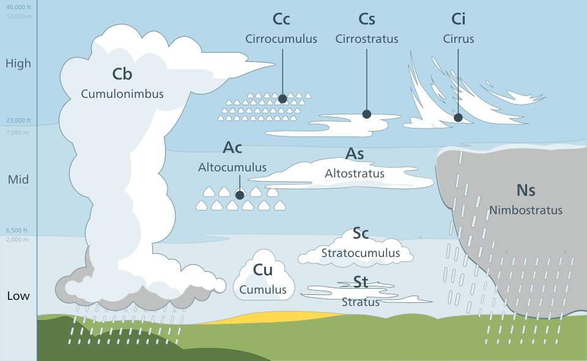
Les 10 genres de nuages classés par altitude : étage supérieur (cirrus, cirro-stratus, cirro-cumulus), étage moyen (alto-stratus, alto-cumulus), étage inférieur (stratus, strato-cumulus, nimbo-stratus) et nuages à développement vertical (cumulus, cumulonimbus).
Ce que chaque type de nuage vous dit en tant que skipper :
-
Cirrus (6 000–12 000 m) : filaments blancs et fins, les "queues de jument". Isolés par beau temps, ils sont inoffensifs. Mais s'ils s'épaississent progressivement et se multiplient en venant de l'ouest, c'est le premier signe d'un front chaud en approche — dégradation dans les 12 à 24 heures. C'est le signal d'alerte le plus précoce que la nature vous offre.
-
Cirro-stratus (5 000–10 000 m) : voile blanchâtre qui crée un halo autour du soleil ou de la lune. Confirmation de l'approche du front chaud. Si vous voyez un halo après des cirrus, la dégradation est quasi certaine sous 12 à 18 heures.
-
Cumulus (500–2 000 m) : les "moutons du beau temps" — nuages blancs à base plate et sommet arrondi, bien séparés les uns des autres. Tant qu'ils restent petits et ne grossissent pas dans l'après-midi, le temps est stable. Excellent signe pour une sortie en mer.
-
Cumulonimbus (base 500 m, sommet jusqu'à 12 000 m) : le nuage le plus dangereux pour le navigateur. En forme d'enclume au sommet, il signale un orage ou un grain violent. Vents pouvant passer de force 3 à force 8 en quelques minutes, pluie torrentielle, grêle possible, éclairs. Si vous voyez une enclume se développer dans votre direction, cherchez un abri immédiatement ou préparez-vous à affaler et courir devant le grain.
-
Stratus (0–500 m) : couche grise uniforme, très basse, souvent confondue avec le brouillard en mer. Associé à la bruine et à une visibilité médiocre. Pas de vent violent, mais la navigation devient difficile par manque de visibilité.
-
Nimbo-stratus (500–3 000 m) : masse grise épaisse qui occulte complètement le soleil. C'est le nuage de la pluie continue, souvent associé au passage du front chaud. Pluie régulière, parfois pendant des heures.
Règle de Buys-Ballot : Tournez le dos au vent dans l'hémisphère nord → le centre de la dépression est à votre gauche.

Voir concepts/meteorologie-marine, concepts/securite-meteo-et-pression.
L'échelle de Beaufort

L'échelle de Beaufort, créée en 1805 par l'amiral britannique Francis Beaufort, mesure la force du vent en 13 degrés (0 à 12) basés sur les effets observables sur la mer. C'est l'échelle universelle de la navigation maritime.
| Force | Vitesse (nœuds) | Description | État de la mer |
|---|---|---|---|
| 0–1 | 0–3 | Calme | Mer d'huile |
| 2–3 | 4–10 | Légère brise | Risées, petites vagues |
| 4 | 11–16 | Jolie brise | Vagues 1m, moutons |
| 5 | 17–21 | Bonne brise | Vagues 2m, embruns |
| 6 | 22–27 | Vent frais | Mer agitée, navigation difficile |
| 7 | 28–33 | Grand frais | Naviguation sportive |
| 8–9 | 34–47 | Coup de vent | Navigation dangereuse |
Progression visuelle — de la mer d'huile à l'ouragan :
La meilleure façon de comprendre l'échelle de Beaufort est de voir ce que chaque force produit réellement sur la surface de la mer. Les quatre photos ci-dessous montrent l'évolution dramatique entre le calme absolu et les conditions extrêmes :
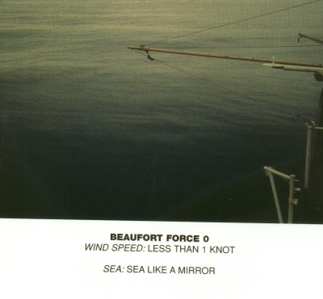
Force 0 (0 nœud) — la mer est un miroir parfait, sans la moindre ride. Pas un souffle de vent. Le bateau ne peut avancer qu'au moteur. C'est le calme idéal pour se baigner, plonger, et profiter du mouillage. En Méditerranée estivale, ces conditions sont fréquentes tôt le matin avant l'installation de la brise thermique.
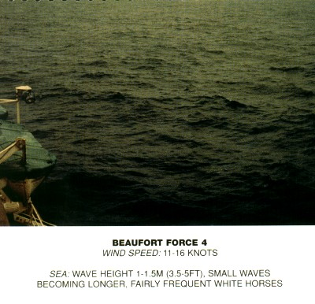
Force 4 (11-16 nœuds) — les premières vagues d'un mètre se forment, et les "moutons" (crêtes blanches d'écume) apparaissent. C'est la force typique de l'Imbat à Göcek l'après-midi. Le bateau gîte agréablement sous voiles, la navigation est sportive mais confortable. Le skipper doit commencer à surveiller les rafales et s'assurer que l'équipage porte un gilet.
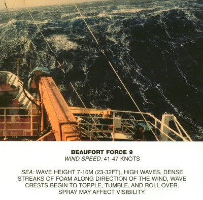
Force 9 (41-47 nœuds) — fort coup de vent. Les vagues atteignent 7 à 10 mètres, les crêtes basculent et déferlent, les embruns denses réduisent la visibilité. La mer est blanche d'écume sur de grandes surfaces. Un plaisancier côtier ne devrait jamais se trouver dans ces conditions. Si vous y êtes pris, la cape ou la fuite devant la tempête sont vos seules options. Toute manœuvre en marina est impossible.
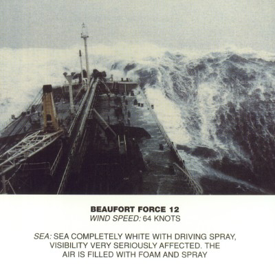
Force 12 (64+ nœuds) — ouragan. L'air est saturé d'embruns et d'écume, la surface de la mer est entièrement blanche, les vagues dépassent 14 mètres. La visibilité est quasi nulle. Aucun plaisancier ne navigue par ces conditions — même les navires professionnels cherchent à les éviter. Heureusement, ces conditions sont extrêmement rares en Méditerranée.
Ce que chaque force signifie en pratique :
La force 3 (7–10 nœuds) est la brise idéale pour le débutant — le bateau avance bien sous voiles, les vagues sont légères, la mer reste maniable. La force 4 (11–16 nœuds) représente la première limite confortable : les moutons commencent à apparaître, le bateau gîte légèrement mais reste pleinement maniable pour un skipper expérimenté. C'est la force de l'Imbat à Göcek — agréable et sportive.
La force 5 (17–21 nœuds) devient exigeante. Les vagues atteignent 2 mètres, les embruns mouillent le cockpit, un ris dans la grand-voile devient recommandé. La force 6 (22–27 nœuds) représente la limite haute recommandée pour les plaisanciers côtiers — la mer est véritablement agitée, les vagues peuvent être croisées, la manœuvre en marina devient délicate.
Seuils pratiques pour le plaisancier côtier :
Force 3–4 : Navigation idéale — débutants OK, apprentissage voile
Force 5 : Expérience requise — premier ris, embruns, mer formée
Force 6 : Limite haute côtier — marina délicate, réduction de voilure
Force 7+ : RESTEZ AU PORT — navigation dangereuse pour la plaisance
Ces seuils ne sont pas des limites théoriques — ce sont les retours d'expérience de milliers de navigateurs côtiers. À Göcek, l'Imbat standard est force 3–4. Les jours de force 5, Mehmet surveille les rafales. Au-delà, on reste au mouillage.
Au-delà de force 7, la navigation devient dangereuse pour un bateau côtier standard. Les coups de vent de force 8–9 peuvent générer des vagues de 4 à 6 mètres. La règle empirique du plaisancier raisonnable : si le bulletin annonce de la force 7, vous attendez au port.
Comment estimer la force du vent sans instruments : Regardez les vagues à distance — la présence de moutons (écume blanche à la crête) indique force 4. Des traînées d'écume continues : force 6. Des embruns arrachés en nappes : force 8 ou plus. Les arbres à terre : branches qui s'agitent = force 4, arbres entiers en mouvement = force 7+.
Lire un bulletin météo maritime
En France, les bulletins côtiers sont diffusés par CROSS (Centre Régional Opérationnel de Surveillance et de Sauvetage) sur VHF et sur le site VHF16/navtex.
Comment recevoir les bulletins :
- VHF : canaux météo 63 ou 80 (selon la région), diffusés à heures fixes par les CROSS (en général 7h45, 15h45, 19h45 UTC)
- Navtex : réception automatique sur 518 kHz (caractère "A" = Brest, "W" = Méditerranée)
- Internet/Apps : Météo France Marine, Windfinder, Windy, Météo Consult Marine
- Téléphone : 3250 (Météo France vocal)
Format d'un bulletin côtier :
BULLETIN MÉTÉO MARINE CÔTIER — CROSS MED
Valable jusqu'au 12 juillet 21h00 UTC
ZONE LION : vent NW 4 à 5 temporairement 6, mer agitée 2m
ZONE PROVENCE : vent variable 2 à 3, mer peu agitée 1m
Tendance : renforcement NW demain matin
Le bulletin indique : zone géographique (Lion, Provence, Pays de Loire...), validité, vent (direction + force Beaufort), état de la mer (hauteur significative), visibilité, et tendance.
BMS = Bulletin Météo Spécial : émis dès que des vents de force 7 ou plus sont prévus dans les 24 heures. C'est le signal d'alerte maximal pour la plaisance côtière — renoncer à la sortie ou chercher un abri immédiat.
Signes d'alerte :
- Baisse de pression > 3 hPa en 3h → probable coup de vent
- Cirrus suivis d'alto-stratus → front chaud en approche (12–24h)
- Ciel jaune-orangé le soir au west → souvent signe de mauvais temps
Voir concepts/signaux-meteo.
Vents locaux
Comprendre les vents locaux de votre zone de navigation est aussi important que de lire les bulletins généraux. Voici les principaux vents méditerranéens et leurs caractéristiques pratiques :
Mistral : Ce vent du nord-ouest canalisé dans la vallée du Rhône affecte le golfe du Lion et la côte provençale de Marseille à Toulon. Il peut atteindre 40 à 60 nœuds sans prévenir, surtout lors des premières heures d'établissement. Sa particularité : il s'accompagne d'un ciel parfaitement bleu et d'une visibilité exceptionnelle — le beau temps apparent est trompeur. La mer d'un Mistral fort est courte et creuse, particulièrement difficile à barrer. Il peut durer 3, 6 ou 9 jours (toujours multiples de 3, selon la tradition).
Tramontane : L'équivalent du Mistral pour le Languedoc (de Perpignan à Montpellier), accéléré dans le couloir entre Pyrénées et Massif Central. Caractéristiques similaires : ciel bleu, force 6–7 fréquent, mer désagréable dans le golfe du Lion.
Meltemi : Le vent dominant de Méditerranée orientale en été (juin–septembre), soufflant du NNW à NNE. Il s'établit généralement à 15–25 nœuds en milieu de journée et peut forcer à 35–40 nœuds lors des épisodes intenses de juillet–août. Il peut souffler pendant plusieurs jours consécutifs — prévoir un mouillage abrité des secteurs nord. En Égée du nord, il est particulièrement violent.
Imbat : Spécifique aux côtes turques de la mer Égée et du golfe de Fethiye, l'Imbat est une brise de mer classique qui s'établit en milieu de matinée (9h–11h) du secteur SW ou NW, à 10–18 nœuds, et s'estompe en fin d'après-midi (17h–19h). Très régulier en été — sa prévisibilité le rend idéal pour l'apprentissage. "Appareiller à l'aube, mouiller avant le vent" est l'adage de la navigation méditerranéenne estivale.
| Vent | Région | Caractère |
|---|---|---|
| Mistral | Golfe du Lion | NW fort et froid, jusqu'à 60 nœuds, beau temps associé |
| Tramontane | Languedoc | NW fort, similaire au Mistral |
| Meltemi | Méditerranée orientale | NNW, force 4–7 l'été, dominant juillet–août |
| Imbat | Côtes turques | Brise de mer SW/NW, 10–18 nœuds, après-midi uniquement |
Règle personnelle de William (à adopter) : Avant chaque sortie en mer, vérifier :
- Bulletin météo du jour (CROSS ou Météo France)
- Le baromètre (tendance sur 3h et 24h)
- Les nuages à l'horizon (quart-tour complet)
- L'état de la mer à l'extérieur du mouillage (houle de fond ?)
Ne partez jamais avec une météo que vous ne comprenez pas.
Ce dimanche à Hamam Koyu :
Baromètre : 1012 hPa (–3 en 12h). Cirrus présents. Windfinder : force 4 cet après-midi, rafales 6 possible.
Décision de William : Traversée vers Kızılada (7NM) à 9h, avant que le vent monte. Arrivée estimée 10h30 — avant les 14h annoncés comme plus venteux. Ancrage sous abri des vents dominants (NO). Si le vent monte trop : rester à l'ancre.
Décision correcte. Un skipper raisonnable part tôt, s'abrite tôt. "Appareiller à l'aube, mouiller avant le vent" — adage méditerranéen.
Question 1 : Le baromètre chute de 6 hPa en 3 heures à Kızılada. Quelle est votre décision ?
- A) Attendez — une chute de 6 hPa peut être normale en Méditerranée estivale
- B) Cherchez un abri immédiatement — seuil de coup de vent dépassé (≥ 2 hPa/h pendant 3h)
- C) Réduisez la toile mais continuez — 6 hPa en 3h correspond à un vent de force 6
Voir la réponse
Réponse : B — Règle météo : ≥ 2 hPa/heure pendant 3 heures consécutives = coup de vent imminent (force 8+, ≥ 34 nœuds). Ici : 6 hPa / 3 h = 2 hPa/h, le seuil est atteint. La décision correcte est de chercher un abri immédiatement, pas d'attendre la confirmation. En Méditerranée, ces coups de vent peuvent se développer en moins d'une heure.Question 2 : Tôt le matin, William voit des cirrus en "queues de jument", puis une voile de cirro-stratus qui fait apparaître un halo autour du soleil. Quelle est l'interprétation correcte ?
- A) Anticyclone en formation — beau temps stable pour 48h
- B) Front chaud à 12–24h — dégradation progressive avec pluie continue probable
- C) Brouillard radiatif matinal — se dissipera avant 10h
Voir la réponse
Réponse : B — La séquence cirrus → cirro-stratus (halo solaire) → alto-stratus → nimbo-stratus est la signature classique de l'approche d'un front chaud. Ce processus dure 12 à 24h avant les précipitations. Le halo solaire ou lunaire dans les cirro-stratus est un indicateur fiable de dégradation dans les 24h.Question 3 : Le bulletin Météo France annonce "vent de NW 20–25 nœuds avec rafales à 35 nœuds". Quelle force Beaufort correspond à 35 nœuds en rafales ?
- A) Force 6 (vent frais)
- B) Force 7 (grand frais)
- C) Force 8 (coup de vent)
Voir la réponse
Réponse : C — L'échelle Beaufort : force 6 = 22–27 nœuds, force 7 = 28–33 nœuds, force 8 = 34–40 nœuds. 35 nœuds = force 8 (coup de vent). À cette vitesse, la navigation côtière devient dangereuse pour les plaisanciers non expérimentés. Les 20–25 nœuds de fond correspondent à force 5–6, les rafales à 35 = force 8.Question 4 : L'Imbat (brise thermique) du golfe de Göcek souffle tous les après-midis de SW à NW, force 3–5. Quelle en est la cause principale ?
- A) Un phénomène de courants marins locaux qui accélèrent l'air en surface
- B) Le différentiel de température entre la terre (chaude) et la mer (plus fraîche) — la terre chauffe l'air qui monte, la mer aspire l'air frais
- C) Les anticyclones estivaux méditerranéens qui créent un flux régulier du nord
Voir la réponse
Réponse : B — La brise thermique (sea breeze) se développe quand la terre se réchauffe plus vite que la mer. L'air chaud au-dessus de la terre monte, créant une dépression locale qui aspire l'air frais de la mer. Elle commence vers 10–11h et atteint son maximum l'après-midi. Prévisible et régulière en été méditerranéen — idéale pour planifier les sorties voile.La traversée vers Kızılada est belle, mais le vent force à 20 nœuds dès 13h. Ils tiennent deux ris dans la grand-voile. À bord, Christelle cherche la trousse de sécurité. "Où est le gilet de sauvetage ?"
Session 5.2 — Équipement de Sécurité : l'armement obligatoire et son utilisation.
Équipement de Sécurité — L'Armement Obligatoire
Dimanche midi, au mouillage de Kızılada (Red Island).
Christelle tient un gilet de sauvetage gonflable. Elle le retourne dans tous les sens. "Comment je mets ça ?"
William lui montre : agrafe de sécurité autour de la taille, fixation sur le harnais. "En cas de chute à l'eau, tu tires sur ce bouton. Le CO2 gonfle le gilet automatiquement."
"Et si le bouton ne marche pas ?"
"Tube de gonflage oral là." Il désigne le tube jaune. "Et la lumière qui clignote ici s'allume au contact de l'eau."
Christelle étudie le gilet attentivement. "Je l'avais mis dans le coffre depuis cinq jours."
"Je sais. C'est pour ça qu'on fait ce briefing." Emmanuel sort son propre gilet — il l'a déjà vérifié ce matin. Rebecca arrive avec le sien. "Le capitaine de charter aux Bahamas nous avait dit de ne jamais mettre les gilets dans les coffres." Silence. William : "Il avait raison."
Les catégories de navigation
La réglementation française établit deux systèmes de classification complémentaires : les catégories de conception (A à D, attribuées par le constructeur selon les conditions de mer que le bateau peut affronter) et les catégories d'utilisation (zones 1 à 7 selon l'éloignement de la côte).
Catégories de conception :
- A — Océan : conçu pour des vents supérieurs à force 8 et des vagues > 4 m. Convient pour les traversées hauturières.
- B — Large : force 8 et vagues jusqu'à 4 m. Navigation au large des côtes.
- C — Côtier : force 6 et vagues jusqu'à 2 m. Votre gulet de charter en Méditerranée.
- D — Eaux protégées : force 4 et vagues jusqu'à 0,3 m. Lacs, rivières, rades calmes.
Catégories d'utilisation (zones) :
En France, les bateaux de plaisance sont classés selon leur catégorie de conception (A-D pour la conception, 1-7 pour l'éloignement de la côte à l'usage).
| Catégorie | Éloignement max | Zone typique |
|---|---|---|
| 5 | 2 milles | Navigation côtière, estuaires |
| 4 | 6 milles | Permis côtier : jusqu'ici |
| 3 | 20 milles | Navigation hauturière côtière |
| 2 | 200 milles | Hauturière |
| 1 | Illimité | Grand large |
Le permis côtier couvre la catégorie 4 (jusqu'à 6 milles d'un abri). Un "abri" est tout endroit où le bateau peut trouver protection contre les conditions de mer (port, rade, rivière).
L'armement obligatoire est cumulatif : la zone côtière (cat. 4) exige tout l'armement basique (cat. 5) plus des éléments supplémentaires. La zone hauturière exige tout le côtier plus des équipements de survie.
Voir concepts/securite-categories-conception, concepts/zones-navigation.
L'armement obligatoire — catégorie 4
L'équipement de sécurité n'est pas accessoire — c'est l'assurance-vie du bord. Voici ce que la loi exige en zone côtière et pourquoi chaque élément est là.

L'équipement obligatoire en catégorie 4 comprend notamment :
| Équipement | Quantité | Norme |
|---|---|---|
| Gilet de sauvetage 100N | 1 par personne | ISO 12402-4 |
| Ligne de jet | 1 | 30 m minimum |
| Feux de détresse | 3 feux rouges à main | Durée validité |
| Extincteur | 1 minimum (selon motorisation) | Valide < 2 ans |
| Radeaux de survie | Non obligatoire en cat. 4 | Recommandé |
| VHF portatif | Non obligatoire mais fortement recommandé | — |
| Pompe de cale | 1 à main | — |
| Miroir de signalisation | 1 | — |
| Compas magnétique | 1 | — |
| Carte marine de la zone | Requise | À jour |
| Document RIPAM ou synthèse balisage | 1 | — |
Pourquoi chaque équipement existe :
- Gilets : maintien en surface d'une personne à l'eau, consciente ou non
- Ligne de jet : lancer une aussière à quelqu'un à l'eau sans sauter soi-même
- Feux de détresse : signaler sa position aux secours (visibles 5–20 milles selon le type)
- Extincteur : combattre un incendie à bord dans les premières minutes
- Pompe de cale : évacuer l'eau en cas de voie d'eau ou envahissement par mer forte
- Miroir de signalisation : gratuit, illimité, visible à 10+ milles par soleil
Important sur les feux pyrotechniques : Les feux ont une date de péremption (généralement 3 ans). Des feux expirés ne constituent pas l'armement légal. À noter : en zone côtière (cat. 4), les feux obligatoires sont les feux à main rouges (3 minimum). Les fusées parachutes (portée 25–30 milles) ne sont obligatoires qu'en zone hauturière, mais sont fortement recommandées même en côtier. De nombreuses marinas organisent des collectes de feux expirés — ne les jetez pas à la poubelle.
Voir concepts/equipement-obligatoire, concepts/gilet-sauvetage, concepts/securite-materiel-armement.
Les gilets de sauvetage — types et utilisation
Le choix du gilet est critique. Un gilet inadapté peut être aussi dangereux que l'absence de gilet. L'image ci-dessous montre un gilet de sauvetage gonflable moderne, le type d'équipement que tout navigateur côtier doit connaître intimement :

Gilet de sauvetage gonflable avec harnais intégré. Notez la poignée de déclenchement manuel, le tube de gonflage oral (backup), et la lumière de détresse automatique. Un gilet par personne à bord est obligatoire — pas dans le coffre, mais accessible en moins de 10 secondes.
La réglementation française impose un gilet par personne embarquée, adapté à la morphologie du porteur (taille adulte, enfant, nourrisson). En navigation côtière (catégorie 4), le minimum réglementaire est un gilet de 100 Newtons. En pratique, les skippers expérimentés choisissent systématiquement des gilets 150N qui offrent la capacité de retourner une personne inconsciente face vers le haut. Pour la navigation hauturière ou par gros temps, les gilets 275N sont recommandés car ils compensent le poids des vêtements imperméables épais.
Les gilets se divisent en deux grandes familles : les gilets mousse (flottabilité permanente, aucun mécanisme, insubmersibles mais encombrants) et les gilets auto-gonflants (compacts quand non déclenchés, gonflés par une cartouche de CO2 au contact de l'eau via une pastille hydrostatique). Les auto-gonflants sont plus confortables au quotidien mais exigent un entretien annuel rigoureux : vérification de la pastille, de la cartouche, et test de gonflage buccal pour détecter les fuites.
Flottabilité :
- 100N — eaux protégées, nageur averti. Aide à la flottaison mais ne retourne pas forcément une personne inconsciente. Adapté aux sports nautiques en eaux calmes.
- 150N — mer agitée, peut retourner une personne inconsciente face vers le haut dans la plupart des conditions. C'est le standard pour la navigation côtière et hauturière.
- 275N — gros temps, survêtement lourd, tenues de protection imperméables épaisses. Conçu pour retourner une personne portant plusieurs couches de vêtements.
Automatique vs manuel : Le déclenchement automatique utilise une pastille hydrostatique (soluable dans l'eau) ou un déclencheur à goupille pour percer la cartouche de CO2 au contact de l'eau. Fiable mais nécessite une inspection annuelle : vérifier que la pastille n'est pas blanche/dissoute (signe d'humidité) et que la cartouche est pleine et non rouillée.
Le gonflage buccal (tube oral) est un backup en cas de défaillance de l'automatique. Un gilet à gonflage buccal seul (sans automatique) est non conforme à la réglementation française.
Le harnais : Certains gilets intègrent un harnais avec anneau de clippage. Le harnais permet de s'assurer à un point fixe du bateau (ligne de vie, épontille) par une longe — c'est l'équipement fondamental par mer formée et la nuit. Priorité : ne pas tomber à l'eau plutôt que de flotter après y être tombé.
La lumière de détresse : Intégrée ou attachée au gilet, elle se déclenche automatiquement à l'eau et clignote pendant 8h minimum (norme EN 394). Essentielle pour être retrouvé de nuit.
Port obligatoire : Par mer formée, la loi impose le port du gilet à tous les passagers. En pratique, les skippers prudents exigent le gilet dès qu'une personne est seule sur le pont ou dès la force 4.
Entretien : Vérification annuelle ou après chaque déclenchement. Gonflage à la bouche 1 fois/an pour détecter les fuites. Ne jamais laisser dans un coffre humide.
Les signaux de détresse
Les signaux de détresse ne sont utilisés qu'en cas de danger grave et imminent. Leur usage abusif est une infraction pénale.
Types de signaux visuels :
Fusée à parachute rouge : s'élève à 300 mètres, brûle pendant 40 secondes, visible jusqu'à 25–30 milles de nuit. Mode d'emploi : orienter légèrement sous le vent (pour que la fusée monte verticalement, pas vers les voiles). Tenir fermement, bras tendu, loin de la bôme. Tirer uniquement quand les secours sont susceptibles de voir — une fusée perdue dans le brouillard total est inutile.
Feu à main rouge : brûle 30–60 secondes, portée 3–5 milles. Indispensable pour guider les secours qui s'approchent. Tenir à bout de bras côté sous le vent pour éviter les étincelles sur les voiles.
Fumigène orange : signalisation de jour, visible 3–5 milles par bonne visibilité. Très visible depuis un hélicoptère. Inutile de nuit.
Miroir de signalisation : peut être visible à plus de 10 milles par soleil. Technique : tenir le miroir face au soleil, créer un flash en orientant la réflexion vers le bateau ou l'avion cible.
Séquence recommandée : D'abord MAYDAY sur VHF (portée 20–40 milles), puis fusées parachutes quand les secours sont visibles à l'horizon, puis feux à main pour guider l'approche.
Séquence d'utilisation des signaux de détresse — du plus lointain au plus proche :
1. VHF MAYDAY (canal 16) → portée 20–40 NM (voix)
2. DSC bouton rouge (canal 70) → automatique, position GPS incluse
3. EPIRB 406 MHz → satellite mondial, ±100 m avec GPS
4. Fusée parachute rouge → visible 25–30 NM, quand secours à l'horizon
5. Feu à main rouge → portée 3–5 NM, guider l'approche finale
6. Fumigène orange (JOUR) → visible 3–5 NM depuis hélicoptère
7. Miroir de signalisation → par soleil, portée illimitée, gratuit
Cette séquence est logique : commencez par alerter au maximum de portée (VHF, satellite), puis guidez visuellement les secours quand ils s'approchent. Ne gaspillez pas vos feux pyrotechniques quand personne n'est en vue — ils durent moins d'une minute chacun.
Voir concepts/signaux-detresse.
Moyens individuels de repérage
Au-delà des signaux de détresse collectifs, des équipements individuels permettent de localiser une personne à l'eau ou un navire en détresse via des systèmes satellites ou radar.
La balise EPIRB est l'un des équipements les plus efficaces pour être secouru en mer. Voici à quoi ressemble cet appareil qui peut vous sauver la vie :
Balise EPIRB 406 MHz dans son support de largage. En cas de naufrage, elle se libère automatiquement et flotte à la surface en émettant un signal capté par les satellites COSPAS-SARSAT. Les secours reçoivent votre identité (MMSI) et votre position GPS en moins de 5 minutes, partout dans le monde.
EPIRB (Emergency Position Indicating Radio Beacon) : balise de détresse 406 MHz reliée au réseau de satellites COSPAS-SARSAT. Déclenchement automatique à l'immersion ou manuel. Transmet le MMSI du navire et la position GPS (si couplée) aux centres de secours mondiaux. Les secours reçoivent l'alerte en moins de 5 minutes avec une position à ±5 km (±100 m avec GPS intégré). Obligation d'enregistrement auprès des autorités maritimes nationales — une EPIRB non enregistrée génère une fausse alerte impossible à identifier.
PLB (Personal Locator Beacon) : même technologie que l'EPIRB, mais de taille réduite, portable sur soi. S'attache au gilet de sauvetage. Déclenchement manuel uniquement. Idéal pour une personne à la mer.
AIS (Automatic Identification System) : le transpondeur AIS de Classe B émet votre MMSI, position, vitesse et cap en continu sur VHF. Visible sur tous les navires et stations côtières équipés AIS dans un rayon de 5–15 milles. Ne remplace pas le radar mais est inestimable pour être vu des navires commerciaux.
SART (Search And Rescue Transponder) : répond aux émissions radar des navires et hélicoptères en générant une série de 12 points sur leur écran radar, permettant de trouver votre position à 5–10 milles. Déclenché manuellement, placé en hauteur pour maximiser la portée.
Voir concepts/moyens-reperage.
La carte de sécurité. Avant chaque départ avec passagers non expérimentés, faites un briefing de sécurité de 3 minutes :
- Où sont les gilets (pour chaque taille)
- Comment les mettre
- Où est l'extincteur
- Où est la balise de détresse
- Le signal "tous dehors" (sifflet ou voix)
Ce briefing n'est pas une formalité. C'est votre responsabilité de skipper.
À bord du Deniz Rüzgarı (catégorie 3 correspondante turque) :
4 gilets 150N automatiques, un par passager + 2 de réserve. Extincteur CO2 en carré + extincteur à poudre en salle des machines. 4 feux parachutes, 4 feux à main (durée 2026). VHF fixe + portatif (canal 16 ouvert en permanence). EPIRB 406 MHz enregistrée (MMSI 271...). Trousse de premiers secours avec manuel RCP.
Question 1 : Le Deniz Rüzgarı navigue à 5 milles d'un abri. Quelle catégorie de navigation correspond à cette zone ?
- A) Catégorie 3 — navigation côtière jusqu'à 20 milles d'un abri
- B) Catégorie 4 — navigation jusqu'à 6 milles d'un abri (niveau permis côtier)
- C) Catégorie 5 — navigation en eaux protégées uniquement (rias, lacs)
Voir la réponse
Réponse : B — La catégorie 4 couvre jusqu'à 6 milles nautiques d'un abri. C'est le niveau requis pour le permis côtier. La catégorie 3 va jusqu'à 20 milles ; la catégorie 5 est réservée aux eaux abritées et estuaires. À 5 NM d'un abri, le Deniz Rüzgarı est en catégorie 4.Question 2 : Un équipier tombe à l'eau et est inconscient. Quel gilet de sauvetage est capable de le retourner face vers le haut ?
- A) Un gilet 50N (aide à la flottabilité) — suffisant pour les nageurs
- B) Un gilet 100N — il maintient à flot mais ne retourne pas une personne inconsciente
- C) Un gilet 150N — conçu pour retourner une personne inconsciente en toutes conditions
Voir la réponse
Réponse : C — Les normes ISO définissent : 50N = aide à la flottabilité (nageurs en eaux calmes), 100N = maintient à flot mais ne garantit pas le retournement, 150N = retourne et maintient une personne inconsciente visage hors de l'eau dans des conditions normales. Pour la navigation en mer, le minimum recommandé est le 150N automatique.Question 3 : L'armement de sécurité du Deniz Rüzgarı comprend une balise de détresse EPIRB. Sur quelle fréquence émet-elle et vers quel système ?
- A) VHF canal 16 (156,8 MHz) — vers les CROSS côtiers
- B) 406 MHz — vers le système satellitaire COSPAS-SARSAT (MRCC mondial)
- C) 2182 kHz (onde longue) — vers les gardes côtes par radio HF
Voir la réponse
Réponse : B — Une EPIRB (Emergency Position Indicating Radio Beacon) émet sur 406 MHz vers le réseau de satellites COSPAS-SARSAT qui retransmet l'alerte aux MRCC (Maritime Rescue Coordination Centre). Elle inclut un GPS intégré pour la position précise. Le VHF 16 est le canal de détresse vocal (MAYDAY) mais ne remplace pas l'EPIRB.Question 4 : Combien d'extincteurs minimum un bateau de moins de 7 mètres à moteur doit-il avoir à bord en catégorie 4 ?
- A) Aucun — obligatoire uniquement pour les bateaux de plus de 10 mètres
- B) Un extincteur de type B (feux d'hydrocarbures) ou ABC de 1 kg minimum
- C) Deux extincteurs — un en cockpit, un dans la cabine moteur
Voir la réponse
Réponse : B — Pour un bateau à moteur de moins de 7 mètres en catégorie 4, au minimum un extincteur de type B (feux de liquides inflammables) ou ABC est requis. Pour les bateaux plus grands, plusieurs extincteurs sont nécessaires. Sur le Deniz Rüzgarı (13,5 m), l'armement est plus complet incluant extincteurs fixes dans la salle des machines.Lundi matin, William organise un exercice. Il jette une bouteille à la mer et crie "Homme à la mer !" L'équipage, surpris, réagit avec un temps de retard. Exactement ce qu'il voulait tester.
Session 5.3 — Urgences à Bord : homme à la mer, incendie, voie d'eau.
Urgences à Bord — HAM, Incendie, Voie d'Eau
Lundi 9h00. Au large de Yassıca Adaları. Exercice HAM.
"Homme à la mer !" crie William en jetant une bouteille par-dessus bord.
Temps de réaction de l'équipage : 4 secondes avant que quelqu'un commence à réagir. Christelle court chercher la bouée-fer à cheval. Emmanuel cherche les yeux la bouteille — déjà à 20 mètres derrière le bateau. Rebecca est figée, les yeux écarquillés.
"Arrêtez." William reprend. "La bouée-fer à cheval est là. Rebecca, tu désignes la bouteille des yeux et tu ne la quittes plus. Emmanuel, tu barres. Christelle, tu notes le MOB GPS. Maintenant on recommence — plus vite." Rebecca, les yeux rivés sur la bouteille : "OK là je comprends pourquoi c'est sérieux."
Deuxième essai : 1.5 secondes. Beaucoup mieux.
"En mer réelle, avec de la houle, c'est encore plus difficile. Votre cerveau panique. D'où les procédures — elles court-circuitent la panique."
Homme à la mer (HAM / MOB)
L'homme à la mer (HAM) est l'urgence la plus fréquente en plaisance et l'une des plus mortelles. Les statistiques sont claires : dans la majorité des accidents, la victime était un marin expérimenté, tombé pendant une manœuvre banale. La vigilance permanente, l'utilisation du harnais la nuit et par mer forte, et la connaissance des procédures de récupération sont les trois défenses.
Les actions immédiates (dans les 5 premières secondes) :
- Crier "Homme à la mer !"
- Jeter la bouée-fer à cheval et la bouée-balise (danbuoy) avec sa lumière
- Désigner un équipier dont la seule mission est de garder le contact visuel — ne quitter des yeux sous aucun prétexte
- MOB GPS — appuyer sur le bouton MOB de votre GPS/chartploteur
- Mettre le moteur au ralenti — ne jamais engager en marche arrière si la personne est proche de l'hélice


Voir concepts/homme-a-la-mer-manoeuvres, concepts/pratique-homme-a-la-mer.
Méthode 1 : Reach-Turn-Reach (à la voile)
Conditions optimales : voilier bien manœuvrant avec équipage compétent, toutes conditions, sans moteur fiable.
Procédure :
- Immédiatement, lofer sur le travers (beam reach) — le bateau s'éloigne de la victime perpendiculairement au vent. Cette distance est nécessaire pour avoir de la place pour le demi-tour. Restez sur le travers 5 à 8 longueurs de bateau.
- Virer de bord (tack) — amener le bateau sur l'autre bord.
- Revenez en près abattu (close reach) — environ 60° du vent. C'est l'allure clé : vous pouvez contrôler précisément votre vitesse en choquant progressivement les voiles. Ni trop vite (impossible à stopper), ni trop lent (pas de gouverne).
- Choquez les voiles progressivement à l'approche pour perdre de l'erre. Les voiles faseyent, la vitesse tombe.
- Stoppez le bateau sous le vent de la victime — la victime est à quelques mètres sous votre vent, vous pouvez lui lancer une ligne ou descendre l'échelle de bain.
Pourquoi le près abattu : Au près serré, trop difficile à manier lentement. Au vent de travers ou au largue, trop rapide et on ne peut pas "freiner" avec les voiles. Le près abattu est le seul angle qui permet un contrôle précis de l'arrêt.
Timing : L'ensemble de la manœuvre devrait prendre 3 à 5 minutes sur un voilier de taille standard. Chaque seconde de plus augmente la distance de dérive de la victime.
Méthode 2 : Crash Stop
Conditions optimales : nuit, visibilité réduite, victime très proche, équipage court, mer agitée rendant la méthode 1 difficile.
Procédure :
- Barre franchement au vent (barre poussée à fond sous le vent) — le bateau lofe violemment et commence à tourner vers le vent.
- Laisser le foc en place — en faseyant, le foc maintenu dans sa position devient backed (il faseye du mauvais côté) et pousse l'avant du bateau sous le vent, l'arrêtant en position de cape.
- Le bateau se met en panne (heave-to) : immobile ou dérivant très lentement.
- La victime est normalement à quelques longueurs de bateau, côté sous-le-vent.
Avantage : La manœuvre prend 15 à 30 secondes. Le bateau reste proche de la victime.
Limitation : Impossible de contrôler précisément le point d'arrêt. Ne fonctionne bien qu'à la voile (sous moteur seul, cette manœuvre est beaucoup moins efficace).
Méthode 3 : Approche moteur
Conditions optimales : mer forte, vent de travers/vent arrière, visibilité faible, équipage épuisé, voilier sous moteur.
Procédure :
- Crash stop immédiat ou virement pour interrompre le mouvement initial.
- Affaler ou enrouler le génois — ne jamais démarrer le moteur avec un cordage à portée de l'hélice.
- Vérification rigoureuse : regarder derrière le tableau, sous la poupe — aucun cordage dans l'eau.
- Démarrer le moteur.
- Approcher à faible vitesse, par l'avant du vent : la victime est sous le vent du bateau. Le bateau est plus stable et le contact plus facile.
- Couper le moteur 3 à 5 mètres avant la victime — l'hélice ne tourne plus, pas de risque de lacération. Utiliser l'erre restante pour finir l'approche.
Règle absolue : Ne jamais engager le moteur en marche arrière avec une personne à proximité dans l'eau. La succion et la rotation de l'hélice sont mortelles.
Remonter le naufragé
C'est souvent la partie la plus difficile. Même une personne de 70 kg, trempée et épuisée, peut peser "300 kg" au sens pratique une fois à l'eau.
Si la personne est valide et consciente :
- Descendre l'échelle de bain et synchroniser l'aide avec le roulis du bateau.
- Passer un brin de l'écoute de génois en boucle sous le pied de la personne : en tirant au winch par petits coups, elle peut grimper marche par marche.
Si la personne est inconsciente, blessée, ou hypotherme :
- Elle ne peut pas grimper une échelle. La remonter verticalement est également dangereux si elle est hypotherme : le choc thermique lors du passage en position verticale peut provoquer un arrêt cardiaque (phénomène de "rescue collapse").
- Solution : hisser horizontalement avec un palan. Attacher une drisse à un point d'attache autour des épaules, guider depuis l'eau, hisser à la bôme avec un winch.
- Parbuckling sling (élingue de parbuckle) : un filet triangulaire fixé d'un côté au rail et de l'autre à la drisse. En tirant sur la drisse, la personne roule horizontalement sur le pont — méthode recommandée pour les victimes inconscientes.
Incendie à bord
L'incendie à bord est particulièrement dangereux car l'évacuation est limitée : vous êtes en mer. La réponse doit être immédiate et méthodique.
Le triangle du feu : combustible (carburant, gaz, bois, tissu) + comburant (oxygène) + énergie (chaleur, étincelle). Supprimer l'un des trois éteint le feu.
Le schéma ci-dessous illustre le principe fondamental de tout feu : trois éléments sont nécessaires simultanément. Retirer un seul des trois suffit à éteindre l'incendie.
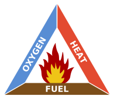
Le triangle du feu : chaleur (énergie d'activation), combustible (carburant, gaz, bois, tissu) et comburant (oxygène de l'air). Chaque type d'extincteur agit sur un côté différent : le CO2 supprime l'oxygène en le remplaçant par un gaz inerte, l'eau et la mousse absorbent la chaleur, et couper l'alimentation en carburant supprime le combustible.
Comment chaque extincteur exploite le triangle :
- Extincteur CO2 : projette du dioxyde de carbone qui chasse l'oxygène autour du foyer. Idéal pour les feux électriques (classe C) et les espaces confinés comme la salle des machines. Attention : risque d'asphyxie dans un local fermé.
- Couper le carburant : fermer la vanne d'alimentation supprime le combustible. C'est pourquoi la première action en cas d'incendie moteur est toujours de couper l'arrivée de carburant.
- Eau / mousse : absorbe la chaleur et refroidit le combustible en dessous de sa température d'inflammation. Efficace sur les feux secs (classe A) mais jamais sur les feux d'hydrocarbures (l'eau projette le carburant enflammé) ni sur les feux électriques (risque d'électrocution).
En salle des machines, couper le carburant et fermer les orifices d'aération attaquent deux côtés du triangle simultanément — c'est pourquoi cette double action est toujours la première priorité.
Les trois classes de feux à bord :
- Classe A (feux secs — bois, tissu) : extincteur eau ou poudre ABC
- Classe B (feux liquides — carburant, huile) : CO2, poudre ABC, mousse
- Classe C (électrique) : CO2 uniquement (pas d'eau ni de mousse)
Types d'extincteurs :
- CO2 : dissout l'oxygène sans résidu. Idéal pour l'électronique et la salle des machines. Efficace en espace confiné. Attention à l'asphyxie dans un carré fermé.
- Poudre ABC : polyvalent, efficace. Laisse un résidu qui abîme tout. Réservé aux urgences graves quand rien d'autre ne fonctionne.
- Extincteur fixe salle des machines : certains bateaux ont un système à déclenchement automatique ou manuel à distance. Fermer l'aération avant de déclencher.
Procédure incendie à bord :
- Couper le gaz et l'alimentation carburant immédiatement — supprimer le combustible.
- Fermer les aérations du compartiment en feu — limiter l'oxygène.
- Si l'incendie est petit (moins d'un seau d'eau) : utiliser l'extincteur approprié.
- Si l'incendie dure plus de 30 secondes malgré les extincteurs : abandonner la lutte, MAYDAY immédiat sur VHF 16, préparer l'abandon du navire.
- Rassembler l'équipage côté sous le vent, loin des flammes, avec les gilets.
Prévention : Vérifier les connexions électriques annuellement. Ne jamais transférer de carburant près d'une flamme. Le gaz (GPL) est plus lourd que l'air et s'accumule dans la cale — ventiler avant de démarrer le moteur si l'odeur de gaz est présente.
Voir concepts/incendie-bord.
Voie d'eau
Une voie d'eau est toute entrée d'eau non voulue à bord. Leur gravité va de l'infiltration mineure à l'envahissement catastrophique.
Détecter une voie d'eau : Alarme bilge, pompe de cale qui cycle fréquemment, placards ou coffres humides en fond de cale, bateau assis plus bas que d'habitude.
Localiser la source : Les zones critiques à inspecter en priorité :
- Vannes de coque (sea cocks) : robinets sous la ligne de flottaison (toilettes, cockpit, moteur)
- Presse-étoupe (stern gland) : le joint autour de l'arbre d'hélice, qui doit goutter légèrement mais pas couler
- Boulons de quille : sur voilier lesté, un choc peut les desserrer
- Tableau arrière et gouvernail : les joints peuvent se dégrader
Boucher une voie d'eau :
- Bouchon de bois conique (wooden plug) : tenir un jeu de bouchons taillés de différents diamètres contre chaque vanne de coque — enfoncer en cas de rupture
- Chiffons compactés tassés dans une ouverture, maintenus par une planche
- Résine époxy sous-marine pour les petites fissures
Pomper : La pompe manuelle peut évacuer 20 à 40 litres par minute. Un trou de 50 mm laisse entrer 600 litres par minute — vous ne pouvez pas pomper plus vite. Si l'ingérance dépasse la capacité de pompage : MAYDAY immédiat, préparer l'abandon.
Voir concepts/voie-eau, concepts/securite-controle-avaries.
Procédure :
- Localiser la source
- Taper au coin (bouchon de fortune en bois, chiffons compactés)
- Pomper la cale
- Si ingérable : MAYDAY immédiat, préparer l'abandon
Échouage
L'échouage (running aground) est fréquent et souvent sans conséquence si on réagit correctement.
Réaction immédiate : Arrêter la propulsion. Évaluer la situation sans panique. Sonder autour du bateau pour comprendre la forme du banc.
Tenter de se dégager :
- Ne pas forcer au moteur en marche avant si le bateau est sur le sable ou la vase — vous risquez d'approfondir le cratère sous la quille.
- Marche arrière douce peut fonctionner si l'échouage est récent et le fond mou.
- Faire gîter le bateau réduit le tirant d'eau : demander à tout l'équipage de se tenir à la même hauteur du côté opposé à la mer, ou utiliser la bôme et le poids des voiles.
- Mouiller une ancre kedge dans la direction des eaux profondes, puis tirer dessus au winch — technique classique pour se déhaler.
- Attendre la marée montante si vous êtes en Atlantique et que l'échouage survient à marée basse (en Méditerranée, cette option n'existe presque pas — 20 cm de différence).
Si vous ne pouvez pas vous dégager seul : Appeler le CROSS (195 en France) ou le VHF 16 pour un remorqueur. Ne pas attendre que la situation empire — le vent et la mer peuvent "enfoncer" le bateau plus profondément.
Gros temps — procédures et tactiques
La mer peut toujours vous surprendre. Voici les tactiques de survie par gros temps :
La cape serrée (heaving-to) : La manœuvre de pause. Barer la foc contre le vent (backed jib), choquer la grand-voile, mettre la barre sous le vent. Le bateau se stabilise à 50–60° du vent, dérivant lentement. Le cockpit est calme, la mer est moins dure. Technique de pause pour manger, réparer, attendre.
Courir devant la tempête (running before storm) : Mettre le vent arrière avec un minimum de voile (tempête à l'artimon ou étai seul), laisser traîner un filin en boucle pour freiner la vitesse et réduire les risques de surf et d'empannage sauvage.
La touée (sea anchor) : Un parachute sous-marin déployé sur l'avant du bateau, maintenant le nez dans les vagues. Technique sécurisée pour les conditions extrêmes — requiert un équipement spécifique.
L'abattée (lying ahull) : Toutes voiles amenées, barre libre. Le bateau se met en travers des vagues. Acceptable dans les houles longues, dangereux dans les vagues courtes et creuses (risque de dessalage).
La règle fondamentale par gros temps : le bateau est plus robuste que vous ne le pensez. Réduire la voilure tôt, ne pas paniquer, et choisir une tactique active plutôt que de subir.
Voir concepts/gros-temps-tactique.
L'abandon de navire est le dernier recours. Un bateau qui flotte est toujours plus visible et plus sûr qu'un radeau de survie. N'abandonnez le bateau que si vous êtes obligés de monter dans le radeau — jamais préventivement si le bateau flotte encore.
Exercice HAM off Yassıca Adaları :
Vitesse au moment de l'exercice : 5 nœuds. En 4 secondes de délai, la "victime" (bouteille) s'est éloignée de ~10 mètres. À 5 nœuds réels (8,5 km/h), un naufragé peut être à 50 mètres en moins d'une minute.
Dans le golfe de Göcek, la visibilité est bonne, la houle est faible — conditions favorables. En Atlantique Nord avec une houle de 3 mètres, ce sera beaucoup plus difficile.
Question 1 : Christelle trébuche et tombe par-dessus bord au large de Kızılada. Quelle est la PREMIÈRE action à effectuer dans les 3 premières secondes ?
- A) Sauter à l'eau immédiatement pour la rejoindre
- B) Appeler "HOMME À LA MER !" et lancer la bouée fer à cheval en gardant le contact visuel
- C) Appeler le CROSS sur VHF 16 pour demander une aide immédiate
Voir la réponse
Réponse : B — Les premières secondes : (1) crier "Homme à la mer !" pour alerter l'équipage, (2) jeter la bouée fer à cheval ou une bouée couronne, (3) désigner quelqu'un pour garder le contact visuel sans le perdre un instant. Ne JAMAIS sauter à l'eau (A) — vous devenez une deuxième victime et l'équipage doit récupérer deux personnes au lieu d'une. L'appel radio (C) vient après la récupération ou si la situation dépasse vos capacités.Question 2 : Un incendie est détecté dans le compartiment moteur du Deniz Rüzgarı. Dans quel ordre agissez-vous ?
- A) 1. Extincteur, 2. Couper le carburant, 3. Évacuer le cockpit
- B) 1. Couper moteur et alimentation carburant, 2. Fermer les orifices d'air, 3. Extincteur ou CO2 fixe
- C) 1. Appeler le CROSS, 2. Couper le carburant, 3. Extincteur
Voir la réponse
Réponse : B — Séquence incendie en salle des machines : (1) couper le moteur et l'alimentation en carburant (priver le feu de combustible), (2) fermer les trappes et ouïes d'aération (priver le feu d'oxygène), (3) utiliser l'extincteur ou le système CO2 fixe SANS ouvrir le compartiment si possible (rouvrir alimente le feu). L'appel radio (C) se fait en parallèle mais n'est pas la première priorité.Question 3 : Le Deniz Rüzgarı a une voie d'eau dans l'avant de la coque. Mehmet indique une pompe de cale qui débite 30 litres par minute. L'eau entre à 50 litres par minute. Quelle est la bonne décision ?
- A) Pomper à fond — la pompe peut ralentir la progression
- B) Boucher la voie d'eau avec tous les moyens disponibles (coussins, étoupe, coins) PENDANT que quelqu'un pompe
- C) Abandonner immédiatement le bateau — la pompe ne peut pas gérer l'entrée d'eau
Voir la réponse
Réponse : B — La pompe de cale est utile mais ici insuffisante (déficit de 20 L/min). La priorité est de réduire l'entrée d'eau par colmatage d'urgence (coussins, serviettes, coin de bois, matelas) pour que la pompe puisse faire face. L'abandon (C) n'est envisageable qu'en dernier recours, quand le bateau ne peut plus être sauvé.Question 4 : Quelqu'un à bord souffre de symptômes graves : douleur thoracique irradiant dans le bras gauche, transpiration, pâleur. Quelle est la procédure d'urgence médicale à distance ?
- A) Appeler le CROSS sur VHF 16 et demander une coordination SMUR hélitreuillage
- B) Administrer de l'aspirine et allonger la personne — attendre l'arrivée au port
- C) Appeler le 15 (SAMU) par téléphone mobile — le VHF n'est pas adapté aux urgences médicales
Voir la réponse
Réponse : A — En mer, l'urgence médicale se gère via le CROSS sur VHF 16 (canal de détresse) : le CROSS coordonne le médecin régulateur et les secours (hélicoptère, vedette SNSM). En haute mer, le service TMAS (Télémedical Assistance Service) offre une consultation médicale à distance. Le SAMU (C) peut être appelé si la couverture mobile est disponible, mais le VHF est le canal principal en mer.La nuit à Kızılada est étrange — un voile de brume arrive vers 21h, réduisant la visibilité à 400 mètres. Les feux des autres bateaux sont flous. La Coupe du Monde est en quart de finale sur le téléphone d'Emmanuel — mais il éteint l'écran et préfère écouter Mehmet qui explique calmement les règles de navigation par visibilité réduite.
Session 5.4 — Visibilité Réduite et Navigation Nocturne.
Visibilité Réduite — Brouillard et Navigation Nocturne
Lundi soir, 21h00. Ancré à Kızılada.
La brume arrive sans prévenir. En dix minutes, la visibilité passe de 5 milles à moins d'un demi-mille. Les feux des bateaux voisins sont des taches floues. On entend un moteur de quelque part — mais de quelle direction ?
"Qu'est-ce qu'on fait ?" demande Rebecca, légèrement inquiète pour la première fois du voyage.
"On est à l'ancre. On n'est pas obligés de faire quelque chose. Mais on doit allumer notre feu de mouillage, et si un bateau s'approche trop, on envoie le signal sonore. Et on fait la veille."
La brume en Méditerranée en été est rare. Mais pas impossible. Et dans le Manche ou l'Atlantique, c'est une réalité quotidienne.
Navigation en visibilité réduite
La règle 19 du RIPAM (Conduite des navires par visibilité réduite) s'applique dès que la visibilité est diminuée par brouillard, brume, pluie dense, chasse-neige, grains ou toute cause analogue — qu'il fasse nuit ou non. C'est l'une des règles les plus importantes car elle change fondamentalement votre comportement.
Les cinq obligations de la Règle 19 :
-
Vitesse de sécurité : vous devez pouvoir stopper votre bateau dans la moitié de la distance visible. En pratique, au ralenti moteur pour la plupart des bateaux côtiers. Cette vitesse n'est pas prescrite en nœuds — elle dépend de vos conditions de manœuvre, de votre équipement radar, et de la fréquence du trafic local.
-
Radar en veille permanente (si disponible) : obligation d'utiliser le radar et de tracer les contacts pour détecter les navires approchants. Un contact radar qui semble en route de collision vous oblige à agir même si vous ne le voyez pas.
-
Veille auditive renforcée : couper la musique et les équipements bruyants. Mettre le moteur au ralenti périodiquement pour écouter les cornes de brume environnantes. Assigner un équipier à l'avant du bateau, loin du bruit moteur.
-
Préparer l'ancre : en eau peu profonde, s'ancrer peut être plus sûr que de continuer à naviguer. Mouillez plutôt que de continuer dans un chenal fréquenté sans visibilité.
-
Émettre les signaux sonores réglementaires : obligation légale, et signal de votre présence pour les autres navires.
Règle pratique : Si vous entendez une corne de brume devant vous et que vous ne pouvez pas estimer sa distance — stoppez. C'est toujours la bonne décision.
Voir concepts/brouillard-navigation, concepts/colreg-visibilite-reduite.
Signaux sonores de brouillard
Ces signaux ont deux fonctions : indiquer votre présence aux autres navires et communiquer votre état (en route, stoppé, au mouillage). Ils ne donnent pas de direction précise — mais leur répétition aide à estimer la position relative.
| Situation | Signal | Intervalle |
|---|---|---|
| En route sous moteur | 1 son long | ≤ 2 min |
| En route sous voile | 1 son long + 2 sons brefs | ≤ 2 min |
| Au mouillage (< 100m) | Cloche agitée ~5s | ≤ 1 min |
| Échoué | 3 coups de cloche + 5 coups rapides | ≤ 1 min |
Aide-mémoire des signaux sonores de brume :
─ = son long (≥ 4 secondes) · = son bref ♪ = cloche
MOTEUR en route : ─ (toutes les ≤ 2 min)
VOILIER en route : ─ · · (toutes les ≤ 2 min)
NUC / CMR / pêche : ─ · · (toutes les ≤ 2 min)
AU MOUILLAGE : ♪♪♪♪♪ (cloche ~5s, toutes les ≤ 1 min)
ÉCHOUÉ : ♪♪♪ · · · · · (3 coups cloche + 5 rapides)
En Méditerranée, le brouillard est rare en été. En Manche et en Atlantique, ces signaux peuvent être votre seul moyen de détecter un navire à 200 mètres. Apprenez-les par cœur — à l'examen, ils reviennent systématiquement.
Un navire en route sous moteur émet 1 son long (4 secondes minimum) au moins toutes les 2 minutes. Vous devez l'émettre même si vous pensez être seul — dans le brouillard, on ne sait jamais.
Un voilier sous voiles seules émet 1 son long + 2 sons brefs : c'est le signal qui distingue le voilier du bateau à moteur dans l'obscurité sonore du brouillard.
Au mouillage, agitez la cloche pendant 5 secondes au moins toutes les minutes. Ce son grave et métallique est distinctif et se porte bien dans le brouillard. Si un bateau s'approche trop, ajoutez les 5 sons brefs de danger.
Un navire échoué émet les 3 coups de cloche pour signaler son immobilité — c'est à la fois un signal de mouillage et un avertissement de danger pour les autres navires.
Équipements radar et AIS
Radar actif : Vous émettez des ondes radio et recevez les échos renvoyés par les obstacles. La portée nominale est de 12–48 milles selon la puissance, mais la portée effective sur un voilier de faible franc-bord est souvent 8–15 milles pour les gros navires. L'ARPA (Automatic Radar Plotting Aid) trace automatiquement les vecteurs de mouvement de chaque contact radar et calcule le CPA (Closest Point of Approach) — la distance minimale prévisible. Si le CPA est inférieur à votre seuil d'alarme, alerte sonore.
Réflecteur radar : Un réflecteur passif hissé au mât amplifie votre écho radar sur les écrans des autres navires. Essentiel pour un bateau en fibre de verre (mauvais réflecteur naturel). Hissez-le en entrant dans le brouillard.
AIS (Automatic Identification System) : Votre transpondeur AIS de Classe B émet en permanence votre MMSI, position, SOG et COG sur VHF. Tout navire équipé d'un récepteur AIS dans un rayon de 5–15 milles vous voit sur son chartplotter avec un vecteur de mouvement. Corollaire : si un pétrolier vous semble approcher, regardez si vous êtes sur son AIS. L'AIS ne remplace pas le radar — certains petits bateaux ou épaves n'émettent pas d'AIS. Mais en présence de trafic commercial, c'est votre meilleure protection.
SART (Search And Rescue Transponder) : Répond aux émissions radar standard en générant une trace de 12 points sur l'écran radar du chercheur, dans un rayon de 5–10 milles. Utile pour se faire trouver par un hélicoptère de secours ou un garde-côte équipé radar.
Comparaison des systèmes de détection :
| Système | Type | Portée | Détecte quoi | Limitation |
|---|---|---|---|---|
| Radar actif | Émission/réception | 8–48 NM | Tout obstacle solide | Coûteux, énergie |
| Réflecteur radar | Passif | — | Amplifie votre écho | Ne détecte rien seul |
| AIS Classe B | Transpondeur | 5–15 NM | Navires équipés AIS | Invisibles : épaves, kayaks |
| SART | Répondeur détresse | 5–10 NM | Signal aux sauveteurs | Usage d'urgence uniquement |
Aucun système n'est suffisant seul. Le radar détecte les épaves sans AIS ; l'AIS identifie les navires commerciaux invisibles au radar d'un petit voilier. Le réflecteur radar est votre assurance passive : hissez-le en tête de mât dès que la visibilité diminue.
Navigation nocturne
La nuit n'est pas le brouillard — la visibilité peut être excellente. Ce qui change, c'est la façon dont vous percevez les informations.
Identifier les navires par leurs feux
De nuit, les feux de navigation sont votre seul moyen d'identifier le type de navire que vous croisez et de déterminer sa direction de route. Le schéma ci-dessous montre la configuration typique des feux visibles sur un navire en route :
Configuration des feux de navigation : feu de tête de mât (blanc, 225°, visible de l'avant), feu de côté tribord (vert, 112,5°), feu de côté bâbord (rouge, 112,5°), feu de poupe (blanc, 135°, visible de l'arrière). La combinaison de feux visibles vous indique instantanément si le navire vient vers vous, s'éloigne, ou croise votre route.
Comment "lire" les feux d'un navire la nuit :
- Vous voyez rouge + vert + blanc (tête de mât) : le navire vient droit sur vous — risque de collision. Manœuvrez immédiatement selon les règles de barre.
- Vous voyez uniquement le feu vert : vous voyez son flanc tribord — il croise de droite à gauche devant vous. Vous êtes probablement le navire privilégié.
- Vous voyez uniquement le feu rouge : vous voyez son flanc bâbord — il croise de gauche à droite. Vous êtes probablement le navire non privilégié et devez manœuvrer.
- Vous voyez uniquement un feu blanc : c'est son feu de poupe — il s'éloigne de vous ou vous le rattrapez.
- Deux feux de tête de mât blancs verticaux : navire à propulsion mécanique de plus de 50 mètres. Plus le navire est grand, plus les feux de mât sont espacés verticalement.
Les feux de navigation sont traités en détail dans la session 1.3 (Feux et Signaux). En navigation nocturne, la capacité à identifier instantanément les feux est une compétence de survie — entrainez-vous avec des photos et des quizz avant de naviguer de nuit.
La vision nocturne : La rétine comporte deux types de cellules : les cônes (couleur, détail fin — actifs en pleine lumière) et les bâtonnets (nuances de gris, faible lumière). Les bâtonnets sont environ 1000× plus sensibles que les cônes, mais ils s'adaptent lentement à l'obscurité — 20 à 30 minutes pour une adaptation complète.
La règle d'or : une seule exposition à une lumière blanche brillante détruit l'adaptation. Il faut recommencer l'adaptation de zéro. Pour préserver la vision nocturne du cockpit : éclairage rouge pour les instruments et le chartplotter (les bâtonnets sont peu sensibles au rouge), lampe-torche rouge, boucliers sur toutes les lumières blanches du cockpit.
Ce que vous voyez la nuit en mer :
- Feux de navigation de l'eau (apprenez à les lire — voir Session 1.3)
- Phares et secteurs lumineux (voir Session 2.3) — souvent plus utiles la nuit que le jour
- La luminescence de la houle contre les rochers — signal d'alarme précieux par temps clair de lune
Routine de veille nocturne :
- Regarder régulièrement l'horizon complet (360° au moins toutes les 10 minutes)
- Balayer les secteurs avant, côtés, arrière
- Utiliser la vision périphérique plutôt que la vision directe pour détecter les faibles lumières — les bâtonnets sont absents au centre de la rétine (tache aveugle nocturne)
Secteurs de phares — navigation nocturne côtière
Les phares sectoriels sont particulièrement précieux la nuit car ils permettent de naviguer dans un chenal avec une précision meilleure que le GPS dans certains cas.
La technique : En approchant d'un port de nuit, identifiez à l'avance les phares sectoriels de l'entrée dans la carte. Notez les secteurs et leurs limites angulaires. Approchez en maintenant le feu de secteur blanc — vous êtes dans l'axe du chenal.
Si vous passez en rouge : vous êtes trop à bâbord (danger). Abattez vers tribord jusqu'à retrouver le blanc. Si vous passez en vert : vous êtes trop à tribord (danger). Lofiez vers bâbord jusqu'à retrouver le blanc.
Cette technique ne demande aucun instrument et fonctionne même si le GPS est en panne. Elle est d'une précision remarquable et c'est ce que les marins utilisaient avant le GPS.
La nuit, les phares sectoriels (blanc/rouge/vert) guident les approches côtières avec une précision étonnante. C'est souvent plus précis que le GPS pour une entrée de port.
Brouillard à Kızılada (rare mais pédagogique) :
Mouillé à l'ancre, vous appliquez : feu de mouillage allumé (blanc tout-horizon). Cloche disponible. Veille sonore active.
Un bruit de moteur s'approche de tribord. Visibilité 300m. Vous ne voyez rien. Correct à faire : cinq sons brefs (signal d'alarme, doute sur l'action d'un autre navire). Puis VHF 16 : appel "Bateau approchant de [position], ici [nom du bateau], veuillez vous identifier."
Pour information : En Méditerranée orientale, le brouillard en juillet est rare. En Bretagne ou en Manche, il peut durer plusieurs jours consécutifs. Apprenez ces règles pour les côtes françaises.
Question 1 : Le Deniz Rüzgarı navigue sous moteur par brouillard dense. Quel signal sonore doit-il émettre ?
- A) Deux sons brefs toutes les 2 minutes — signal de navire en route sous voiles
- B) Un son long toutes les 2 minutes maximum — signal de navire à propulsion mécanique en route
- C) Cinq sons brefs dès qu'un autre navire est entendu — signal d'avertissement de danger
Voir la réponse
Réponse : B — Règle 35 du RIPAM : navire à propulsion mécanique faisant route en visibilité réduite = 1 son long (4 secondes ou plus) à intervalles ≤ 2 minutes. Deux sons brefs = navire sous voiles ou contraint dans sa manœuvre. Cinq sons brefs = signal d'incompréhension ou de danger immédiat (en vue d'un autre navire, pas en visibilité réduite).Question 2 : Par brouillard, vous entendez un signal sonore : 1 son long suivi de 2 sons brefs, répété à intervalles réguliers. Quel type de navire vous signale sa présence ?
- A) Un navire à propulsion mécanique en route
- B) Un navire au mouillage (sonnerie de cloche)
- C) Un navire en route sous voiles, ou un navire contraint dans sa manœuvre
Voir la réponse
Réponse : C — Règle 35 : 1 son long + 2 sons brefs = navire sous voiles, navire manœuvrant avec difficulté, navire contraint dans sa route, navire en train de pêcher, navire remorqueur. Ce signal alerte les autres navires sur une situation de manœuvrabilité limitée. Le navire au mouillage utilise une cloche (et gong pour les navires > 100m).Question 3 : Par brouillard épais au large de Kızılada, William doit réduire la vitesse. Quelle est la règle générale à ce sujet ?
- A) Réduire à la moitié de la vitesse normale — règle des 50%
- B) Naviguer à "vitesse de sécurité" permettant de s'arrêter avant tout obstacle détecté
- C) Stopper complètement et jeter l'ancre jusqu'à la levée du brouillard
Voir la réponse
Réponse : B — La règle 6 du RIPAM : "vitesse de sécurité" — aucun chiffre fixe n'est imposé, mais la vitesse doit permettre de stopper avant de heurter un obstacle détecté (visuellement, au radar ou acoustiquement). Les facteurs : visibilité actuelle, densité du trafic, manœuvrabilité du navire, état de la mer. S'arrêter (C) peut créer un danger si d'autres navires arrivent.Question 4 : Vous naviguez au radar par visibilité réduite et détectez un écho devant vous à 1 NM, sans mouvement apparent du relèvement. Que faites-vous ?
- A) Maintenez votre route — l'écho immobile indique un navire au mouillage
- B) Risque d'abordage — appliquez les règles de barre, réduisez la vitesse
- C) Vérifiez la calibration du radar — un écho immobile est un signe d'erreur d'instrument
Voir la réponse
Réponse : B — Un écho dont le relèvement reste constant pendant que la distance diminue = trajectoires convergentes = risque d'abordage. Cette règle s'applique autant par radar que par observation visuelle. Un navire vraiment au mouillage aurait un écho stable ET une distance stable. Réduisez la vitesse et préparez une manœuvre d'évitement.Mardi matin, jour 9. Dernière longue navigation de la semaine : retour vers Fethiye. Avant de partir, William doit contacter la capitainerie. Il décroche le VHF. "MAYDAY ou... canal 16 ?"
Session 6.1 — VHF et Procédures Radio : MAYDAY, PAN PAN, canal 16.
VHF Marine — MAYDAY, PAN PAN et Canal 16
Mardi matin, 8h45. À bord, avant l'appareillage pour Fethiye.
William décroche le combiné VHF. Canal 16. Il hésite.
"Je veux appeler la capitainerie de Fethiye pour confirmer notre poste à quai. Quel canal ?"
Mehmet : "Canal 16, c'est le canal de veille et d'appel. Tu les appelles sur le 16, ils te disent de passer sur un canal de travail — souvent le 9, 11, ou 12 ici en Turquie."
William appuie sur le micro. Sa main tremble légèrement. Derrière lui, Emmanuel observe — silencieux, pour une fois. Rebecca est dans la descente, à portée d'oreille. Premier appel radio officiel.
"Fethiye Liman, Fethiye Liman, ici voilier Deniz Rüzgarı, à l'écoute sur le seize, terminé."
Grésillements. Puis une voix turque accueillante : "Deniz Rüzgarı, passez sur le canal onze." William pousse un long soupir. Emmanuel lui tape sur l'épaule.
Le VHF maritime — fonctionnement
Le VHF maritime (Very High Frequency, 156–174 MHz) est le moyen de communication principal en navigation côtière. Sa portée est de l'ordre de 20–40 milles entre deux bateaux, et plus grande vers les stations côtières en hauteur.
Principe de propagation : Le VHF se propage en ligne droite (ligne de visée). La portée dépend de la hauteur des antennes — une antenne montée en tête de mât à 15 m offre une portée de 20–25 milles vers une station côtière en hauteur, et 10–15 milles vers un autre bateau à flottaison. Les obstacles (collines, falaises) coupent la propagation.
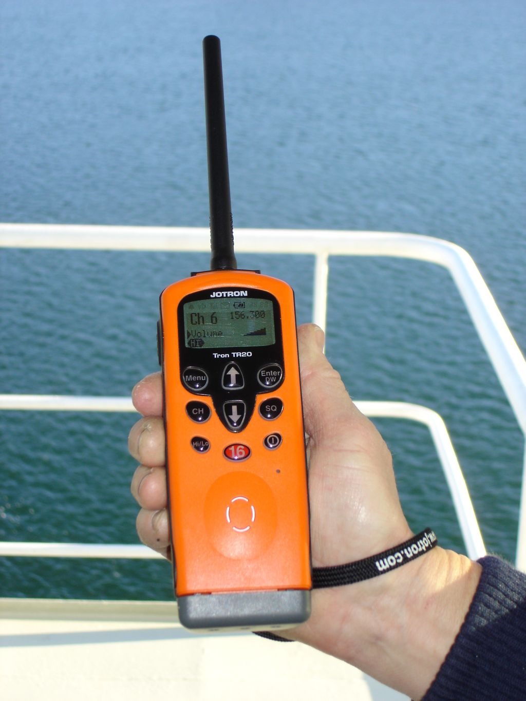
Un VHF portatif maritime (5–6 W) : compact, étanche, autonome sur batterie. C'est l'équipement à emporter dans le gilet de sauvetage en cas d'abandon du navire. Sa portée réduite (5–10 NM) en fait un complément du VHF fixe, pas un remplacement — mais en radeau de survie, c'est votre seul lien radio avec les secours.
Puissance :
- VHF fixe (25W) : portée maximale, antenne déportée en hauteur, DSC intégré. L'équipement de référence pour la navigation en mer.
- VHF portatif (5–6W) : portée 5–10 milles. Portable sur soi, résistant à l'eau, indispensable comme backup ou pour communiquer depuis l'annexe. En cas d'abandon du navire, emportez le portatif dans le gilet.
Pourquoi 25W vs 5W compte en détresse : Si votre bateau est en train de couler et que vous utilisez le VHF fixe, vous portez à 30 milles. Avec le portatif seul dans l'eau, vous portez à 5 milles. Toujours utiliser le fixe pour le MAYDAY initial.
Le DSC (Digital Selective Calling / ASN) : Fonctionnalité de votre VHF fixe qui envoie automatiquement un message numérique structuré sur la voie 70 : votre MMSI, votre position GPS (si le VHF est couplé au GPS), et la nature de la détresse. Ce message est reçu simultanément par toutes les stations VHF DSC à portée. Les secours savent qui vous êtes et où vous êtes en quelques secondes, sans que vous ayez à parler.
Le MMSI (Maritime Mobile Service Identity) : numéro à 9 chiffres qui identifie votre bateau de façon unique dans le monde. Il est enregistré auprès de l'ANFR (France) et lié aux données de votre bateau (nom, port d'attache, coordonnées du propriétaire). Sans MMSI enregistré, une alerte DSC génère une fausse alarme sans information utile.
Voir concepts/canaux-vhf, concepts/mmsi.
Équipements :
- VHF fixe : plus puissant (25W), antenne haute, DSC intégré
- VHF portatif : 5–6W, autonome, à avoir en cas d'urgence
Les canaux principaux
Le canal 16 est le canal universel de détresse et d'appel. Toute radio maritime doit y maintenir une veille permanente. On appelle sur le 16 pour initier tout contact, puis on bascule immédiatement sur un canal de travail pour la conversation. Le canal 16 doit rester libre pour les appels de détresse.
Le canal 70 est UNIQUEMENT pour les données DSC — les signaux numériques automatiques. Ne jamais émettre vocalement dessus. C'est une infraction et cela brouille les alertes de détresse automatiques.
| Canal | Usage |
|---|---|
| 16 | Veille obligatoire, appels d'urgence, appels initiaux |
| 9 | Canal de travail plaisance (France) |
| 67 | Canal SAR (France) |
| 70 | DSC (Appel Sélectif Numérique — données uniquement, ne pas vocaliser) |
| 12, 14 | Ports (VTS) |
| 68–72, 77 | Canaux de travail plaisance |
En Turquie, les canaux de travail des ports varient : Fethiye utilise le canal 12 pour le VTS. En France, après l'appel sur le 16, le canal 9 est le plus courant pour la plaisance.
Procédures radio — le bon langage
La discipline radio évite les confusions dans des situations où la clarté peut sauver des vies.
Voir concepts/alphabet-oaci.
Alphabet phonétique OACI : Alpha, Bravo, Charlie, Delta, Echo, Foxtrot, Golf, Hotel, India, Juliet, Kilo, Lima, Mike, November, Oscar, Papa, Quebec, Romeo, Sierra, Tango, Uniform, Victor, Whiskey, X-ray, Yankee, Zulu.
Le Code International de Signaux — les pavillons
Bien avant la radio, les navires communiquaient par pavillons. Le Code International de Signaux (CIS) attribue à chacune des 26 lettres de l'alphabet un pavillon de forme et de couleur distinctes, chacun portant une signification propre lorsqu'il est hissé seul. Plusieurs de ces pavillons sont des questions récurrentes à l'examen du permis côtier :

Les 26 pavillons du Code International de Signaux. Chaque pavillon, hissé seul, transmet un message standardisé compris par tous les navigateurs du monde, quelle que soit leur langue.
Les pavillons essentiels pour l'examen :

Le pavillon Alpha (blanc et bleu, à deux pointes) signifie : "J'ai un plongeur en immersion — tenez-vous à distance et passez à vitesse réduite." Vous le verrez hissé sur les bateaux de plongée et les clubs de plongée côtiers. Obligation de passer à distance et à vitesse réduite (moins de 3 nœuds dans un rayon de 100 mètres).
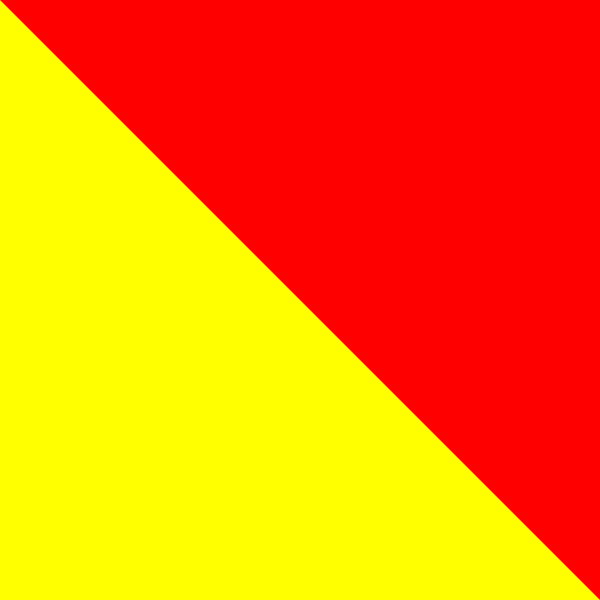
Le pavillon Oscar (jaune et rouge, divisé en diagonale) signifie : "Homme à la mer." Hissé pour alerter visuellement les navires environnants qu'une personne est tombée à l'eau et qu'une opération de récupération est en cours. Il complète l'alerte radio.
Autres pavillons fréquents à l'examen :
- Bravo (rouge) : "Je charge ou décharge des matières dangereuses" — restez à distance.
- November-Charlie (N+C hissés ensemble) : signal de détresse visuel — "Je suis en détresse et j'ai besoin d'assistance immédiate." C'est l'un des signaux de détresse reconnus par le RIPAM.
- Quebec (jaune) : "Mon navire est indemne et je demande la libre pratique" — utilisé à l'entrée d'un port étranger pour les formalités sanitaires.
- Hotel (blanc et rouge, divisé verticalement) : "J'ai un pilote à bord."
Quand épeler : Toujours pour les noms propres, immatriculations, MMSI. Utiles pour les lettres ambiguës en radio : B (Bravo, pas Sierra), D (Delta, pas Tango), M (Mike, pas November), P (Papa, pas Bravo).
Lettres les plus confondues en radio — aide-mémoire :
| Lettre | Code phonétique | Confusion fréquente | Astuce |
|---|---|---|---|
| B | Bravo | vs D (Delta), P (Papa) | « Bravo ! » → applaudissement |
| D | Delta | vs B (Bravo), T (Tango) | Triangle du Nil |
| M | Mike | vs N (November) | Prénom court |
| N | November | vs M (Mike) | Mois long |
| P | Papa | vs B (Bravo) | Famille |
| S | Sierra | vs F (Foxtrot) | Montagne |
L'alphabet phonétique OACI/NATO a été conçu en 1957 pour maximiser la distinction acoustique entre lettres — chaque mot a été testé dans des dizaines d'accents. En mer, avec du bruit moteur et des grésillements radio, ces mots sont votre seule garantie d'être compris.
Terminologie standard :
- "Ici" / "De" = identification de l'émetteur
- "À" = identification du destinataire
- "Terminé" / "À vous" = fin de transmission, réponse attendue
- "Reçu" = message bien reçu, pas de réponse nécessaire
- "Bien reçu cinq sur cinq" = réception excellente
- "Silence" = mot d'ordre du CROSS pour dégager le canal 16 pendant les opérations SAR — toutes les stations cessent immédiatement d'émettre
- "Silence Fini" = le CROSS annonce la fin de l'opération, le trafic normal peut reprendre
Format d'un appel standard :
[Destinataire], [Destinataire]
Ici [Votre nom], [Votre nom]
Terminé
Réponse attendue :
[Votre nom]
Ici [Destinataire]
Canal [X]
MAYDAY — détresse grave
MAYDAY s'utilise en cas de danger grave et imminent pour le navire ou les personnes : naufrage en cours, incendie incontrôlable, blessé grave qui engage le pronostic vital, homme à la mer non récupéré.
Le mot "MAYDAY" vient du français "m'aidez" — il est reconnu dans toutes les langues maritimes.
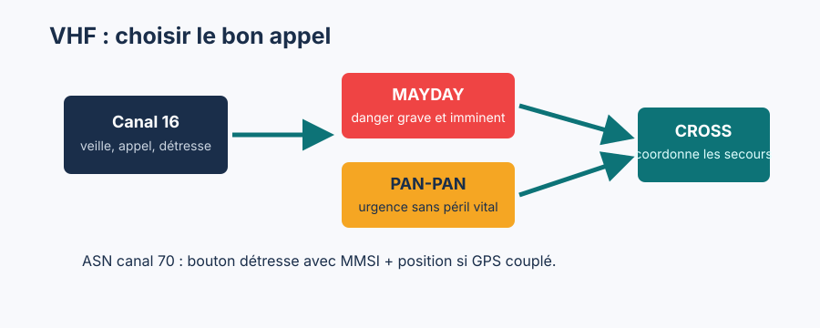
Procedure DSC d'abord (si disponible) :
- Ouvrir le capot rouge, appuyer ≥ 5 secondes → l'alerte numérique part automatiquement sur le canal 70 avec MMSI + position GPS.
- La VHF passe automatiquement sur le canal 16 pour le message vocal.
Structure du message vocal MAYDAY :
MAYDAY MAYDAY MAYDAY
Ici [nom du bateau] [MMSI]
MAYDAY [nom du bateau]
Position : [lat/lon ou relèvement depuis un amer connu]
Nature du problème : [incendie/voie d'eau/etc.]
Type d'assistance requise : [remorquage/évacuation médicale/etc.]
Nombre de personnes à bord : [N]
Informations utiles : [couleur de la coque, type de bateau]
Terminé
Exemple complet :
MAYDAY MAYDAY MAYDAY
Ici voilier Deniz Rüzgarı, MMSI 271XXXXXX
MAYDAY Deniz Rüzgarı
Position : 36°43'N 29°02'E, 4 milles à l'ouest de Göcek
Incendie dans la salle des machines incontrôlable
Demandons assistance immédiate
4 personnes à bord
Voilier bois, coque blanche, 13 mètres
Terminé
Relay MAYDAY : Si vous captez un MAYDAY sans réponse : retransmettez en préfixant par "MAYDAY RELAY, MAYDAY RELAY, MAYDAY RELAY, à tous, ici [votre nom]..." suivi du message original.
Voir concepts/procedure-mayday.
PAN PAN — urgence non-mortelle
PAN PAN s'utilise pour une urgence sérieuse qui n'est pas encore une menace vitale immédiate : blessé qui nécessite des soins médicaux, homme à la mer récupéré mais inconscient, panne moteur avec dérive vers un danger dans les prochaines heures, avarie sérieuse sans naufrage imminent.
PAN PAN s'utilise pour une urgence moins grave mais nécessitant une assistance : blessé non vital, panne moteur en dérive vers un danger, bateau en difficulté sans risque immédiat.
Format similaire au MAYDAY : PAN PAN × 3, puis les mêmes éléments (identification, position, nature, assistance requise). L'appel se fait sur le canal 16.
Annulation : Quand l'assistance arrive ou que la situation se résout, annoncez sur le canal 16 : "À tous, ici [nom], annulation de mon PAN PAN de [heure UTC], tout est en ordre."
Voir concepts/procedure-pan-pan.
SÉCURITÉ — avis de navigation
SÉCURITÉ est le préfixe pour les informations urgentes concernant la navigation ou la météo. Ce n'est pas un appel de détresse — c'est une information importante pour tous les navires dans le secteur.
Utilisé par :
- Le CROSS pour diffuser les bulletins météo spéciaux (BMS)
- Les navires qui signalent un danger flottant, une épave, une zone à éviter
- Les capitaineries pour les avis aux navigateurs urgents
Format : "Sécurité, Sécurité, Sécurité, à tous..." puis l'information.
Voir concepts/procedure-securite.
DSC — Appel Sélectif Numérique
Le DSC transforme votre VHF en système de détresse automatique. En cas d'urgence, vous n'avez pas à trouver les mots — un seul geste suffit.
Comment fonctionne une alerte de détresse DSC :
- Appuyer ≥ 5 secondes sur le bouton rouge sous le capot protecteur
- Votre VHF transmet automatiquement 5 fois sur le canal 70 : MMSI + position GPS (si couplée) + nature de la détresse
- L'alerte se renouvelle toutes les 4 minutes jusqu'à accusé de réception
- La VHF passe automatiquement sur le canal 16 pour le message vocal
- Les stations côtières et navires DSC dans un rayon de 20–40 milles reçoivent l'alerte avec votre position
Ce que les secours voient : Votre MMSI → leur permet d'accéder immédiatement à la fiche de votre navire (nom, port, description, contacts d'urgence). Votre position GPS → ils savent où envoyer les secours avant même de vous avoir parlé.
Programmation préalable obligatoire : Le MMSI doit être programmé à l'avance dans la VHF par un professionnel. Une VHF DSC sans MMSI programmé ne peut pas envoyer d'alerte de détresse correcte. Priorité à faire avant de prendre la mer.
Fausse alerte : Annulez immédiatement sur le canal 70 (ASN) si votre VHF le permet, puis sur le canal 16 verbalement.
Voir concepts/asn-dsc, concepts/mmsi.
Contact avec les Gardes-Côtes turcs (Sahil Güvenlik) :
En Turquie, la veille du canal 16 est assurée par la Sahil Güvenlik (Garde Côtière turque). La procédure est identique aux COLREGs/SOLAS — même langage international.
En entrant dans les ports turcs, certains requièrent un appel VHF préalable (Port Fethiye : canal 12 pour le VTS).
Si vous avez un MMSI turc (ou français avec inscription ANFR), le DSC fonctionne également en eaux turques.
Question 1 : William doit émettre un MAYDAY depuis le Deniz Rüzgarı. Dans quel ordre dit-il les éléments ?
- A) Position, puis "MAYDAY", puis le nom du bateau
- B) "MAYDAY MAYDAY MAYDAY", puis nom du bateau, puis position et nature du problème
- C) Nom du bateau, puis "MAYDAY", puis le canal de contact
Voir la réponse
Réponse : B — Procédure MAYDAY réglementaire : (1) "MAYDAY MAYDAY MAYDAY" — 3 fois, (2) "Ici le Deniz Rüzgarı, Deniz Rüzgarı, Deniz Rüzgarı" — 3 fois, (3) "MAYDAY Deniz Rüzgarı" — 1 fois, (4) Position, (5) Nature du problème, (6) Nombre de personnes à bord, (7) Toute autre information utile. La triple répétition de MAYDAY alerte immédiatement tous les auditeurs.Question 2 : Le Deniz Rüzgarı est en panne moteur à 3 milles des rochers de Kızılada, sans vent, dérivant à 1 nœud vers les rochers (ETA impact 40 minutes). Quel appel radio est approprié ?
- A) MAYDAY — naufrage imminent dans 40 minutes
- B) PAN PAN — urgence sérieuse mais le danger n'est pas encore certain
- C) Appel de routine sur canal 67 au port de Göcek
Voir la réponse
Réponse : A — Avec un impact dans 40 minutes sans possibilité de manœuvre, le danger est grave et imminent — c'est un MAYDAY. Si la dérive était vers la plage ouverte et que le danger était incertain (B), PAN PAN serait adapté. Un appel ordinaire (C) est inapproprié pour toute situation d'urgence.Question 3 : Après un appel MAYDAY, le CROSS (Centre Régional Opérationnel de Surveillance et de Sauvetage) accuse réception. Que répondez-vous ?
- A) Remerciez et raccrochez — le CROSS prend en charge
- B) Confirmez que le MAYDAY est bien reçu, répétez votre position et l'état de votre équipage
- C) Passez sur le canal 67 pour libérer le canal 16 pour d'autres urgences
Voir la réponse
Réponse : B — Après l'accusé de réception du CROSS, vous confirmez la réception, répétez votre position si elle a changé, et donnez l'état de l'équipage (blessés, personnes à l'eau…). Restez sur le canal 16 sauf instruction contraire du CROSS. Ne raccrochez jamais sans instruction — le CROSS peut vous guider jusqu'aux secours.Question 4 : Emmanuel entend un MAYDAY sur canal 16 mais le CROSS ne répond pas. Quelle est la procédure à suivre pour les navires qui reçoivent ce MAYDAY ?
- A) Rester en écoute passive — le CROSS répondra dès qu'il sera disponible
- B) Tenter de répondre au MAYDAY et relayer l'alerte vers le CROSS si nécessaire
- C) Changer de canal pour ne pas saturer le 16 avec des réponses multiples
Voir la réponse
Réponse : B — Si le CROSS ne répond pas dans un délai raisonnable, tout navire entendant un MAYDAY a l'obligation de répondre et d'alerter les secours. La procédure "MAYDAY RELAY" permet de retransmettre un MAYDAY reçu d'un navire en détresse vers le CROSS. La solidarité en mer est une obligation légale et éthique.À Fethiye, ils amarrent au quai de la douane. L'officier monte à bord pour vérifier les papiers. Il y a le "Carnet de Navigation" (le Transit Log en Turquie), le livre de bord, les licences radio. Tout est en ordre. Il signe, tamponne, sourit. Quand il repart, Emmanuel dit : "Donc même en vacances, la paperasse nous suit." Rebecca : "En Martinique, le gendarme maritime venait à bord avec un café." Emmanuel, amusé. "Et pour naviguer en France ?" demande-t-il. "Quels papiers faut-il ?"
Session 6.2 — Documents, Licence et Réglementation.
Documents, Licence et Réglementation
Mardi après-midi, quai de la douane, Fethiye.
L'officier douanier turc est aimable mais méticuleux. Il vérifie chaque document. Le Transit Log turc (obligation pour les bateaux étrangers navigant en eaux turques), le passeport de chaque passager, la licence radio, le titre de propriété du bateau ou le contrat de charter.
Tout est en ordre. Il signe, tamponne, sourit.
Quand il repart, Emmanuel dit : "Donc même en vacances, la paperasse nous suit." Rebecca : "En Martinique, c'est beaucoup plus détendu — le gendarme vérifie juste les passeports." William : "Les documents, c'est aussi la sécurité. Le transit log, c'est ce qui permet aux secours de savoir qu'on est dans le coin si on disparaît." Christelle approuve silencieusement.
Les documents obligatoires du bateau
En France, un bateau de plaisance doit avoir à bord un ensemble de documents qui prouvent son identité légale, la qualification du conducteur, et la conformité aux règles de sécurité. Ces documents sont vérifiés par la Gendarmerie Maritime, les Affaires Maritimes, et les Douanes.
| Document | Obligatoire pour |
|---|---|
| Acte de francisation | Bateau > 7m ou moteur > 22 kW |
| Titre de navigation | Bateau inscrit dans un registre |
| Assurance responsabilité civile | Tout bateau à moteur |
| Permis du conducteur | Bateau à moteur > 6 nœuds |
| Licence de station radio | Si équipé d'un VHF |
| Carnet de sécurité | Recommandé |
Check-list documents avant appareillage :
[ ] Acte de francisation (ou contrat de charter)
[ ] Permis côtier du skipper
[ ] CRR (si VHF à bord)
[ ] Licence de station radio ANFR (+ MMSI programmé)
[ ] Attestation d'assurance RC
[ ] Pièces d'identité de l'équipage
[ ] Carte marine à jour de la zone
En cas de contrôle par la Gendarmerie Maritime, tous ces documents doivent être présentés. Défaut de permis ou de documents = contravention de 5ᵉ classe (1 500 €). Rangez-les dans une pochette étanche accessible depuis le cockpit.
L'acte de francisation est l'équivalent de la carte grise pour un bateau — il prouve que le navire est immatriculé sous pavillon français. Obligatoire pour les bateaux de plus de 7 mètres ou dont le moteur dépasse 22 kW. Il permet d'accéder aux ports français en tant que navire national et facilite les formalités douanières à l'étranger.
L'assurance responsabilité civile est obligatoire pour tout bateau à moteur navigant en mer. Elle couvre les dommages causés aux tiers (bateau coulé lors d'une collision, blessure d'un nageur). Sans assurance, vous êtes personnellement responsable sur vos biens propres. Plusieurs compagnies proposent des assurances spécifiques plaisance avec extension "assistance rapatriement" recommandée.
Le permis du conducteur (permis côtier ou hauturier selon la zone) doit être présenté sur demande. En cas de contrôle, un défaut de permis entraîne une contravention de 5ème classe (1 500 €).
La licence de station radio est attachée au bateau, pas au conducteur. Elle est émise par l'ANFR et attribue le MMSI. Sans elle, utiliser le VHF est une infraction pénale.
Le carnet de bord n'est pas légalement obligatoire pour les plaisanciers côtiers, mais il est exigé par certaines assurances et fortement recommandé : en cas d'accident, c'est la preuve de votre navigation (cap, position, météo, manœuvres).
Voir concepts/documents-bord.
Le permis côtier — structure et validité
Le Permis Plaisance Option Côtière permet de conduire un bateau à moteur (y compris voilier avec moteur) dont le moteur > 6 nœuds (4,5 kW), en mer jusqu'à 6 milles d'un abri.
Qui est concerné : Tout conducteur d'un bateau à moteur en mer, quelle que soit la nationalité du bateau, dès que la vitesse peut dépasser 6 nœuds. Les voiliers sans moteur auxiliaire ou avec un moteur de moins de 4,5 kW n'en ont pas besoin.
Validité : À vie — pas de renouvellement ni de formation continue obligatoire. Recommandation : recyclage tous les 5 ans pour rester à niveau.
Extension fluviale : Le permis côtier couvre la mer uniquement. Pour naviguer sur les fleuves et voies navigables, une extension doit être passée. Les deux peuvent être présentés ensemble.
Age minimum : 16 ans pour conduire seul (ou 14 ans sous supervision directe d'un adulte titulaire).
L'option hauturière est un niveau supérieur au permis côtier, qui n'a pas de limite de distance. Elle nécessite une formation et un examen supplémentaires, incluant notamment la navigation astronomique et météorologique approfondie.
Pour naviguer avec une radio VHF, il faut également le CRR (Certificat Restreint de Radiotéléphoniste) — c'est le deuxième volet du cursus qui accompagne souvent le permis côtier.
La licence radio ANFR
La licence de station radio est délivrée par l'ANFR (Agence Nationale des Fréquences). Elle est attachée au bateau, pas au conducteur. Elle attribue un MMSI (Maritime Mobile Service Identity) — le numéro d'identité du bateau sur le réseau radio.
Comment l'obtenir : Dossier à déposer sur anfr.fr ou par courrier. Pièces requises : justificatif d'identité, justificatif d'immatriculation du navire (acte de francisation ou équivalent). Coût : environ 80–120 €. Traitement en quelques semaines.
Ce qu'elle couvre : Autorisation d'émettre sur toutes les fréquences maritimes VHF à bord du navire désigné. Sans elle, l'utilisation du VHF est une infraction pénale sanctionnée par le Code des postes et communications électroniques.
Le MMSI est permanent et lié au navire. Si le bateau est vendu, le nouveau propriétaire doit re-enregistrer le MMSI à son nom auprès de l'ANFR.
Le CRR (Certificat Restreint de Radiotéléphoniste) est le brevet de l'opérateur — c'est vous, pas le bateau. Il autorise l'utilisation du VHF maritime en général, les procédures MAYDAY, PAN PAN, SÉCURITÉ, et le DSC. L'examen se passe auprès d'organismes agréés ANFR.
Voir concepts/licence-anfr, concepts/mmsi.
Les infractions et zones réglementées
La réglementation maritime française est sérieuse, avec des sanctions allant de l'amende à l'emprisonnement pour les infractions graves.
Barème des principales infractions :
| Infraction | Sanction |
|---|---|
| Conduite sans permis | 1 500 € |
| Défaut de documents ou matériel | 1 500 € |
| Défaut d'extincteur ou signaux de détresse | 1 500 € |
| Vitesse excessive dans la bande des 300 m | 3 750 € + 6 mois d'emprisonnement |
| Défaut d'allumage des feux la nuit | 3 750 € + 3 mois d'emprisonnement |
| Non-assistance à personne en danger | 3 750 € + 2 ans d'emprisonnement |
Zone des 300 mètres : Dans les 300 mètres des rivages non aménagés, la vitesse est limitée à 5 nœuds. Cette règle protège les nageurs et les activités nautiques douces. Les plages organisées (chenaux de mise à l'eau, zones de baignade) peuvent avoir des règlements encore plus restrictifs, signalés par un balisage jaune.
Dans les zones de baignade balisées (zone délimitée par des bouées jaunes) : accès interdit aux bateaux à moteur. Seules les embarcations à propulsion humaine (kayak, paddle) sont tolérées.
Zones militaires et réserves : Balisées sur les cartes marines avec des hachures bleues ou roses. Accès interdit sans autorisation. En Turquie, plusieurs zones militaires sur la côte (notamment près des bases navales) sont strictement interdites.
Vitesse dans les ports : Généralement 3 à 5 nœuds. La vague créée par un bateau rapide peut blesser des personnes dans l'eau et endommager les bateaux amarrés.
Schéma des zones côtières et catégories de navigation :
TERRE │ 0m │ 300m │ 2 NM │ 6 NM │ 20 NM │
│ │ │ │ │ │
│ 5 nd │ Cat. 5 │ Cat. 4 │ Cat. 3 │ Cat. 2 │
│ max │ (basique)│ (PERMIS │(hauturière │ │
│ │ │ CÔTIER) │ côtière) │ │
│ │ Bande │ │ │ │
│ │ 300 m │ │ │ │
│ │ baignade │ │ │ │
La bande des 300 mètres impose une vitesse maximale de 5 nœuds pour protéger les baigneurs. Le permis côtier autorise la navigation jusqu'à 6 milles d'un abri (catégorie 4). Au-delà, il faut l'extension hauturière. Un « abri » est tout lieu protégé — port, rade, rivière — pas simplement la côte la plus proche.
Voir concepts/infractions, concepts/pratique-environnement-et-infractions, concepts/bande-300m, concepts/zone-large.
Protection de l'environnement
Les mers et les côtes sont un patrimoine fragile. La réglementation maritime traite leur protection comme une obligation, non comme un conseil.
Ce qu'il est interdit de rejeter en mer :
- Plastiques — interdits à toute distance, quelle que soit la taille. Un sac plastique peut tuer une tortue en 15 minutes. Chaque objet flotté doit être récupéré ou ramené au port.
- Hydrocarbures et huiles — interdits à toute distance. L'huile de vidange d'un moteur rejetée à la mer forme un film qui asphyxie toute vie marine sur des hectares. Utilisez les points de collecte des marinas.
- Eaux noires (WC) — interdites dans les eaux intérieures et à moins de 3 milles des côtes en zone côtière. Utilisez les réservoirs de rétention ou les pompes à la marina.
- Eaux grises (lavabos, cuisine) — légalement permises au large, mais déconseillées dans les zones protégées et les mouillages fermés.
- Avitaillement : Un déversement de carburant lors du remplissage est considéré comme pollution — utilisez des absorbants, ne remplissez jamais à ras bord avec de la houle.
Principe pollueur-payeur : Toute pollution dont vous êtes responsable vous expose à prendre en charge les frais de nettoyage — qui peuvent être considérables (nettoyage d'une plage polluée par votre carburant).
En Turquie, les parcs naturels côtiers (Ölüdeniz, golfe de Göcek) appliquent des règles strictes : mouillage interdit sur certaines herbiers, zones de collecte des déchets obligatoires.
Voir concepts/pollution-dechets.
Navigation de nuit et signaux particuliers
La bande des 300 mètres reste réglementée la nuit — la vitesse limite de 5 nœuds s'applique 24h/24. Les zones de baignade, en revanche, ne sont généralement pas balisées la nuit car les baigneurs ne sont pas présents.
Heures calmes en marina : La plupart des marinas imposent le silence entre 22h et 7h. Pas de moteur au-dessus du ralenti, pas de musique extérieure, pas de mouvements de bateaux bruyants. C'est une règle de courtoisie autant que de réglementation.
Feux de navigation nocturnes : L'obligation d'avoir les feux allumés entre le coucher et le lever du soleil, et par visibilité réduite de jour, est une règle RIPAM. L'infraction (défaut de feux la nuit) peut être sanctionnée de 3 750 € et 3 mois d'emprisonnement.
Zones de mouillage nocturne : Dans certains parcs naturels marins, des zones de mouillage nocturne sont désignées et délimitées. Mouiller en dehors de ces zones dans un parc est une infraction.
Documents requis pour un bateau français en Turquie :
En Turquie, les bateaux étrangers doivent obtenir un Transit Log (carnet de passage) à l'entrée dans les eaux turques (en général au premier port d'entrée). Il liste tous les passagers et escales.
Pour louer un charter en Turquie (comme notre gulet) : le contrat de charter remplace le titre de propriété. La licence radio turque est fournie avec le bateau par l'armateur.
Si vous naviguez en France à votre retour : permis côtier obligatoire + CRR si VHF à bord + acte de francisation + assurance RC.
Question 1 : Le Deniz Rüzgarı approche d'une plage non organisée en Méditerranée. À quelle vitesse maximum peut-il naviguer dans les 300 derniers mètres ?
- A) 3 nœuds — limite dans les zones de baignade signalisées
- B) 5 nœuds — limite dans la bande des 300 mètres des rivages non organisés
- C) 8 nœuds — limite dans les eaux côtières en dehors des chenaux
Voir la réponse
Réponse : B — En France, la vitesse est limitée à 5 nœuds dans la bande des 300 mètres des rivages non organisés (non délimités par des bouées). Cette règle protège les nageurs et les pratiquants de sports nautiques. Dans les plages balisées (zone des 300m avec bouées), l'accès aux moteurs peut être interdit ou restreint selon la commune.Question 2 : Pour utiliser légalement la radio VHF de bord et émettre un MAYDAY, quel document William doit-il posséder en plus du permis côtier ?
- A) Aucun document supplémentaire — le permis côtier inclut les droits radio
- B) Le CRR (Certificat Restreint de Radiotéléphoniste) — brevet radio distinct du permis
- C) Le GMDSS (Global Maritime Distress and Safety System) — obligatoire pour tous les bateaux de plaisance
Voir la réponse
Réponse : B — Le CRR (ou son équivalent international SRC — Short Range Certificate) est le brevet radio obligatoire pour utiliser légalement la VHF maritime et ses fonctions MAYDAY, PAN PAN, DSC. Il est distinct du permis côtier mais souvent passé simultanément. Le GMDSS (C) est pour les navires professionnels, pas la plaisance légère.Question 3 : Le Deniz Rüzgarı navigue sous pavillon turc. Quels documents doivent obligatoirement être à bord ?
- A) Uniquement le titre de navigation (carte grise) — les autres documents peuvent rester à terre
- B) Titre de navigation, assurance, permis du conducteur, et liste de l'équipage avec pièces d'identité
- C) Uniquement le permis côtier du conducteur principal
Voir la réponse
Réponse : B — À bord d'un bateau de plaisance en mer, doivent se trouver : (1) le titre de navigation (immatriculation/carte grise), (2) l'attestation d'assurance, (3) le permis de conduire du skipper (et CRR si radio VHF à bord), (4) les pièces d'identité de l'équipage pour les zones soumises à contrôle douanier. En Turquie, s'y ajoutent les documents de transit/visa.Question 4 : En France, dans quelle zone côtière la navigation des bateaux à moteur est-elle interdite aux heures de baignade (en règle générale) ?
- A) Dans la bande des 300 mètres — totalement interdite aux bateaux à moteur
- B) Dans la bande des 300 mètres uniquement dans les zones officiellement délimitées par bouées jaunes
- C) Dans la bande des 50 mètres — les 300 mètres sont en "vitesse réduite" uniquement
Voir la réponse
Réponse : B — L'interdiction de circulation des engins à moteur s'applique aux zones de baignade officiellement délimitées et signalisées par des bouées (zones surveillées). Hors de ces zones balisées, la bande des 300 mètres est en "vitesse réduite 5 nœuds" mais pas interdite. La réglementation varie selon les arrêtés préfectoraux locaux.Mercredi matin, dernier jour. Dernier mouillage avant le retour à Fethiye puis Göcek. L'ancre remonte dans la lumière du matin. Une semaine de navigation. William est à la barre. Rebecca, à côté de lui pour la première fois, tient le winch. Elle n'a rien demandé — elle a juste attrapé la manivelle. Emmanuel remarque, ne dit rien. Christelle prend une photo. Tout ce que William a appris, il l'a vécu. Il reste une chose à faire : l'examen blanc.
Session 7.0 — Épilogue et Examen Blanc : récapitulatif du voyage et 40 questions.
Épilogue — Retour à Göcek et Examen Blanc
Mercredi matin, 9h00. En route vers Göcek — dernier jour.
Le Deniz Rüzgarı avance sous voiles dans le vent doux du matin. Une semaine. Fethiye, Göcek, Tersane, Fethiye à nouveau, Ölüdeniz, Butterfly Valley, Hamam Koyu, Kızılada. Des centaines de milles parcourus. Des dizaines de situations vécues.
William est à la barre. Il tient le cap sans regarder le compas toutes les cinq secondes. Il surveille naturellement le vent, les balises, le ciel. Christelle vient lui apporter son café. "Tu as l'air d'un marin," dit-elle.
Il sourit. "Je commence à l'être."
Rebecca arrive à son tour. Elle s'assoit à côté de lui, sans parler. Elle regarde l'eau. Puis : "La prochaine fois, on va aux Bahamas, et c'est moi qui t'explique les courants." C'est la meilleure chose qu'elle a dite de tout le voyage.
La marina de Göcek apparaît à tribord. Encore une heure. William sort son carnet et commence à relire ses notes.
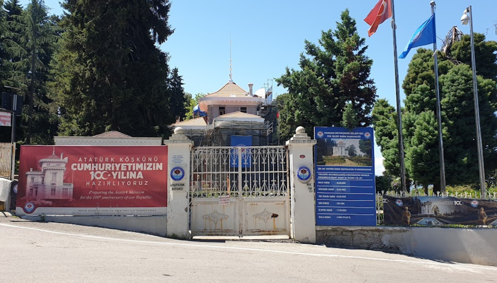
Le Deniz Rüzgarı dans les eaux du golfe de Göcek — une semaine de navigation, vingt et une sessions d'apprentissage, et un marin en devenir. Les connaissances acquises ne sont pas abstraites : chaque règle a été vécue dans une situation réelle, chaque concept est associé à un mouillage, un chenal, une décision.
Ce que vous avez appris — récapitulatif du voyage
Ce voyage dans le golfe de Göcek n'était pas qu'un voyage de vacances. Chaque situation a été un cours en action — les règles de barre ont pris vie dans le chenal de Göcek, la météo s'est concrétisée dans la décision du dimanche matin, le MAYDAY a été répété face à la capitainerie de Fethiye. Voici comment les modules se sont tissés dans le récit.
| Module | Session | Concept clé | Moment du voyage |
|---|---|---|---|
| 0 | Prologue | Qu'est-ce que le permis ? | Arrivée à Göcek |
| 1 | 1.1 | Vocabulaire du bateau | Visite du gulet avec Mehmet |
| 1 | 1.2 | Règles de barre | Sortie du chenal de Göcek |
| 1 | 1.3 | Feux et signaux | Première nuit à Tersane |
| 2 | 2.1 | Balisage IALA | Chenal de Fethiye |
| 2 | 2.2 | Carte marine | Ancré à Fethiye, le midi |
| 2 | 2.3 | Phares et amers | Quart de nuit à Fethiye |
| 3 | 3.1 | Cap et compas | Route vers Ölüdeniz |
| 3 | 3.2 | Marées | Conversation avec Emmanuel |
| 3 | 3.3 | Point estimé et GPS | Approche d'Ölüdeniz |
| 3 | 3.4 | Pilotage côtier | Route vers Butterfly Valley |
| 4 | 4.1 | Voile et allures | Retour sous Imbat |
| 4 | 4.2 | Manœuvres | Entrée en marina de Göcek |
| 4 | 4.3 | Mouillage | Hamam Koyu |
| 5 | 5.1 | Météo | Décision de traversée vers Kızılada |
| 5 | 5.2 | Équipement sécurité | Briefing gilets à Kızılada |
| 5 | 5.3 | Urgences (HAM, feu) | Exercice HAM off Yassıca |
| 5 | 5.4 | Brouillard, nuit | Brume nocturne à Kızılada |
| 6 | 6.1 | VHF, MAYDAY | Premier appel radio vers Fethiye |
| 6 | 6.2 | Documents, règlement | Douane de Fethiye |
| 7 | Épilogue | Examen blanc | Retour à Göcek |
Les 10 réflexes d'un bon marin côtier
Ces dix habitudes ne viennent pas d'un manuel — elles viennent de skippers qui ont appris, parfois à leurs dépens, que la mer punit la négligence sans délai et récompense la méthode sans fanfare.
-
Météo avant toute sortie — Bulletins, baromètre, nuages, houle. Pas uniquement "est-ce qu'il fait beau" — mais "est-ce que ça va rester beau pendant le temps que je serai en mer ?" William a vécu ce dimanche matin à Hamam Koyu : trois hPa de chute, des cirrus, et une décision de partir tôt. Il avait la météo, il a décidé en connaissance de cause.
-
Plan de navigation — Route tracée, dangers identifiés, abris de secours. La route directe vers Butterfly Valley passait sur un banc à 1,4 m. Sans plan de navigation, William aurait découvert ça à 50 mètres du fond.
-
Briefing sécurité — Gilets, extincteur, balise, signal d'alarme. William l'a fait le premier matin à Kızılada, cinq jours après le départ. Christelle avait mis le gilet dans un coffre et ne savait pas comment l'enfiler. Une minute de briefing au départ évite des heures de panique en urgence.
-
Veille permanente — La Règle 5 du RIPAM n'est pas une formalité. Sur l'eau, les incidents surviennent rapidement. Un bateau à 15 nœuds parcourt 100 mètres en 13 secondes. Regardez autour de vous, toutes les 10 minutes minimum. Ne naviguez pas en regardant votre téléphone.
-
Journal de bord — Notez la position, le cap, la vitesse, l'heure à chaque changement. Si le GPS tombe en panne, votre journal vous permet de reconstruire votre point estimé depuis la dernière position connue. Si un accident survient, votre journal est la première pièce du dossier.
-
Confirmation de position régulière — GPS + relèvements croisés. Le GPS dit que vous êtes à un endroit. Un relèvement sur deux amers dit la même chose, ou pas. Si les deux concordent : bien. Si ils divergent : quelque chose cloche — croyez l'observateur, pas l'électronique seule.
-
Conservatisme — En cas de doute sur une route, un fond, une météo, une manœuvre : prenez la décision la plus sûre, pas la plus rapide. Le détour de 2 NM vers Butterfly Valley était la bonne décision. Partir plus tôt vers Kızılada était la bonne décision. Le conservatisme ne gâche pas le voyage — il le rend possible.
-
Communication — Canal 16 en veille permanente, appeler avant d'avoir besoin. Signaler votre départ à la capitainerie, annoncer votre ETA au port d'arrivée. Si vous disparaissez, quelqu'un doit savoir que vous deviez arriver quelque part.
-
Humilité — Un skipper qui dit "je ne sais pas" est plus sûr qu'un skipper qui prétend tout savoir. Reconnaître les limites de ses compétences (la nuit, le gros temps, une manœuvre inconnue) et agir en conséquence — demander de l'aide, attendre, choisir une route moins exigeante — c'est une décision de bon marin, pas un aveu de faiblesse.
-
Connaissance du bateau — Avant de partir, vérifiez le moteur, les niveaux, les feux, l'armement, l'ancre. Un gulet qu'on n'a jamais vu trois jours avant le départ n'est pas "votre" bateau — c'est un bateau que vous allez apprivoiser. Mehmet le premier soir à Göcek avait raison : commencer par le bateau, avant la mer.
L'examen blanc
Cette session se termine par un examen blanc complet — 40 questions, dans les mêmes proportions thématiques que l'examen officiel, organisées autour du voyage dans le golfe de Fethiye. C'est votre premier test en conditions réelles avant l'examen officiel.
Comment aborder cet examen blanc :
- Installez-vous au calme, sans interruptions, pendant 1h45 maximum (durée officielle)
- Répondez à toutes les questions sans consultation de vos notes dans un premier temps
- Notez les questions sur lesquelles vous hésitez — revenez-y en fin d'examen
- À la fin : corrigez, identifiez les thèmes où vous avez fait des erreurs, revenez aux sessions correspondantes
Seuil de passage officiel : 35/40 (87,5%). Si vous atteignez ce score sur l'examen blanc, vous êtes prêt pour l'examen officiel. Si vous avez 30-34, ciblez les thèmes manquants. En dessous de 30 : révisez toutes les sessions avant de vous présenter.
L'examen du permis côtier comporte 40 questions à choix multiples. Durée officielle : 1h45. Seuil de réussite : 35/40 (87,5%).
Structure de l'examen — répartition par thème :
40 questions │ 1h45 │ Seuil : 35/40 (87,5%)
Balisage IALA ██████████░ 7–10 questions
Règles de barre / feux █████████████ 10–12 questions
Navigation ████████░░░ 6–8 questions
Sécurité / météo █████████░░ 7–9 questions
Radio / réglementation ██████░░░░░ 4–6 questions
Les règles de barre et les feux représentent le quart de l'examen — c'est le bloc le plus lourd. Le balisage est le deuxième thème critique. Concentrez vos dernières révisions sur ces deux domaines si le temps manque.
Les questions couvrent l'ensemble des modules :
- Balisage : 7–10 questions
- Règles de barre et feux : 10–12 questions
- Navigation : 6–8 questions
- Sécurité et météo : 7–9 questions
- Radio et réglementation : 4–6 questions
Voir Wiki/wiki/questions/ pour la banque de questions complète.
Stratégie d'examen :
- Lisez chaque question deux fois — les pièges sont souvent dans les mots "toujours", "jamais", "uniquement".
- Eliminez les réponses clairement incorrectes avant de choisir.
- Si vous hésitez entre deux réponses, notez la question et revenez-y en fin d'examen.
- Les questions de balisage et de feux sont visuelles — visualisez mentalement la scène.
- Les questions de règles de barre ont toujours une logique derrière — retrouvez la règle.
Question 1 : En entrant dans le chenal de la marina de Göcek, William voit une bouée rouge conique à droite et une bouée verte cylindrique à gauche. Il vient de la mer. Quel côté garde-t-il chaque bouée ?
- A) Bouée rouge à bâbord (gauche), bouée verte à tribord (droite)
- B) Bouée rouge à tribord (droite), bouée verte à bâbord (gauche)
- C) Les deux côtés sont équivalents — choisir le côté le plus large
Voir la réponse
Réponse : B — En système IALA A (Méditerranée, Europe) : en entrant dans le port (en remontant dans le sens conventionnel), la marque de tribord est rouge et se garde à tribord (droite). La marque de bâbord est verte et se garde à bâbord (gauche). Mnémotechnique : "rouge à droite en rentrant" (IALA A). En IALA B (Amériques), c'est l'inverse — "red right returning".Question 2 : La veille du départ de Göcek, William relit ses notes. Parmi ces signaux sonores, lequel est FAUX ?
- A) 1 son long par visibilité réduite (navire à moteur en route) = signal correct
- B) 3 sons brefs = "mes machines sont en marche arrière" = signal correct
- C) 4 sons brefs = "je vire à bâbord" = signal correct
Voir la réponse
Réponse : C — Il n'existe pas de signal "4 sons brefs". Les signaux de manœuvre en vue d'un autre navire sont : 1 bref = gouverne à tribord, 2 brefs = gouverne à bâbord, 3 brefs = machines en marche arrière, 5 brefs = danger / incompréhension. 4 sons brefs n'a pas de signification réglementaire.Question 3 : William récapitule les priorités COLREGs. Laquelle de ces affirmations est CORRECTE ?
- A) Un voilier sous voiles cède toujours le passage à un navire à moteur en situation de croisement
- B) Un navire à moteur cède le passage à un voilier sous voiles — sauf en chenal étroit ou en situation de rattrapage
- C) Le plus petit navire est toujours prioritaire sur le plus grand, quelle que soit la situation
Voir la réponse
Réponse : B — Règle 18 : navire à moteur s'écarte devant voilier sous voiles (hors exceptions). Exceptions : règle 9 (chenal étroit — le voilier cède au navire contraint), règle 13 (rattrapage — le rattrapant cède quelle que soit sa catégorie). La taille (C) n'est jamais un critère de priorité dans le RIPAM.Question 4 : Au dernier soir, Emmanuel pose la question : "Le tirant d'eau du Deniz Rüzgarı est 2 m. La carte indique une sonde de 1,8 m dans une crique. La marée est à +0,5 m au-dessus du zéro hydrographique. Peut-on entrer ?"
- A) Oui — profondeur réelle = 1,8 + 0,5 = 2,3 m, supérieure au tirant de 2 m
- B) Non — la sonde carte est de 1,8 m, inférieure au tirant de 2 m, point
- C) Oui — la marge de 0,3 m est suffisante pour un ketch de 13 m
Voir la réponse
Réponse : A — Profondeur réelle = Sonde + Hauteur de marée = 1,8 + 0,5 = 2,3 m. Avec un tirant de 2 m, la marge est de 0,3 m. C'est juste mais mathématiquement possible — en pratique on ajouterait 0,5 m de marge de sécurité supplémentaire sur fond inconnu. B ignore la marée montante. La réponse correcte à l'examen est A (calcul correct), mais la décision prudente ajouterait une marge.Göcek Marina, D-Marin, 10h30.
L'ancre remonte. Les amarres sont larguées. Le Deniz Rüzgarı glisse vers son poste au ponton F.
William passe son dernier cap. La marina est calme — d'autres bateaux partent pour leur journée. Il voit maintenant chaque détail : les feux de direction à l'entrée du chenal, les marques latérales (verte à tribord en entrant), l'anémomètre qui tourne doucement dans le vent matinal.
Emmanuel est sur le ponton — il a sauté à terre à l'approche, comme un marin. Il attrape l'amarre de proue. Mehmet attrape la poupe.
"Alors ?" dit Emmanuel.
William fait le nœud de taquet d'un geste net. "J'ai passé mon examen dans ma tête. Je pense que je suis prêt." Rebecca, depuis le cockpit : "Il a bossé tout le voyage, même à Butterfly Valley." Christelle rit.
Mehmet sourit. "İyi yolculuklar. Bon voyage."
Fin du cours. L'examen blanc de 40 questions est accessible via le menu /permis-exam.